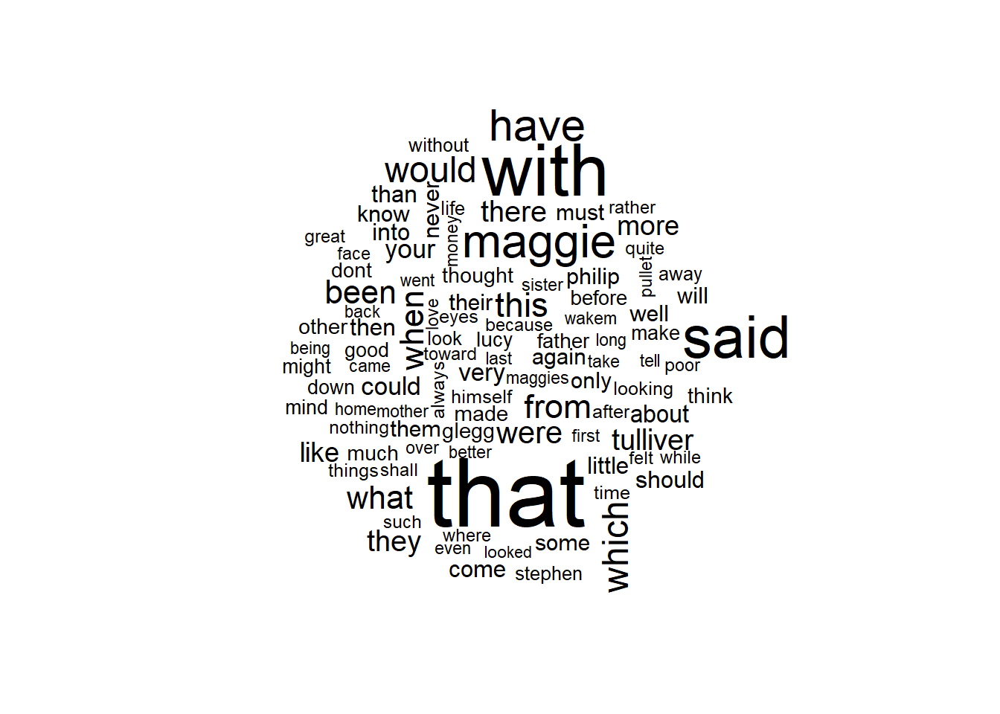

library(tm)
#install.packages("tm")
library(stringr)
library(wordcloud)
# ONCE: install.packages("Snowball")
## NOTE Snowball is not yet available for R v 3.5.x
## So I cannot use it - yet...
##library("Snowball")
##set working directory
## ONCE: install.packages("slam")
library(slam)
library(quanteda)
## ONCE: install.packages("quanteda")
## Note - this includes SnowballC
library(SnowballC)
library(arules)
##ONCE: install.packages('proxy')
library(proxy)
library(cluster)
library(stringi)
library(proxy)
library(Matrix)
library(tidytext) # convert DTM to DF
library(plyr) ## for adply
library(ggplot2)
library(factoextra) # for fviz
library(mclust) # for Mclust EM clustering
library(naivebayes)
#Loading required packages
#install.packages('tidyverse')
library(tidyverse)
#install.packages('ggplot2')
library(ggplot2)
#install.packages('caret')
library(caret)
#install.packages('caretEnsemble')
library(caretEnsemble)
#install.packages('psych')
library(psych)
#install.packages('Amelia')
library(Amelia)
#install.packages('mice')
library(mice)
#install.packages('GGally')
library(GGally)
library(e1071)Naive Bayes
Tutorial: Naive Bayes (etc) in R for Text data and for Record data. Text will be corpus
Topics: - Tokenization - Vectorization - Normalization - Naive Bayes
THE DATA CORPUS IS HERE: https://drive.google.com/drive/folders/1J_8BDiOttPvEYW4-JxrReKGP1wN40ccy?usp=sharing
Also - for fun - here is another corpus to play with https://drive.google.com/drive/folders/1NnPZfhg_04lUAdKPNMMqkTcyfF6Z0BP2?usp=sharing
RECORD DATA IS HERE: https://drive.google.com/file/d/18dJPOiiO9ogqOibJppc0lsDiQ2-bQs0f/view?usp=sharing
Read in the datasets
####### USE YOUR OWN PATH ############
setwd(dirname(rstudioapi::getActiveDocumentContext()$path))Remember - we have TWO (2) datasets here.
One is text data from a corpus called Novels_Corpus (link above)
The other is record data as csv - the Summer Student dataset.
StudentDataFile="../../data_files/StudentSummerProgramDataClean_DT.csv"
head(StudentDF<-read.csv(StudentDataFile)) Gender State GPA WorkExp TestScore WritingScore Decision
1 Female California 3.90 6.7 962 100 Admit
2 Female Florida 3.80 1.4 969 97 Admit
3 Male California 3.80 2.3 970 98 Admit
4 Male Colorado 3.60 0.9 969 97 Admit
5 Male Colorado 3.92 1.2 969 95 Admit
6 Male California 3.80 1.2 967 95 Admit## Next, load in the documents (the corpus)
NovelsCorpus <- Corpus(DirSource("../../data_files/Novels_Corpus"))
(ndocs<-length(NovelsCorpus))[1] 13(summary(NovelsCorpus)) ## This will list the docs in the corpus Length Class Mode
Austen_Emma.txt 2 PlainTextDocument list
Austen_Pride.txt 2 PlainTextDocument list
Austen_Sense.txt 2 PlainTextDocument list
CBronte_Jane.txt 2 PlainTextDocument list
CBronte_Professor.txt 2 PlainTextDocument list
CBronte_Villette.txt 2 PlainTextDocument list
Dickens_Bleak.txt 2 PlainTextDocument list
Dickens_David.txt 2 PlainTextDocument list
Dickens_Hard.txt 2 PlainTextDocument list
EBronte_Wuthering.txt 2 PlainTextDocument list
Eliot_Adam.txt 2 PlainTextDocument list
Eliot_Middlemarch.txt 2 PlainTextDocument list
Eliot_Mill.txt 2 PlainTextDocument listChange the COrpus into a DTM, a DF, and Matrix
Novels_dtm <- DocumentTermMatrix(NovelsCorpus,
control = list(
#stopwords = TRUE, ## remove normal stopwords
wordLengths=c(4, 8), ## get rid of words of len 3 or smaller or larger than 15
removePunctuation = TRUE,
removeNumbers = TRUE,
tolower=TRUE,
#stemming = TRUE,
remove_separators = TRUE
#stopwords = MyStopwords,
#removeWords(MyStopwords),
#bounds = list(global = c(minTermFreq, maxTermFreq))
))
########################################################
################### Have a look #######################
################## and create formats #################
########################################################
#(inspect(Novels_dtm)) ## This takes a look at a subset - a peak
DTM_mat <- as.matrix(Novels_dtm)
(DTM_mat[1:13,1:10]) Terms
Docs abbey abbeyoh abbots abdys abhor abhorred abide able
Austen_Emma.txt 23 1 1 1 1 1 1 67
Austen_Pride.txt 0 0 0 0 0 0 1 54
Austen_Sense.txt 0 0 0 0 1 2 0 46
CBronte_Jane.txt 0 0 1 0 4 5 2 23
CBronte_Professor.txt 0 0 0 0 0 4 1 8
CBronte_Villette.txt 0 0 0 0 0 1 0 16
Dickens_Bleak.txt 1 0 0 0 0 0 0 73
Dickens_David.txt 2 0 0 0 0 0 1 40
Dickens_Hard.txt 0 0 0 0 0 1 1 10
EBronte_Wuthering.txt 0 0 0 0 0 2 2 16
Eliot_Adam.txt 8 0 1 0 0 0 8 42
Eliot_Middlemarch.txt 0 0 0 0 0 0 2 75
Eliot_Mill.txt 0 0 0 0 0 0 5 31
Terms
Docs ableand ablehave
Austen_Emma.txt 1 1
Austen_Pride.txt 0 0
Austen_Sense.txt 0 0
CBronte_Jane.txt 0 0
CBronte_Professor.txt 0 0
CBronte_Villette.txt 0 0
Dickens_Bleak.txt 0 0
Dickens_David.txt 0 0
Dickens_Hard.txt 0 0
EBronte_Wuthering.txt 0 0
Eliot_Adam.txt 0 0
Eliot_Middlemarch.txt 0 0
Eliot_Mill.txt 0 0#########################################################
######### OK - Pause - now the data is vectorized ######
## Its current formats are:
## (1) Novels_dtm is a DocumentTermMatrix R object
## (2) DTM_mat is a matrix
#########################################################
#Novels_dtm <- weightTfIdf(Novels_dtm, normalize = TRUE)
#Novels_dtm <- weightTfIdf(Novels_dtm, normalize = FALSE)
## Look at word freuqncies out of interest
(WordFreq <- colSums(as.matrix(Novels_dtm))) abbey abbeyoh abbots abdys abhor abhorred abide able
34 1 3 1 6 16 24 501
ableand ablehave ableshe abode about above abroad abroadof
1 1 1 52 4587 457 90 1
abrupt abruptly absence absences absent absented absolute abundant
43 54 216 2 76 3 45 45
abused abusing acceded accent accents accept accepted accepts
17 8 7 72 24 148 136 6
accident accord accosted account accounti accounts accrue accuse
73 32 17 504 1 64 3 26
accused achieved acquire acquired acquit acre across acrostic
27 32 19 45 16 4 300 1
acted acting action actions actit active activity actual
100 61 216 84 1 148 50 55
actually acute adair adapt added adding addition address
137 37 1 8 547 47 83 196
adelaide adequate adieus admire admired admirer admires admiring
3 21 5 107 98 19 18 43
admit admits admitted adopt adoption adored advance advanced
116 13 102 33 5 17 65 140
advances advice advise advised adviser advising advocate aemmado
41 148 78 42 19 10 14 1
affable affair affairs affect affected affirm affix affixed
29 166 150 45 127 9 2 5
afford afforded affords afloat afraid after again againand
101 42 3 5 501 3004 3379 5
againbut againfor againgo againit againmr againno against againto
4 1 1 1 2 1 1287 1
againyet ageand ages agewhat aghast agitate agitated agoemma
3 1 47 1 12 6 77 1
agohow agony agoshe agothat agowhat agree agreed agreeing
1 82 1 1 1 100 120 17
agrees ahead ahindeed ahso ahwellto aids aimable aimed
8 8 1 1 1 5 1 17
aired airedbut airing airs airy airymr ajar alacrity
4 1 12 39 37 1 24 28
aladdins alarm alarmed alarming alarms alas alert alfresco
2 125 88 46 10 36 17 1
alike alive alla alland allay allhe allhere alli
87 133 4 7 4 1 1 3
alliance allied allies allnot allonly allow allowed allowing
28 5 3 3 1 288 247 45
alloy allprice allshe alluded alluding allusion allyou allyour
9 1 2 39 15 70 2 1
almost alone alonei along aloud aloudall aloudyou alphabet
1030 761 2 580 126 1 1 14
already also alsoit altar alter altered although always
584 553 1 25 38 116 126 2294
alwaysi amazed amazing amazingi ambition amends amiable amid
1 53 20 1 59 52 185 25
amidst amiss amity amityhe among amongst amor amount
79 29 10 1 818 164 1 121
amounted ample amply amshe amuse amused amusedmr amuses
8 39 19 1 52 81 1 9
amusing amyou analogy ancient andmay anecdote angel anger
43 1 3 58 1 12 118 169
angles angry animated anna anne announce another anotheri
14 282 67 3 33 28 1721 2
anothers answer answered answers antidote anxiety anxious anything
31 725 657 81 5 197 299 1475
anywhere apart apiece apology apparent appeal appealed appear
130 110 12 52 54 79 33 243
appeared appeari appears appease appeased appetite apple apples
584 1 122 3 14 70 31 36
applied apply applying approach approval approve approved approver
75 47 23 120 29 64 52 1
approves april arch archly ardent arei argued argument
6 26 55 7 63 1 24 62
aright arise arisebut arisen arises arminarm armmr arms
3 40 1 29 10 10 1 510
arose around arrange arranged arrear arrival arrive arrived
56 165 43 121 4 190 47 191
arriving arrow article articles artifice artist artless ashamed
25 6 82 77 8 23 17 187
aside asked asking askis asks asleep aspect asperity
166 1081 187 1 92 143 133 6
aspired assailed assent assentdo assented assert asserted assist
11 6 45 1 41 33 22 74
assisted assume assuming assure assured assuring astleys astonish
43 24 22 292 146 22 5 15
astray asunder atand ator attach attached attack attacked
15 21 1 1 30 131 49 10
attained attempt attempti attempts attend attended attends attitude
25 160 1 37 120 128 10 105
attorney attract audible audibly augur august augusta aunt
23 25 44 15 6 30 10 1241
aunts auntthe auspices austen author autumn avail availing
164 1 6 3 18 55 24 3
avenue avenues avert averted averting avoid avoided avoiding
37 5 14 16 6 143 56 22
avowed avowedly awake awakened aware away awayand awaybut
12 1 67 57 308 2485 6 1
awayhe awes awkward awoke ayelike baby back backward
4 1 61 60 1 184 2016 81
badhe badly badno badthe bailiff bake baked bakers
1 24 1 1 14 3 18 9
baking balance ball ballroom balls ballswas ballthe ballwhy
11 29 100 17 27 1 1 1
band bandied bangs banished bank bare barely bargain
46 2 1 35 140 123 29 47
barnes baronne bars base basin basins basis basket
2 2 20 52 47 5 17 129
baskets bates bateses batesesi bateshe batesi batesit batess
10 123 4 1 1 2 1 22
bateswe bath bathbut bathing battle beam beaming beand
1 48 1 8 28 27 17 4
bear bearand bearer bearers bearing bears beat beau
596 2 12 11 123 32 108 22
beauties beauty beavers bebut became because become becomes
24 361 2 4 463 1536 426 68
becoming bedroom beds bedtime been beenan beenhard beenlong
139 98 56 19 7949 1 1 1
beenmr beenthat beetroot befor before beforei beforein befriend
1 1 1 1 3850 3 1 5
began begged begging begin begins beginshe begs begun
972 123 43 295 70 1 22 193
behalf behave behaved behaving beheld behind behold being
56 56 79 20 57 648 66 3160
beings beit belief believe believed believes bell bella
56 1 157 1173 365 33 190 1
bellas belong belonged belongs beloved below bench bend
2 68 86 51 54 190 78 43
bending bends beneath benefit beno benow bent besides
95 15 110 80 1 1 254 464
best bestmy bestow bestowed bethen beto betray betrayed
1053 1 48 55 1 1 54 63
better betteror between bevery beyond bias bids bilious
2094 1 1265 1 498 16 9 15
bird birth birthday biscuits bitter bitterly black blame
102 73 60 7 153 60 557 122
blamed blank bleak blended bless blessed blessing blind
23 105 77 20 216 93 104 168
blinded blinder blinds blocked blood bloom blooming blossom
20 18 20 12 242 59 57 29
blot blow blown blue blunder blunders blunt blush
15 127 32 250 19 14 14 77
blushed blushes blushing boarder boast boasted boastful boasts
61 11 44 4 46 22 7 5
bodies body bodyand bodyany bodys boil boiled boiling
22 400 1 1 34 10 26 18
boils bond bone bonnet book books bookwas boot
3 37 33 254 407 353 1 17
bordered bore born borne borrow borrowed bosom both
18 138 205 109 22 46 81 1281
botha bothi bothsuch bottom bought boughtor bound bounded
1 1 1 94 153 1 222 15
bounds bowed bows boyish boys brace bragge bragges
23 92 23 32 263 9 5 4
brain branch bravado bread break breaking breaks breast
88 40 1 162 164 119 30 147
breath breathe bred brewing brick bride bridei brief
229 42 30 9 50 69 1 133
briefly bright brighter bring bringing brings briskly bristol
36 367 36 506 172 61 13 8
broad broader broadway broiling broke broken broth brother
189 16 1 3 238 256 18 680
brothers brought brunt brutal build building built bulky
175 991 1 16 34 115 52 4
buried burn burst bursts burying bushel busiest business
95 40 204 13 12 8 8 926
bustle busy butcher butchers butler butlers butter butthat
48 230 35 12 27 2 79 1
buttons buyings byei byeno cabinets cake call called
27 1 1 1 6 41 693 833
calling calls calm calmer calmly calmness came camea
204 96 247 25 76 48 2372 1
cameos camevery campbell candidly candles candour canhere cannot
8 1 43 13 69 33 1 985
cant canto capable capacity capital caprice caprices caps
777 1 130 66 107 27 11 26
captain captious cardroom cards cardsand care cared career
168 3 5 51 1 769 125 59
careful careless cares caresand caresses carewhen caring caro
106 91 70 1 22 1 35 5
carriage carried carries carrot carry carrying cart case
361 313 28 1 249 167 74 623
caseand casei casement cases cast catch catching cattle
2 1 27 65 198 100 45 24
caught cause causes caution cautioni cautious cavil caviller
235 315 49 51 1 41 3 1
cease ceased ceases ceasing ceiling celibacy cellery censure
57 129 8 13 55 5 1 25
centre ceremony certain chained chair chaise chamber chambers
67 104 746 10 654 56 174 66
chance chancei chances chancing change changed changeit changes
305 1 31 5 590 273 1 86
changing channel chaperon chapter chapters charade charades charge
63 37 4 704 14 21 5 160
charges charity charm charming chat chatted chatter chatty
20 64 106 163 37 7 13 9
cheap check checked checking cheek cheeks cheer cheerful
47 82 95 29 220 130 61 234
cheering cheese chicken chief chiefly child children childs
29 44 14 116 136 885 652 60
chimney choice choose chose choseand chosen church chuse
39 148 163 127 1 117 413 30
chusebut chuses chusing ciphers circle circles circular citizen
1 4 5 3 101 24 9 3
civil civility civilly claim claimed claiming claims class
88 89 13 150 30 9 92 122
classed classing clayton clean clear cleared clearer clearing
5 1 1 142 444 74 26 25
clearly clemency clerk clerks clever cleverer cleveror clifton
126 5 95 38 167 8 1 1
climate clinging cloak clock close closed closely closer
22 42 81 119 593 258 91 57
closest closet closing cloth clothed clothes clothing cloud
15 33 49 46 14 206 21 119
clouds clover clownish club clung coach coaches coachman
103 3 3 25 64 215 12 56
coachmen coarse coarser coast cobham cockade coddling coffee
5 66 3 22 1 2 2 93
coffeea cold coldand colder coldest coldly coldness colds
1 554 1 19 10 38 51 7
coldso cole colehe coles colesand collect colonel colour
1 48 1 25 1 27 298 144
coloured colours column combated combine combined come comeand
50 30 9 2 11 28 3742 4
comebut comemuch comes comeso comfort comforts coming command
2 1 451 1 394 37 933 120
commands commend comment comments commit common commonly company
12 5 33 7 25 360 15 429
compare compared complain complete compose composed compress comtesse
36 66 54 165 16 91 3 2
conceal conceit conceive concern concerns concert concerts concise
91 28 63 115 43 23 3 6
conclude condemn conduce conduct conducti confers confess confide
27 17 4 267 1 4 154 32
confine confined confirm confound confuse confused conjugal connect
16 68 24 35 5 111 11 13
conquest consent consenti consents consider console constant consult
21 170 1 3 339 23 131 53
contain contend contents continue contract contrary contrast contrive
20 19 102 73 14 203 101 25
converse convey conveyed convince cook cool cooland cooled
37 31 41 48 45 144 1 12
cooler cooling coolly coolness cooper cope copied copy
13 11 55 40 2 6 20 34
copying corals cordial corn corner correct correcti cost
24 1 64 49 351 85 1 81
cottage cotton cough coughing could couldah couldhow council
165 28 65 22 7046 1 1 10
counsel counsels count counter counties country county couple
62 4 61 29 7 513 67 117
coupled couplei couplet courage course courses court courtesy
10 1 1 162 983 13 373 24
courts cousin cousins covered covering covert cowper cows
22 360 151 143 49 10 5 29
coxcomb coxea coxeoh coxes coxs cramp crayon crayons
12 1 1 5 1 5 4 5
cream create created creating creation creature credit creep
11 25 29 15 21 363 141 16
cried criedand crisis critical cromer cross crossand crossed
838 1 59 32 3 166 1 111
crosser crosses crowd crowda crowdand crowded crown cruel
4 12 99 1 1 37 77 169
crushed cryout culture cure cured cureher curenot curious
64 1 12 43 16 1 1 175
curled curs curse curtains curtseys curve custard custom
38 4 34 48 1 15 4 79
cutting daily dalmane damp damps dance danced dancer
71 130 1 81 3 176 42 9
dancers dances dancing danger dangers dare dared dares
6 23 115 214 9 385 179 6
daring daringly dark darker darling darted darting dashed
43 3 684 30 178 35 17 36
dashing date dated dating daughter dawdling daya dayabout
22 48 14 2 456 2 2 1
daybut dayeven dayfor daynever days daysmr daytill daywhich
5 1 1 2 825 1 1 1
dead deaf deafer deafness deal dealbut dealing dealings
438 46 1 5 721 2 24 10
dealt dear dearand dearbut dearer dearest deari dearly
18 2431 4 4 30 142 3 43
dears death deathbed debased debate debt decease deceiti
27 446 9 4 21 103 23 1
deceive deceived december decent decide decided decides deciding
52 61 16 67 48 154 2 6
decision decisive declare declared declarei declares decline declined
97 30 85 115 1 17 42 86
decorum decree deed deedily deem deemed deep deeper
19 10 56 1 10 53 459 110
deepest deepin deeply defeat defects defence defend defended
40 1 136 13 31 23 33 10
defer defiance defies defined defying degree degreei delay
40 40 5 17 12 205 1 99
delayed delays delicacy delicate delight delights deliver delusion
24 11 83 175 275 27 45 30
demand demanded demands demure demurred demurs denial denied
80 120 33 10 1 1 23 45
denote denoted denotes dentist deny denying denyshe depart
5 11 2 4 106 27 1 51
departed depend depended depends deplore deposit deprived derived
108 106 41 36 5 12 21 39
deriving describe descried desert deserted deserts deserve deserved
4 70 9 61 49 20 87 64
deserves design designs desire desired desires desiring desirous
29 72 22 311 133 36 32 45
despair despatch despise dessert destind destined destiny destroy
112 15 45 12 1 38 55 25
detach detached detail detailed detain detained detected device
4 11 31 9 27 37 43 20
devil devise devoid devote devoted devoting devotion dews
122 10 23 23 125 15 52 4
dialogue dictate dictated didand didbut didto didwhile died
43 14 13 5 1 2 1 260
dies dieshe diet differ diffuse diffuses dignity dilatory
18 1 11 18 5 1 138 5
dine dined dining dinner dinners dint direct directed
107 63 36 508 24 25 132 106
directly direful dirt dirty disagree discern discover discreet
288 3 46 97 11 43 73 20
discuss disdain disgrace disguise disgust disgusts dish dishes
25 36 94 40 80 2 29 20
dislike disliked dismal dismay disorder dispel dispense disperse
142 51 67 22 31 5 19 9
display displays dispose disposed dissuade distance distant distaste
30 5 30 172 11 347 201 5
distinct distress distrust disturb ditch divert diverted divested
93 153 32 56 17 20 34 8
divide divided divined division dixon dixons doall doand
33 90 20 52 40 10 1 5
doat doated doating dobut docile doer does doesfine
5 4 2 4 23 1 985 1
dohow doing doings doleful domestic domiss done donei
3 557 20 16 102 1 1599 3
doneone donkey donkeys dono dont donwell doom doomed
2 45 20 1 2746 44 25 20
door doorand doori dooroh doors doorsa doorsshe doquite
1419 1 2 1 201 1 1 1
dorking dosmall dostalis doth dothe double doubled doubly
1 1 1 14 3 107 14 15
doubt doubted doubtful doubts dovery dowe down downand
727 69 93 69 4 2 3139 4
doyou dozen drain drank draught draughts draw drawback
3 62 8 60 52 19 164 9
drawers drawing drawings drawn draws dread dreaded dreadful
53 198 18 202 27 217 74 165
dream dreamer dreaming dreams dreamt dress dressed dressing
183 8 38 86 17 331 209 50
drew drifted drifting drink drinking drive driven driving
319 10 8 154 89 121 98 57
drizzle drop dropped drops dropt drove drown drowned
4 87 160 54 12 112 10 32
drudge drugs drunk dryly dryness dubious dublin dueor
7 20 49 10 3 15 1 1
dull dulness duly dupe duped during dusk dust
164 18 38 5 2 349 53 92
dusty duties dutiful duty dwell dwelling dwelt dwindled
37 99 18 361 45 64 58 3
dying each eachshe eager eagerly earlier earliest early
115 923 1 180 109 70 33 449
earn earned earnest earth ease easier easily easter
34 21 183 221 219 82 274 12
easy easybut eatand eaten eating eats eatsso eclat
379 1 1 26 93 9 1 3
edition educate educated effect effecti effects efficacy effort
12 7 40 390 2 68 8 218
efforts effusion eggs eight eighteen eighth either elbow
84 11 26 178 71 2 549 88
elder elderly eldest elect elegance elegant elevate eleven
81 58 122 4 57 88 10 54
eligible eligibly elms else elseand elton eltonno eltons
36 1 11 1055 5 317 1 86
eltonsa embodied embraces eminent emma emmaa emmaand emmabut
1 9 4 30 780 1 1 3
emmaemma emmai emmaits emmas emmashe emmatell emmawhat emmayou
1 1 1 79 1 1 2 2
emotion emotions emphasis employ employed empty emulate enable
156 67 78 50 101 143 3 53
enabled enclosed endanger endbut endeared ended ending ends
42 36 2 1 3 138 13 61
endure endured enduring enemies enemy energy engage engaged
102 40 11 33 57 128 53 300
engages engaging england english engross enhanced enigmas enjoy
6 53 187 307 7 7 2 128
enjoyed enjoying enjoyshe enlarge enlarged enliven enmity ennui
87 57 1 18 18 4 17 10
enormous enough enoughmy enoughto enquired enrich enscombe ensued
23 1580 1 1 3 5 35 28
ensure enter entered entering enters entire entirely entitle
10 211 515 126 19 74 340 2
entitled entrance entreat entree enviable envied envious environs
15 150 58 3 14 12 12 6
envy envyyou epithets equal equality equalled equally equals
44 1 6 224 21 9 175 7
erection errand errands errant error errors errs escape
4 56 11 3 61 40 2 114
escaped escaping escorted espalier especial essaybut estate esteem
62 13 12 1 11 1 129 66
esteemed estimate eternal evasions even evening evenings event
51 30 34 3 1969 1081 83 140
eventa events eventshe ever everbut evermrs every everyday
1 114 1 2326 1 1 2288 36
evidence evident evil evilbut evilno evils evinced exact
98 92 214 1 1 35 27 64
exactly examine examined example exceed exceeds except excepted
305 57 68 110 10 1 488 18
excess excesses exchange excite excited excites exciting exclaim
32 5 50 29 138 3 42 15
exclude excluded excuse excused excusein excuses exercise exert
21 27 245 33 1 22 102 38
exerted exerting exertion exist existed expect expected expense
12 11 74 35 32 316 502 102
expenses expert explain explains explore explored expose exposed
51 6 116 10 8 6 30 34
express expressi extend extended extent exterior extracts extreme
204 1 19 34 88 16 4 88
exult exulting eyea eyeand eyebrows eyehe eyeing eyeof
4 11 2 1 91 2 25 1
eyes eyesand eyesin eyethat eyethe face faceher faces
2208 2 1 1 2 2134 1 180
facing fact facts fagged fail failed failing failings
12 546 107 8 86 98 26 8
fails failure failures faint fainted faints fair fairest
9 50 11 126 15 1 321 6
fairfax fairfaxa fairfaxi fairfaxs fairly fairone fairy faith
323 1 1 44 56 1 63 129
faithful fall fallen falling falls false fame familiar
101 287 184 146 67 151 21 141
families family famous fancied fancies fanciful fancy fancyi
97 1118 44 96 28 13 325 1
fancying fare farm farmer farmers farming farmyou farther
35 23 140 43 47 32 1 222
farthest fashion fast fasten faster fatal fate father
18 125 290 25 45 63 97 1471
fathermr fatheror fathers fathomed fatigue fatigued fatigues fault
2 1 368 2 60 33 6 203
faults favour fear feared fearedi fearful fearless fears
100 204 501 143 1 65 11 116
fearshe feasible feature featured features february feeble feebly
1 5 42 2 203 29 102 26
feed feel feeling feelings feelnot feels feetit feigning
38 1021 900 647 1 95 1 6
felicity fell felling fellow fellowno fellows felt feltit
38 441 3 540 1 84 1969 1
female females feminine fence fenced fervour fetch fetched
108 15 52 24 7 26 148 36
fetches fetching fever feverish fewer fidget fidgets field
5 14 92 34 18 5 3 92
fields fifty fight figure figured figures fill filled
167 119 51 386 7 96 81 234
filling fills final finale find findi finding finds
41 13 52 2 1117 1 224 85
fine finery finest finger finis finish finished fire
744 18 55 130 3 66 190 811
firei fires fireside firm firmly first firstbut firstshe
1 35 50 149 48 2546 1 1
fish fits fitted five fiveor fixed fixing flakes
56 39 51 489 1 282 39 15
flame flatter flattery flavour flesh fleshbut flew flies
54 41 23 24 92 1 45 20
flight fling flirted floated flock flocks floor flow
64 14 5 23 17 6 227 63
flowed flower flowers flown fluently flurry flushed flutter
27 63 191 11 5 3 73 34
flying fogs fold folded follow followed follows folly
53 2 31 115 217 378 63 116
follyit fond fondand fondest fondling fondly fondness food
1 393 1 7 11 30 39 91
fool foolish fools foot footing footpace footpath footstep
140 132 38 263 40 2 5 16
foppery forand forbade forbid forbut force forced forcibly
1 2 21 38 1 223 206 14
forcing ford fords fordswho foresaw foresee foreseen forest
22 8 7 1 20 25 32 26
foretell foretold forever forfeit forgave forget forgets forgive
3 8 47 9 14 309 13 213
forgiven forgot forlorn form formal formed former formerly
38 120 39 369 58 163 261 71
formhis forming forms forsuch forswear forth forthi fortune
1 52 86 1 1 257 1 282
forty forward forwards found four fourteen fourth frame
78 409 41 1465 387 27 48 137
framed frank frankgo frankit franks fraud freak freaks
30 247 1 1 10 12 7 4
free freed freedom freeze french frequent fresh friday
284 21 83 5 210 105 288 38
fried friend friendan friendly friends fright frighten from
4 1130 1 177 766 35 31 8911
fromand fromi front frost frown frozen fruit full
1 1 226 32 51 33 68 766
fuller fullest fully funeral furnish further fuss future
24 14 155 83 28 364 32 332
gaieties gaiety gaily gain gained gainer gaining gains
5 35 40 60 100 2 22 8
gaiters galaday gallant game games gang garden gardens
18 2 40 92 21 7 399 23
garricks garters gate gates gatesnow gather gave gayest
1 5 224 81 1 63 1033 8
gaze general generous genial genius genlis genteel gentle
109 594 122 51 52 1 55 209
gently genuine george gesture gestures gets getting gifted
154 86 486 50 17 127 461 12
gifts giggle gilbert gilberts gipsies gipsy girl girls
37 5 5 2 7 21 891 329
give givefor giveit given giver gives giving glad
1728 1 1 794 5 174 385 694
gladly gladness glance glanced glancing glaring glass glasses
27 15 376 131 139 16 322 37
glee glibly glimpse gloom gloomy gloried glory glossed
20 2 76 83 73 5 72 1
gloves glow glowing glowto goand goddard goddards godmr
80 71 47 2 7 25 34 1
goes going goingher goingson goingyou gold gone goneand
260 1835 1 3 1 135 1188 2
gonebut good goodbut goodbye goodhe goodi goodly goodness
1 3725 3 96 2 2 9 154
goodshe goodwill goose goosethe gossip gout governed gowhy
2 59 13 1 45 14 16 1
gowith gown gownhow goyou grace graceful graces gracious
1 88 1 1 147 75 32 78
gradual grahams grand grandeur grant granted grateful gratify
15 24 120 29 25 39 156 24
grave gravel gravely graver gravity grease great greatand
299 50 90 15 86 9 2537 1
greater greatest greatly greens greeted grew grey grief
285 170 137 20 19 185 209 168
grieve grieved grievous gross grossly ground grounds group
45 59 18 15 5 431 105 84
grove groveand grow growing grown grownup grows grudged
65 1 117 176 124 11 26 4
gruel guard guarded guess guessall guessed guessi guessing
16 75 41 110 1 57 1 18
guest guests guidable guidance guide guided guilt guilty
110 62 1 33 62 44 38 63
guinea habit habits habitual hadit hair haira hairwith
19 198 129 61 1 671 1 1
hairyou half halfboot halfhour halfway halfyear hall hand
1 1035 1 39 16 15 361 2301
handed handle handled hands handsa handsome hang hanging
66 49 20 1157 3 396 66 107
hannah happen happened happens happier happiest happily happy
40 200 423 48 93 53 101 929
happyand happyit harbour hard hardened hardly hardship hardy
2 1 12 674 25 748 25 17
harm harmless harmony harp harriet harrieta harrieti harriets
166 24 41 19 436 1 1 87
harry harsh harshly hasand hasten hastily hasty hate
31 62 15 1 25 132 88 156
hateful hating hatred haunted haunting haunts have haveand
29 7 48 56 16 11 15534 2
havei having hawkins hawkinsi hawkinss hazard hazarded hazards
1 1514 14 1 2 13 12 2
hazle head headache headah headed headthe heal healed
3 1999 19 1 7 1 14 12
health healthy heap hear heard heardand hearing hears
239 66 43 1132 1429 1 285 25
heart heartand hearthey heartily hearts heartshe hearty heat
1561 4 1 101 109 2 52 79
heated heathe heaven heavens heavy hedge hedges height
27 1 299 56 314 31 24 74
heir heiress heis held help helped helping helpless
25 12 1 559 821 117 58 76
helpmate hems hence henceto henry henrybut henrys hera
4 1 76 1 42 1 3 11
herand herbe herbut hercost here hereand herefor herehe
20 1 8 1 2541 2 1 1
herei herelet heremr herenot heres herevery hereyes hereyour
7 1 1 1 97 2 1 1
herhave herhe herher herhis herhow heri herif heris
1 5 3 1 1 6 3 3
herit heritage herjames hermr hermrs herno hernot hero
6 3 1 1 2 3 5 35
heroines heroism heron hers herself hershall hershe herso
5 7 1 246 1905 1 6 3
hersone herthat herthe herthey herthis herwish heryou hesitate
1 6 9 2 3 1 1 24
hethree hetty high highbury higher highest highly hill
1 608 574 124 152 104 205 121
himam himand himbut himhad himhe himhow himi himit
1 17 7 3 11 3 6 3
himnay himnever himnot himor himsaid himself himshe himthat
2 2 1 1 1 2567 3 8
himthe himto himupon himvery himwas himwould himyou hindered
9 2 1 2 3 2 3 26
hint hinting hints hired hisit histhey history hither
112 6 46 26 1 1 184 23
hitherto hoarse hodges hold holdand holding holds holiday
123 27 5 463 1 220 57 60
holidays holyhead home homeand homefarm homei homeit homely
39 2 1707 3 1 2 3 35
homes homeyou honest honestly honesty honour honoured honouri
25 1 169 20 26 329 61 1
honours hope hoped hopednot hopehe hopes hopeshe hoping
20 1309 217 1 1 215 1 64
horrible horrid horror horrors horse horses host hotter
58 16 80 20 306 203 38 8
hour hourand hourly hours hoursand hoursmrs house houseand
804 2 14 519 1 1 2082 1
househow housei houses housethe however hows howthey hughes
1 1 173 8 1121 24 1 3
human humane humanely humanity humble humility humour humours
368 5 1 36 90 51 116 12
humph hundred hundreds hung hungry hunting hurried hurry
17 351 37 115 82 20 174 161
hurrying hurryoh hurt hurting hurts husband husbands hush
65 1 218 17 13 694 200 99
hushnot huswife hymens iand ianne ibut idea ideaand
1 1 1 1 1 2 624 1
ideadid ideai ideajane ideas ideasher idle idleness idlest
1 2 1 175 1 113 30 3
idolized ignorant illand illbred illfame illluck illness illshe
3 127 2 6 1 4 133 1
illthat illtimed illusage illwhich illwill image imagine imagined
1 5 6 1 14 117 251 120
imagines immense imparted impede impelled implied implore imply
7 65 25 5 27 52 6 32
impolite impose imposed imposing improper improve improved improves
1 15 24 17 11 56 73 4
impudent impulse impute imputed inch incline inclined inclines
14 124 6 16 41 14 162 11
included income increase indebted indeed indeedi indeedoh indeedto
41 107 62 35 1309 7 1 2
indeedwe indicate indid indolent indoors induce induced indulge
1 17 1 12 14 41 67 43
indulged industry infamous infancy infant infantry infants inferior
34 21 17 24 49 3 7 61
inferred infinite infinity inflamed informed informs inherits injure
18 45 3 8 139 14 1 23
injured injuries injury inno innocent inquire inquired inquiry
67 17 65 1 149 118 212 129
inroads insane insight insipid insisted insolent inspect inspire
3 14 22 13 66 32 8 18
inspired instance instant instants instead insult insulted intended
51 105 179 4 442 41 18 181
intends intent intently interest interior internal interval intimacy
10 48 29 562 13 8 103 71
intimate into intreat intrigue invalid invalids invent invite
84 4584 3 1 24 1 12 56
invited invites inviting involve involved inward inwhat ireland
104 6 29 14 36 187 1 27
irish irksome iron irritate isabella isbut isno isso
17 19 147 5 108 1 1 1
issue issued iswhat isyet italian italmost itand itat
40 45 3 1 30 1 27 3
itbut itcramer ithe itif itit itmr itmrs itnobody
23 1 5 8 11 2 1 1
itoh itself itso itstill itstop itthat itthe itthere
1 431 3 2 1 15 13 5
itthis itthough itvery itwe itwhat itwhere itwheres itwhy
3 1 2 1 2 1 1 1
itwith iwell james jamess jane janeand janedo janefor
2 2 357 26 958 1 1 1
janes janethat january jealous jealousy jewels jobfor john
54 1 39 100 79 38 1 677
johnand johnhe johns join joined joining joint joints
1 1 50 132 124 18 20 11
joke jokeit jokes journey joyful joyfully joyous joyously
66 1 25 248 49 20 25 5
joyyet judge judged judges judging judgment july jumble
1 191 60 23 32 218 26 6
jump jumped jumping june just justest justice justify
15 36 13 38 1682 2 212 51
justly kbut keen keenly keep keeping kept killed
42 1 110 48 847 218 610 47
kind kindand kindbut kinder kindest kindled kindly kindness
1024 2 2 35 22 27 145 285
kindred kindthe king kingdom kingdoms kings kingston kissed
32 2 76 27 6 48 8 155
kitchen kite kitty knack knee knew knife knit
266 19 83 6 133 1499 77 24
knitting knives knock knocked know knowand knowbut knowhad
76 18 69 90 5025 6 2 1
knowif knowin knowing knowit knowmr known knowno knownwe
3 13 379 4 1 724 1 1
knowoh knowone knows knowthe knowwell labour labours lace
1 1 437 5 1 77 22 62
lacenow lacing ladies lady ladya ladyand ladylike ladys
1 1 468 1677 1 4 7 152
laid lain lamb lame lament lamented lamp land
461 28 34 33 13 10 66 243
landed lands lane langham language languid languish languor
24 15 135 1 193 41 4 17
lapse large largeand larger largest larkins larkinss last
27 757 1 103 26 47 6 2181
lastbut lasted lasting lastmy lasts lastshe late lateand
2 58 31 1 11 1 500 1
lately latelyi lateness later latest latter latterly latters
166 2 1 103 16 160 9 5
laugh laughed laughedi laughing laurels lavished lawfully lawn
310 255 2 260 7 9 3 53
lawyer laying lazy lead leadi leading leads league
113 128 24 156 1 123 30 12
leaned leaning learn learned learnt least leasti leather
102 191 237 184 81 899 2 22
leave leaves leaving lecture lectured left leftit legal
1007 177 259 33 9 1469 1 66
legdo leisure leisurei lending length lent less lessen
1 134 1 8 269 44 973 25
lessened lesson lessons lest lets letter letteroh letters
9 109 116 172 41 970 1 319
letting level levity liable liberal liberty library lies
76 90 10 58 49 190 175 138
lieu lieut life lifeand lifeat lifedid lifeor lifeshe
7 1 2060 4 1 2 1 2
lifethey lifted light lighted lighter lights like likebut
3 179 1014 97 32 98 4613 1
liked likedbut likely likelyi likeness likeonly likes likewise
451 1 500 1 83 1 115 115
liking limb lime limes limewalk limited limits line
86 27 10 13 1 68 38 184
lined lines linguist lips lipswhen liquor list listen
12 102 1 476 1 11 35 230
listened listener lists literary little live lived lively
226 25 4 8 5831 606 381 115
lives living local lock locked lodged lodgings loin
199 410 23 85 88 22 47 7
london lonely long longed longer longerhe longest longing
418 103 2447 100 518 2 18 62
longwas look lookand lookdid looked lookhow looking lookout
1 2278 2 1 2124 3 1783 19
looks looksi looksmr lord lords lose loser losing
493 2 1 312 32 169 5 69
loss losses lossif lost lostbut loth loud louder
192 8 1 476 1 5 145 24
loudly loudness love lovebut loved lovedand lovedyes lovely
28 1 1720 2 383 1 1 107
lovemore lovenot lover lovers loverthe loves lower lowering
1 1 108 40 1 104 141 36
lowest lowfrank lowly luck luckand luckiest lucky luckyfor
20 1 13 83 2 4 45 2
luckyour lungs lurking luxuries luxury maam maamand madam
1 21 24 15 34 385 1 115
madame madbut made madeira madewhen madness maid mailsit
385 2 3346 12 1 38 109 1
main maintain make makeand makes makeshe makethe making
50 45 2621 1 364 1 1 783
makingup male malt mama mamas manage managed manan
1 35 8 104 8 91 71 1
manand manbut manbutin mania manit manner manners manone
8 2 1 3 1 1055 203 1
manor manquite mans mansion manthat manthe many maple
33 1 205 39 2 1 1627 34
maps march mare mark marked market marking marks
11 57 11 113 133 58 24 50
marriage married marries marry marryand marryi marrying marryno
471 643 15 437 2 1 143 1
marryyou martin martinhe martins master masters match matched
1 135 1 30 718 120 143 13
matches matchi material maternal matter matterha matters meabsurd
19 1 90 27 675 1 195 1
meadows meal meals mealshe mean meanbut meand meaning
22 76 35 1 934 2 16 240
meanly means meansthe meant meantand meanwhat measles measure
7 582 1 454 1 1 10 108
measured measures meat mebut medals medical medicine mediocre
50 45 60 12 2 127 28 1
medium medley medo meet meeting meetings meets mehow
48 4 1 407 282 29 19 1
mein meit mejane melodies meme memiss memorial memory
2 8 1 3 5 1 21 268
mend menever meno menot mens mental mention menwhat
34 1 3 7 40 148 329 1
meoh mercy mere merely merest merit merits mermaid
4 89 317 279 10 97 53 5
mermaids merry message messages methat methis method mewhat
2 94 110 14 5 1 51 3
meyes meyou midday middle middling midnight midst might
1 6 8 151 4 59 121 3527
mighty mightyou mild milder mildest mildness mile miles
87 1 120 14 9 22 102 185
milesnay military militia mill million milmans mimic minced
1 35 14 156 15 1 4 2
mind mindand mindbut mindit mindlook minds mindto mine
2269 4 2 1 1 153 1 677
mineand mineshe minewhat minister minor minority minute minutes
2 1 1 23 24 3 291 522
mirth misapply mischief misery misled miss missed misses
23 1 80 178 13 3368 72 28
missing misspent mistake mistaken mistakes mistress mixed mixture
19 1 179 158 39 192 75 63
mock mode model moderate modern modes modest modestly
10 68 65 51 40 8 62 26
modesty moment momenti momentmy momentor moments monarch monday
41 1338 3 1 1 358 8 42
money moneyhe month months monthsto moral morality more
946 2 122 333 1 101 16 6063
moreand moreover morethey morning morningi mornings morrow morrows
3 88 1 1379 2 67 70 4
mortify most mostly mother motherly motheror mothers motion
7 1907 37 1727 23 1 357 64
motive motives motto mount mounted mounts mournful mourning
111 88 9 45 58 7 24 56
mouth mouthi move moved movehe movement moves moving
268 3 190 282 1 163 26 150
much muchbut muchfor muchhe muchit muffin mule murmured
4311 3 2 2 2 4 6 76
murmurs music musical musician musing muslin muslins must
19 246 65 8 31 45 3 4173
mustered mustnot mustyes mute mutton mutual mutually myself
5 1 1 64 39 119 13 2080
myselfi mystery nailed naivete name named namei names
3 108 15 11 987 58 1 148
naming narrow narrower nash native natural nature natured
10 205 14 16 74 439 695 6
natureit near nearand nearer nearest nearly nearmiss neat
2 901 1 183 72 265 1 91
neatly need needed needless needs negative neglect neither
32 546 101 26 40 27 61 522
nephew nephews neptune nerves nervous nestled never nevercan
85 23 1 79 102 21 4448 1
newly news newsand newsi next nextthe nice nicely
40 250 2 1 908 1 142 20
nicer nicety niece niecemrs nieces niecesi night nightif
9 16 113 1 41 1 1565 1
nightlet nights nine nineteen ninety ninth ninthand noand
1 108 123 28 13 1 1 3
nobility noble nobody nobodys nocried nodded nodding nods
9 151 485 21 1 77 67 32
noevery nofar nohe nohow noin noise noisy noit
1 1 6 7 1 141 29 3
nominal nomrs none nonone nonsense nopray north noshe
7 1 433 1 190 1 62 2
notand notbut notch note noteno notes notfor nothere
8 4 1 222 1 86 2 1
nothing notice noticed noticeit noticing notill notion notions
2583 354 155 1 35 1 187 86
notis notit nought novelty november nowbirth nowhas nowhat
1 1 35 47 36 1 1 2
nowhe nowhere nowi nowit nowsaid number numbers numerous
3 40 8 3 3 173 31 53
nurse nursed nursery oath object objected objectif objects
111 19 49 26 479 35 1 161
oblige obliged obliging observe observed observer obstacle obtained
52 464 69 181 531 20 23 52
obviate occasion occupied occupy occur occurred occurs oclock
5 424 174 46 47 164 10 301
october oddbut oddest oddi oddities odious ofand offand
31 1 8 1 11 37 5 2
offence offences offend offended offer offered offering offers
87 12 39 61 256 204 77 43
office officer offices offvery ofit ofmr ofoh ofsee
236 44 38 1 1 1 1 1
often oftener ofthe ofyes ohyou older olderand oldhow
1042 38 3 1 1 112 1 1
olive omission omit omitting onand once oncehow oncemuch
9 15 17 2 4 1696 1 1
onceshe oneand onemiss ones oneself onethat onewell onhave
1 7 1 237 4 3 1 1
only onlyi onso onwhat onyou open opened opening
3669 2 1 1 1 727 472 246
openly openness opens opinion opinions oppose opposed opposing
57 24 32 637 116 22 44 21
opposite oppress orchard order ordered orderly orders ordinary
254 8 28 370 105 28 103 128
origin original ornament orphan ostler ostlers other othera
32 86 34 41 11 5 3161 2
otherand otherhow otherin others otherthe otway ought oughthad
2 1 1 610 1 5 645 1
ours outa outcry outdo outgrown outhe outi outlived
67 2 4 2 6 1 3 10
outoh outrage outshe outward outweigh over overand overbut
1 11 1 77 5 2692 2 1
overcame overcome overhear overit overlook oversalt overshe overtake
22 108 6 1 23 1 1 13
owed owes owing ownbut owned owner owning ownthat
45 10 50 3 30 39 8 1
ownvery oxford oysters pace pacing pack packet packs
1 34 8 84 10 56 25 3
page pages paid pain painbut pained painful painno
77 35 236 415 1 33 250 1
pains pair pale pales paling palliate palpable palpably
101 173 356 4 3 3 9 4
pang pangs panic pantry papa papai papanow papas
59 6 6 26 350 2 1 24
papathat paper papers parade paradea parcel parcels pardon
1 259 164 14 1 34 14 209
pardoned parent parents parish parishes park parley parlour
4 35 106 138 16 190 9 183
parlours parsnip part partake parted parthe partial parties
9 1 1045 17 156 1 59 101
parting partly partner partners parts party partyhis partyin
183 131 92 16 73 391 1 1
pass passable passage passant passed passedhe passes passing
340 4 154 1 778 1 53 249
passion passive passyou past pastures patch paternal path
203 38 1 456 13 17 4 139
patience patient patriae pattern patty pause paused paying
138 141 1 61 12 223 200 84
pays peace pearls peculiar pedal peeped pembroke penance
19 189 11 188 1 19 1 16
pencil penknife pensive pent penury people peoples perceive
59 10 16 7 6 1312 76 99
perfect perforce perform perhaps perhapsi period periods permit
318 7 37 1391 1 156 17 48
perry perryhas perryhow perrys perrysi person personal persons
71 1 1 8 1 719 195 156
persuade pert perusal perverse pervert philip phrase physic
102 8 22 30 1 387 51 17
pick picnic picture pictures piece pillars pink pique
56 3 291 115 208 15 82 10
piquet pitch pitcher pitiable pitied pitiful pity place
4 37 13 36 40 15 384 1426
placeand placed places placing plague plain plainbut plainer
2 198 159 43 18 286 3 22
plainest plainly plan planjohn planmuch planned planning plans
6 147 209 1 1 14 14 109
plants play played player playful playing plays playsfor
36 270 124 3 41 131 20 1
playyes plea pleading pleasant please pleased pleases pleasing
1 21 34 467 477 389 23 81
pleasure plenty plotting plump poem poet poignant point
801 117 10 18 6 20 13 672
pointand pointed pointing points poison polish polite politest
1 97 86 162 28 23 88 2
politics pollards pomp pondered ponds pools poor poorer
22 2 9 18 1 6 1566 25
poorly poplin popular populous pore pork porka porkand
38 1 37 5 3 18 2 1
porkbut porker porki porkjane portion portrait positive possess
1 1 1 1 82 92 54 62
possible possibly post posthow posture pounds pour poverty
642 168 130 1 12 325 61 60
power powerful powers practice practise praise praised praises
551 64 94 128 19 132 40 13
praising pray preached preceded precedes precious precise preclude
8 327 23 28 2 131 25 1
predict prefer prefers prepare prepared presence present presents
9 62 7 54 241 410 1165 55
preserve presides press pressed pressing pressure presume presumed
32 1 54 119 77 67 50 18
pretence pretend prettily pretty prevail prevails prevent previous
63 85 28 857 28 4 152 96
price pride prime prince prisoner private privy prize
92 353 25 82 32 240 4 31
prized probable probably proceed process procure prodigy produce
4 93 346 83 77 17 3 70
produced produces profit profits progress project projects prologue
165 12 26 25 120 41 15 3
prolong promise promised promises promote promoted prompt prompted
9 285 164 32 17 11 38 32
prone pronouns proof proofs proper properer properly property
24 4 124 22 166 1 61 212
proposal propose proposed prose prosings prospect protest proud
96 54 143 17 1 190 30 299
proudest proudly prove proved proverb proves provide provided
8 26 110 157 6 8 46 108
province proving provoke provoked prudence prudent public pudding
5 21 23 32 39 41 256 36
puddle puff pulling pulse punctual pupil puppies puppy
3 16 44 31 33 116 9 13
puppyism purchase pure purest purity purple purport purpose
2 53 124 7 26 47 15 364
purposes purse pursue pursued pursuing pursuit pursuits pushed
43 67 50 200 41 62 31 95
pushing pushof putoff putrid putting putto puzzle puzzled
50 1 1 3 336 1 20 70
puzzles puzzling quaint qualify quality quantity quarrel quarrels
4 32 24 5 88 55 113 12
quarter quarto queen quest question quick quicken quicker
177 3 52 24 653 247 1 25
quickest quickly quiet quieter quietly quit quite quitei
7 200 596 22 290 83 2417 1
quits quitted quitting rack rain rained rainshe rainthis
1 75 48 13 216 25 1 1
raise raised raising rambling randalls random range rank
101 226 79 20 87 19 44 76
ranks rapid rapidity rapidly raptures rarely rarity rate
21 85 26 74 24 85 5 97
rather ratheri rational rave raved raving reach reached
1603 1 66 7 7 13 182 246
reaching read readier readiest readily reading readmum readnot
36 742 2 2 109 270 1 1
reador reads ready readyand real realised reality really
1 25 616 2 366 8 81 1162
reallyif reason reasons recall recalled receipt receive received
2 647 178 96 75 24 223 431
receives recent recently recital recited reckon reckoned recourse
19 48 20 8 7 61 22 14
recover recovery recur redeem refer refine refined reflect
72 31 15 4 58 5 41 70
refrain refresh refusal refuse refused refusing refuted regained
29 10 31 102 109 29 2 17
regard regarded regards regiment regret regrets regular regulate
319 151 12 34 175 32 126 6
reign reigning reigns rejected rejoice rejoiced rejoined relapse
15 5 6 47 43 35 74 8
relate related relates relating relation relative release released
41 72 11 27 183 54 44 42
relented relici relief relieve relieved relish remain remained
8 1 191 43 121 48 207 335
remains remark remarks remedy remember remind reminded remiss
84 160 78 31 641 51 96 8
remissi remote removal remove removed removing render rendered
1 48 41 55 150 41 66 90
renewal renewed renewing renting repaid repast repeat repeated
27 55 12 1 22 18 103 294
repent replete replied replies reply replying report reports
53 7 789 77 269 36 92 17
reproach reproof reproofs reprove repulsed request require required
108 32 9 2 20 131 81 174
requires rescue resemble resent resenti reserve reserved reservei
35 45 17 15 1 83 64 1
reserves resided resident residing resign resigned resist resisted
6 9 16 10 25 38 87 28
resolve resolved resorted respect respects respite rest rested
90 236 7 309 73 10 715 98
restless restore restored restrain result resulted results resumed
91 35 73 29 156 13 42 138
resuming retain retained reticule retire retired retort retract
27 45 54 17 27 112 13 9
return returned returni revealed reverie reverse revive revived
572 1145 1 58 28 35 24 58
reviving revolts reward rewarded ribband ribbon ribbons rice
20 1 56 21 2 34 20 3
rich richard richardi richest richly richmond ridden riddle
260 500 1 8 15 13 18 18
riddles ride ridicule riding right rightin rightly rights
6 143 21 72 1421 1 36 52
ring ripening rise risemy rises rising risk riskin
135 10 161 1 47 297 74 1
risking risks rival river rivet road roadso roadthe
3 9 29 128 8 401 1 1
roast roasted robbed robe robert robin rode romance
27 8 31 28 74 5 69 34
romantic room roomhe roomi roommiss rooms roomshe roomsit
49 1767 1 3 1 162 1 1
rooted rose rough round roundly rouse roused rousing
19 470 158 1340 5 44 113 28
route routine rows rubber rubbers rude rudebut rudeness
14 14 30 8 2 53 1 11
rued ruin ruined rule rules rumour rung running
3 88 47 65 38 22 23 210
runs rush rushed sack sacks sacred sadbut saddle
38 85 100 7 13 84 1 21
sadly safe safely safer safest safety saffron sagacity
70 200 66 21 5 37 2 19
said saidbut saidher saidi saidmuch sails sake sakebe
13574 2 1 5 1 10 362 1
sakei salary sale salenot salted same samebut samenot
1 49 58 1 1 1570 1 1
sample sanction sang sangand sanguine sash sashed satand
9 26 55 1 42 15 2 1
satin satisfy saturday saucy saunders save saved saves
47 81 79 15 1 188 93 6
saving saying sayingat sayjust saynot says saysbut sayshe
45 611 1 1 1 1331 1 3
saywhen sayyes scale scanty scarce scarcely scarlet scene
1 1 43 28 54 348 27 238
scenes scheme schemed schemes scholar school scissors scold
67 96 1 32 34 470 34 30
scolded score scorned scornful scotland scouted scramble scrape
30 50 19 17 17 3 6 19
scream screen screwed scruple scruples seaa sealed seas
34 56 16 38 31 1 31 14
seaside season seat seata seated seats seatsbut secluded
5 72 280 2 297 41 1 13
second seconded secondly secrecy secresy secret secretly secrets
412 10 28 53 5 320 78 67
secure secured secures securing security sedate seduced seeand
98 62 3 19 68 10 2 2
seeat seeing seejust seek seeking seem seemed seemif
1 572 1 191 80 383 2052 1
seeming seems seemthat seen seeone sees seize seized
96 470 1 1302 1 111 25 107
seizure seldom select self selfish selfthe selina sell
8 140 24 146 121 1 13 57
selves seminary send sending sends sennight sense senseand
12 9 308 76 29 2 867 1
senses sensible sent sentence separate sept sequel serenity
74 214 406 104 78 4 19 17
series serious serle servant servants serve served service
41 258 3 257 192 91 94 256
services setnever sets setting settle settled settling seven
54 1 40 124 128 324 37 202
several severe severity shabby shade shaded shadow shake
329 156 70 44 126 38 183 196
shaken shaking shall shame shameand shameful shant shape
87 265 2454 191 1 24 92 181
share shared sharer sharing shark sharks sharp shawl
217 44 6 23 4 3 188 130
shawlfor shedding sheep sheet sheets shei shells shelter
1 18 57 48 33 2 12 75
sheoh sheone shethis sheto shew shewe shewed shewing
1 1 1 1 38 1 22 14
shewn shews shift shifted shifts shilling shine shock
17 4 21 8 7 40 42 112
shocked shocking shod shoes shook shop shopor shopping
82 40 5 93 331 179 1 7
shops short shortand shorten shortly shortlyi should shoulder
39 760 1 8 85 1 4683 232
show shower showerwe shows shrubs shrugged shrunk shut
462 33 1 54 35 6 43 345
sick sickly sickness side sidebut sidewell sigh sighed
119 37 33 1094 1 1 88 49
sighing sighs sight sightand sightoh sights sign signed
20 9 459 1 1 19 152 20
signify silence silenced silent silently silly sillyso silver
45 542 15 448 90 135 1 77
similar simple simply since sincere sing singing single
90 195 134 1204 81 113 110 188
singular sink sinking sinned sins sinsand sirbless sirbut
76 46 63 3 28 1 1 2
sirdid siri siror sirwas sirwe sister sisters sitting
2 5 1 1 1 951 409 485
situated sixpence sixteen size sketch sketches skilful skill
36 40 54 51 39 13 16 66
skin skinsuch slap slave slavery sleek sleep sleeping
56 1 13 35 10 14 318 54
sleety slept slice slices slight slighted slightly slippery
1 89 20 12 287 17 97 10
slope slow slowly slowlyso sluggish slyness small smaller
25 156 315 1 3 5 769 48
smallest smell smells smile smiled smileno smiles smilesmr
82 77 11 573 223 1 71 1
smiling smith smithi smithit smithohi smiths smithshe smoke
265 91 2 1 1 17 1 96
smooth smoothed sneering sneers snow snowed snowing snows
104 21 13 5 129 7 5 4
soand soandso sober sobering social society sofa sofor
7 3 53 5 89 325 125 2
soft soften softened softer softest softly softness solace
219 24 101 21 9 153 30 36
sold sole solemn solemnly solidity solitary solitude some
87 75 132 47 13 147 97 4715
somebody somehow someso somewhat sonand sonbut song songs
224 133 1 159 2 3 75 32
soninlaw sons sooh soon sooner soothe soothing soour
24 105 1 1740 198 42 51 1
sore sorrow sorry sorryand sorrybut sorryoh sorryto sort
52 227 473 1 1 1 1 1042
sortare sothe sothen sought soul souls sound soundand
1 3 1 162 456 84 397 2
sounded soundfor sounds soup sour source sources south
57 1 93 20 25 88 16 49
sowhere space spacious spare spared speak speakhis speaking
1 150 13 195 73 1240 1 550
speaks specimen specious speck speech speeches speed speedily
56 27 2 19 293 39 28 38
speedy spencer spend spending spent sphere spheres spinet
21 4 139 37 202 31 2 1
spirit spirited spiritif spirits spite spleen spoil spoiled
335 39 1 401 258 6 29 38
spoilt spoke spokei spoken spoon sport sports sposo
16 661 1 275 32 26 11 4
spot spotyes spread spring spruce spurn square stabbed
187 1 136 143 4 5 114 10
stable stables stablesi staid stain stairs stake stakeno
43 37 1 22 14 187 15 1
stale stand standard standing stands stanza stare stared
13 337 34 436 123 1 64 70
stars start started starting startled state stating station
81 117 170 52 76 647 21 108
stay staybut stayed staying stays steadier steadily steady
524 1 101 112 14 8 74 124
steaks stealth steep steeper step steps stept still
1 4 25 1 383 208 4 2213
stilton sting stir stirred stirring stock stokes stolen
1 25 101 119 55 98 4 21
stomach stone stood stoop stooping stoops stop stopped
24 278 894 14 40 6 205 331
stopping stopt store stores stories storm stormy story
78 15 46 18 54 92 32 239
storyof stout stoutly strange stranger stray stream street
1 51 12 550 192 40 63 401
streets strength stretch strict strictly strike strikes striking
164 331 48 52 35 100 27 119
string strive striving stroke strong stronger strongly struck
41 23 37 49 757 118 159 297
struggle stuck studied study stupid style styleand styles
122 30 48 188 114 144 2 8
subdued subduing subject subjecta subjects sublime submit subside
116 13 807 1 121 26 65 11
subsided succeed success such suchand suchbut sucking suckling
34 39 114 4042 1 1 11 14
sudden suddenly suffer suffered suffers suffice sufficed suggest
303 324 147 133 12 29 37 38
suit suita suitable suited suits summer summon summoned
201 1 59 85 24 212 21 56
summons sums sunbut sunday sung sunk sunshine suntired
26 26 1 178 26 78 151 1
superior supper suppers supplied supply support suppose supposed
188 158 6 43 76 121 871 294
supposes suppress sure surefor surei surely sureour surewhom
15 19 1598 1 1 201 1 1
surmise surmised surmises surpass surprise surprize surry survey
11 7 8 8 338 33 9 27
survive suspect suspense swayed sweep sweeping sweet sweetest
9 97 61 15 29 41 355 23
sweetly swell swelled swelling swept swiftly syllable sympathy
22 31 35 23 69 18 49 152
symptoms system table tablehow tablemrs tacitly take takeand
44 133 702 1 1 9 2167 1
taken takes taking talent talents talentsi talk talkand
844 225 660 54 48 1 737 1
talkbut talked talker talking talks tall taller tarta
1 345 14 410 48 224 20 1
taste tasteat taught taylor taylori taylorit taylors teaa
252 1 127 39 1 1 10 1
teach teacher teachers teaches teaching tear tears tearsbut
127 75 86 9 65 86 493 1
teased teathe teavisit teazed tedious tell telling tells
19 1 1 2 22 1893 231 106
temper tempered tempers tempt tempted tempting tend tendency
240 14 15 29 73 22 30 55
tender tenderer tenderly tenfor tens term terms terribly
178 6 73 1 9 57 187 29
terror terrors testify texts than thand thank thanked
103 19 5 7 5093 1 454 89
thanker thankful thanking thanks that thata thatas thati
1 103 16 104 31913 1 2 5
thatit thats thatsaid thatvery thaw their theirs them
2 712 1 1 12 4549 40 5392
themand thembut themfor themhe themmrs themonly themshe themthe
6 3 3 1 1 1 3 4
themvery then thenbut thenonly thenshe theodore there therebut
1 4295 4 1 1 5 7579 1
thereoh thereone these they thick thin thing thingand
2 1 1964 7023 135 132 1739 2
thingi thingin thingit thingmr things thingto thingwho thingwhy
4 1 3 1 1402 3 1 2
think thinking thinks thinkthe thinner third thirda thirteen
3918 618 180 1 9 141 1 25
thirty this thisa thiswhat thither thorough those thou
96 9816 2 2 46 53 1541 107
though thought thoughts thousand threaten three threw thrive
2277 3226 518 270 10 1037 206 11
thriving throat through throw throwing thrown throwni throws
13 79 1669 161 106 196 1 28
thus thwarted tidings tidy ties till timber time
475 12 30 25 33 1100 33 3751
timea timeand timebut timedo times timesbut timetill timewhen
3 8 1 1 645 2 1 1
timid tippet tired tires tiresome tobut today todayand
78 4 226 4 38 2 307 1
todayfor toevery together toif token told tolerate tomorrow
1 1 891 1 27 1367 7 351
tomy tone tones toneshe tonewhat tongue tongues tonight
2 623 81 1 1 184 19 242
tonomr tooand toof tooi took toomrs tooquite tooth
1 5 1 3 1598 1 1 21
toowhat topic topics tosses total totally toto touch
1 42 26 3 56 44 4 274
touched touches touching tour tovery towards towas town
196 42 94 22 1 1275 1 598
townmrs trade traffic train traits trampers tranquil transfer
1 81 7 70 13 4 63 8
travel travels tray treasure treat treated treats treble
55 17 47 55 76 114 10 19
tree trees treesand treesi tremble trembled tremblei tremor
107 244 1 1 60 98 1 20
trial tribute trick tricking tricksi trident tried triedbut
70 28 29 2 1 1 397 2
trifle trifles trifling trimming triumph trivial trophies trouble
51 29 46 17 108 42 3 537
troubles true truei trueit truer truewell truly trunk
73 622 1 2 14 1 157 50
trust trusted trusting truth truths trying tuesday tumbler
353 84 28 487 15 251 34 14
tune tupman tupmans turn turned turning turnip turnips
69 1 1 710 1163 509 4 5
turns turnsmy twelve twenty twice twilight twisted twoand
124 1 150 292 198 81 35 3
twobut twofirst twofold twofrom twoor twos tyrannic umbrella
1 1 3 1 1 3 1 31
unabated unable unasked unbiased unbidden unbroken uncivil uncle
4 144 7 2 4 22 14 514
uncles unclosed uncommon under undergo underthe undone undue
124 14 62 1618 18 1 21 10
uneasy unequal unfair unfelt unfit unfolded ungenial unhappy
141 30 15 6 24 19 2 196
unheard union unison unite united unjust unkind unknown
11 69 7 13 61 49 33 120
unknowni unless unlike unlikely unlucky unmarked unmixed unpretty
1 250 82 33 51 4 14 1
unsafe unsaid unseen unspent unsteady untoward unusual unwell
5 7 38 2 14 6 101 21
unworthy upand upbraid upbut upher upon upone uponi
34 3 3 2 1 2792 1 1
upper upright upso upstairs upstart upstarts upthe upthere
76 70 1 322 6 1 4 1
urbanity urge urged urgency urgent urging useable used
5 47 111 15 29 25 1 738
useful usher ushered using usit ustake usthey usual
144 5 24 42 1 1 1 696
usuala usually uswe utility utmost utter uttered vacant
1 188 2 4 179 94 162 67
vacation vagaries vain vainby vainly vainshe valuable value
45 6 183 1 25 1 49 124
valued values vanish vanity vanityto varied variety various
29 5 25 111 1 42 105 176
varying vast vault vaunted vehicle veils velocity venice
22 66 17 2 20 5 3 3
vent venture ventured verbal verdure verified verse verses
31 91 90 16 9 6 16 19
versesto very veryi vessel vexation vexed vicar vicarage
1 7018 1 38 64 83 80 20
vicinity victims view viewed views vigorous vigour viii
16 12 376 24 117 53 32 20
village villain violence violent virtue virtues visible visibly
148 25 57 114 74 54 97 23
vision visit visitbut visited visiti visiting visitor visitors
146 496 2 72 1 51 113 101
visits vivacity vocal voice voices void volume voted
110 32 11 1085 89 41 53 7
vouch vouches vowed vulgar waded wainscot wait waitand
8 1 17 55 2 4 333 1
waited waiters waiting waits waives waiving waking walk
178 6 274 17 1 1 60 696
walka walked walker walking walks walkshad walkthe wall
1 632 15 386 89 1 1 270
wallis wallises walnuts waltz waltzes wander want wanted
3 1 4 21 2 36 1211 697
wanting wants wantsa warfare warm warmer warmest warmher
155 218 1 6 291 15 21 1
warmly warmth warrant wasa wasand wasbut wasfor washed
63 89 33 2 7 4 2 53
washing washow wasno waste wasted wasthat waswhy watch
27 1 1 73 39 1 1 263
watched watches watching water waters wavering wayand wayhis
203 31 206 380 46 16 5 1
wayjust ways waysbut wayso waythat weak weakened weaker
2 164 1 1 1 185 12 19
weakly weakness wealth wear wearied weary wearying weather
11 107 85 145 19 134 7 226
wedding weddings wedging week weekly weeks weighing weighs
75 2 1 365 13 265 10 11
weight welch welcome welcomed welfare well wella welland
114 2 198 34 40 4273 2 6
wellas wellbred wellbut welli wellif wellonly wellthis welltied
2 23 4 6 3 1 1 1
wellwhen wellwith went wentshe wept were werehow wereshe
1 1 2193 1 65 8471 1 1
werevery west western weston westonhe westonit westonno westons
1 50 15 379 1 1 1 61
westonso westonto wetwe weymouth what whatever wheat when
1 1 1 18 8793 418 20 8395
whence whenever whenlet where wherein wheremay wheres wherever
82 231 1 2544 24 1 42 78
wherewas whether which while whileand whim whims whirling
1 1006 9638 2167 2 21 15 13
whisper whispers whist white whiten whoever whole wholly
143 51 25 531 1 21 1014 138
whom whose wicked widely widow widower wife wifea
1141 824 122 32 58 9 758 2
wifeand wifefor wifeit wifemy wifes wild wilful wilfully
1 1 1 1 57 263 20 9
will willand willi william williams willing wind windi
6290 1 4 118 17 146 307 1
window windows windowsi windsor windup windy wine winning
615 210 1 31 4 12 155 30
wins winter wise wisebut wisei wisely wiser wisest
5 150 124 1 1 22 54 27
wish wished wishes wishing wishshe wishstay witbut with
1221 579 231 139 1 1 1 22408
withbut withi within without witness wittier witty wives
1 1 719 2521 89 2 12 51
woeful woman womana womanbut womanly womans womanthe women
5 1418 2 3 24 138 2 423
womenand wonder wondered wonders wood woodand woods wool
2 518 169 29 160 1 80 23
word wordbut wordher wordi wording wordmiss wordmore wordno
1010 1 1 1 2 1 1 2
words wordsi wordsone wordto wordwhy wore work workbags
1104 3 1 1 1 136 1092 5
worked working workmen works world worlda worldbut worlddid
122 168 27 61 1167 2 1 1
worldly worlds worn wornout worry worse worsei worseif
67 45 132 12 13 398 1 1
worship worst worth worthy would wouldbe wouldfor wound
34 174 271 152 9155 2 1 78
wounded wounding wrap wrapped wrapt wreath wretch wretched
43 10 10 62 6 17 36 151
wretches wright wrist write writer writes writing written
8 5 26 398 37 36 253 277
wrong wrongand wrote xiii xvii xviii yards year
508 1 215 15 12 12 80 418
years yearsand yearshow yellow yeomanry yesa yesbut yesdid
997 1 1 71 1 2 3 1
yeshe yesi yesit yesmr yesnoyes yesshe yesthat yesthere
2 9 2 2 1 1 3 2
yesverya yeswhat yield yielded yielding york youa youam
1 1 67 50 41 12 4 1
youand youas youbut youhere youi youif youit youjust
17 1 9 2 15 3 5 2
youlet youm youmrs young younger youngest younghe youno
2 1 1 2318 154 51 1 3
youoh your yours yoursand yourself yousaid youshe youso
1 6366 269 1 715 2 1 1
youth youthful youthis youto youyou zeal zealit zigzags
217 73 2 5 13 21 1 3
abiding ablution abound absurd abuse abusive accede acceding
3 1 7 63 34 5 5 1
accuracy accurate accusing ached acquaint acrimony actuated acutely
23 11 12 12 3 3 6 11
acutest adapted adds adept adhered adhering adieu adopted
1 27 27 3 5 5 21 38
adorned affinity affront afresh afterthe agonies alighted allall
18 15 7 40 1 9 37 4
allayed allowand allude aloof amand amaze amazes amendsof
12 1 23 41 1 6 3 1
anew angelic angrily anguish animal ankle ankles annes
17 5 55 71 66 12 7 6
annesley annexed annoyed annual annum anybody anybodys anyhow
3 2 27 15 17 322 21 17
anyone apace apparel appeals applies archness ardently arguing
85 3 10 13 6 5 16 12
arising army aroused arranges arrested arrogant artful artfully
19 31 13 6 52 10 14 3
arts ascended ashworth aspire assembly assents assumed atone
22 22 1 15 19 5 47 12
atoned attacks attics audience aught augment availed avarice
3 6 5 55 21 6 13 6
avowal awaited awed awful ayethat backed bakewell balland
13 21 10 89 1 13 1 1
balm bandbox banish banks barnet bashful battled beatings
13 8 14 33 4 16 2 2
beautyi beaux bedrooms befall behaves behavior belli benches
1 10 13 16 7 25 2 23
benefits bennet bennetmy bennets bequest bets bewailed bidding
13 293 1 39 9 5 1 36
bills bingley bingleys birds biting blacken blaming blasted
39 257 54 141 41 3 12 5
blemish blenheim blots blowsy board boasting bold boldly
7 3 5 2 88 8 72 21
bookroom booksoh bosoms bottle boundary bounty bourgh bourghs
1 1 5 71 9 7 34 4
bowing bowl boxes brains breach breathed breeding brevity
23 13 39 42 26 44 19 9
bribe bribery bridge brighton brink britain british brittle
23 5 52 26 35 11 52 6
bromley brooking brow brown burning burnt busily butgood
1 1 159 159 122 62 26 1
buying calico cambric camp campful campits candid cannoti
30 9 14 8 1 1 24 1
canvas capers card caroline carpets carter carved casewas
21 3 37 33 17 21 23 1
cassino casual caused celerity censured cents chagrin chanced
2 6 92 3 4 1 5 34
charged charles charms cheat cheating cherish chin china
61 41 55 21 6 21 135 46
choicea chooses choosing circuit city clapham clarkes cleanse
1 16 21 12 94 4 1 1
clements clergy clerical closure clouded clue clump cluster
1 17 17 1 19 19 9 12
coat coats coaxed cogent coherent coincide collins collinss
118 24 9 2 4 5 155 24
colonels comemr comingat commerce compass complied comply comprise
16 2 2 6 16 19 12 4
conceals concerto condole confirms conquer consign consists consoled
3 2 3 2 28 6 14 18
contains contempt content convert cooking cooks copse coquetry
12 85 116 6 17 43 6 14
corps costing coughs counted counting couples courier courted
9 2 14 43 31 10 5 14
courtier courting cover covies cradles crammed creative crossing
3 12 54 1 2 10 5 56
crowdbut crowned cruelly cruelty crushing crying cucumber culprit
1 15 35 31 23 214 1 14
cunning curricle curtsey custody dale darcy darcyand darcybut
53 6 15 28 3 370 1 1
darcys dawdled dawson dayi dazzling deaden debts deceives
44 3 1 3 13 3 59 2
decency decked decorums deduced default defect defense deferred
4 7 1 5 7 12 1 30
defied defy degrees deigned demean denny deprive deranged
11 26 62 8 4 12 13 6
derision derive derives descent designed designto despised despises
6 12 5 23 19 1 30 5
detect deter detest detested develop dictates didi diffused
26 2 20 11 19 6 5 11
dines disarm disclaim disclose dislikes disposal dispute disputes
4 3 4 12 14 23 35 7
disquiet dividing donedone doorbell doorway dose doubting dove
4 22 1 15 45 25 16 11
dovedale dreading dresses drily drooping duchess ducks duel
1 19 46 5 27 3 13 1
duets dullest dullness duration earl earls earthly earthof
6 5 7 16 3 2 48 1
easiness echo eclipsed economy ecstasy edge edged elapsed
3 40 4 39 22 66 9 39
elated elevated eliza elizato elope eloped eloping eloquent
8 31 57 1 1 2 2 30
eluded embargo embraced eminence emphatic enabling encamped endless
5 1 26 16 33 11 2 22
enforced enhance enormity enoughi enraged ensign ensigncy ensue
13 3 3 3 8 3 1 6
ensuing entail entailed entailwe entreaty envelope envying epithet
7 11 12 1 37 8 5 12
epsom equipage essence estates etc evade evenness everyone
3 6 16 17 1 9 4 21
evila exceeded excel executed exhibit exigence existing expects
1 14 6 23 17 2 19 25
expedite expence expences explicit exposing exposure extort extorted
2 1 1 12 10 20 4 9
fainter faintly falsely farewell farthing fashions fastened faulty
14 62 7 72 19 12 61 14
favor favoured favours fearing fearnot feather feathers feet
36 31 15 24 1 18 38 265
fender fervent fidgety fifteen fifth fighting filial finally
33 25 6 72 18 30 20 94
finances finer fingers firmest firmness fishing flaming flat
3 40 198 4 59 20 8 72
flirt flirting flogged flowing folios follies fonder footman
9 12 8 25 2 20 20 17
forbore fordyces forego forster forsters fortunes foul founded
5 1 9 38 2 34 24 37
fourthly frailty frankly freckled freely freelya fresher fret
1 1 26 4 51 1 10 28
frighted frisks fronted fruitof fruits fulfil gallery gamester
3 1 3 1 15 27 103 3
gaming gaped gardener gardiner gathered gaudy gayer generals
3 2 29 82 165 2 3 3
gentlest gift girloh glazing glen glories glove gods
8 63 1 3 10 11 22 97
godson gonewe gosaying goulding gowns grain grapes grasp
12 1 1 1 12 25 15 55
green gretna griefs grieving grossest grouped growth guardian
293 2 14 11 1 7 37 429
guiding gulf hack hackney hadnot halfpast halldoor happyi
8 25 8 6 1 57 8 1
hardest haste hastened hata hated hates hatfield haughty
18 102 82 1 88 19 1 42
haunch haunt hauteur haye heads hearers hearth heavier
3 23 9 1 119 21 151 22
heedless heighten heinous heirs hepoor herfor hertheir herwas
15 10 1 6 1 3 2 3
herwho hide hills himas himjust himlaugh hinted hire
2 92 101 4 2 1 50 18
hometo hopeless hotel hotels housebut humbled humbling humoured
1 69 61 6 2 15 5 18
hunsford hurst hursts hushed ifbut illused imitate imitated
24 35 2 45 1 10 9 5
immoral implicit implies impulses impunity imputing inand incensed
8 12 4 27 11 1 2 9
inches include incur incurred indeedit indirect infamy inflict
10 12 11 17 1 21 9 20
inform inherit injuring inmate inmates inns insist insists
60 8 5 16 19 8 39 4
inspires instruct intend intrude intruder inured involves isher
1 5 45 17 12 7 6 1
itof itor ittill itunless janefrom janehis janeone jewel
2 6 1 1 1 1 1 19
jilt joking jones joness jumbled jumps junior keener
2 13 16 1 2 1 13 8
keenest keeps kent kill kinds kiss kittys knees
18 65 18 51 40 185 2 134
kympton laconic ladyship lagged laity lakes lambton landing
1 4 143 5 5 6 10 22
landlord lanes larder lastborn lastly laudable laughter laurel
78 36 5 2 12 13 58 6
learning lease leavebut legacy legally lend levelled lewis
102 5 1 16 11 35 10 3
licence lifetime lift likedand livedand livery livings lizzy
16 12 70 1 1 10 5 98
lizzyif lizzys lobby lodge lodges lofty loose lootable
1 4 10 71 15 51 97 1
lottery louisa loving lowness lucas lucases lucass luckily
9 299 175 6 65 14 5 13
luckless luncheon lustre lydia lydias lydiathe lying maamis
8 11 26 153 43 1 220 1
maiden malice mamma manager manhe manifold mankind mannerin
31 31 105 19 1 4 52 1
manso maria marias mary marys masterly matlock matterto
1 22 2 517 50 8 2 1
mature meanest meanness meantime meditate member memories mennay
15 7 22 92 11 65 46 1
merited meryton mess mesuch metcalfs methough meyours mien
18 57 25 1 1 1 1 33
mildly millers milliner mindful mindin mingled mingling minutely
38 10 2 13 2 94 13 13
minutest miseries miserly mislead misleads missent missish mistook
3 10 2 4 2 2 1 10
mistrust misused mixing monthly moralize morebut morris mortal
28 4 11 6 1 4 18 78
mounting mouths muchnot narrowly nasty nearness neatness netting
32 21 1 22 20 7 13 9
nettled newest newswhat nextand nicest nicholls nightcap nobler
9 5 1 1 9 4 27 11
noblest nofeel noisethe noon northern nose notat nothings
5 1 1 57 14 175 1 6
nothis noti novels nowadays nuptials nursing oakham oaks
2 3 7 8 3 29 1 15
obey obeyed obtain obtruded obvious occupies oddity oddly
48 75 37 5 35 2 12 9
offense offenses officers ofof ofor omen omitted onlysome
3 4 50 2 1 17 18 1
operated ordained otherof outdone outrun outstrip outthere overset
1 6 1 3 2 2 1 3
overtook owns packed packing paddock paining paint painter
7 8 17 17 7 1 32 20
painto paler palings paltry panting parading parasol parental
1 22 7 16 28 1 10 11
partyfor passages passions pathetic patron pauses pausing pavement
1 47 45 25 29 23 63 61
payment peaches peak pedantic peep peevish penitent pens
26 10 5 3 38 26 20 24
performs persist persists perusing petition phaeton philips phillips
6 18 3 8 26 22 56 29
pictured pieces pigs piling pinmoney piqued pitched plate
21 60 14 3 1 17 18 71
players plead pleaded pledged pliancy pocket poetry policy
6 19 25 17 2 263 52 13
polished politely polluted pompous ponies pool pope porridge
45 27 3 6 6 39 9 31
port position poultry poured pouring pratt prefaced premises
35 323 24 70 35 16 2 57
preside presided pretense prettier prevents prey prided pridefor
4 15 1 33 4 37 2 1
pridehis prior prizes probity proclaim procured profess profuse
2 9 16 2 8 28 22 7
proxy publicly publish puddles puffed pull pulvis punch
3 12 7 1 10 59 1 45
punish purses pyramids quarters quieted race racked rage
32 7 4 37 9 68 12 64
ragout rail rallied ramble rambled ramsgate rang ranksuch
2 9 12 16 10 5 95 1
rant rapacity rapture rashness rated rattle reader reap
2 2 28 8 5 31 127 4
reappear rebuke recede rector rectory redress reduced reel
6 18 6 71 24 6 41 6
referred refuge refusals refute regain regulars rein reject
64 57 3 5 11 3 4 14
reliance relied relished rely remarked remorse repaired repel
41 18 4 38 118 38 24 11
repelled repented repine repined repining repose repress reputed
17 15 8 3 6 76 26 8
requited reread research resented resides resolute resource resume
2 1 11 13 2 64 32 30
retail retains returns revenge revered review revival revolt
10 5 218 36 2 18 15 11
revolted reynolds ridge rightful rings risen rites rivals
9 10 14 5 39 86 9 9
rivers roads robinson rocks rosings ruining sakes salad
71 44 9 19 49 6 7 6
sallied sally saloon sameness sarah savage savours sawand
2 20 9 7 21 46 2 1
sayof scarcity scheming science scolding scope scores scorn
1 1 4 44 29 7 17 97
scotch screens scrupled scrutiny search seizing selected sensibly
44 10 5 24 85 23 28 8
sentinel sermon sermons serving setdowns severest shades sharers
4 29 19 20 2 8 28 3
shed shelves shield shifting shire shoot shopboy shorter
175 20 12 11 41 18 1 23
showed showing shown shrewish shrink shrug shyness sides
270 139 142 2 49 11 22 82
signal signs silliest simpered simpers singled singling sings
37 107 2 3 1 7 2 13
sisterly sixth sized slacken sleeves slit sloping slyhe
20 10 1 3 25 1 14 1
smart smirks smoothly sneer snug sobut sofas solaced
64 1 17 26 29 1 8 5
soldiers solely solicit solid someone sonnet soothed sorely
20 28 6 64 28 1 51 19
spanish sparkled spars spasms speaker special spiteful splendid
21 11 3 4 44 89 16 50
sportive spots sprained sprang springs spur spurned stage
4 20 4 42 16 6 7 91
stamp stanzas starve stated stately stem stepped stepping
27 5 20 47 66 12 66 21
steward stiffly stiles stirs stoke stole stoodthe storing
23 14 5 13 1 61 1 5
straws stress stroll studier studies studious studying stuffy
6 20 12 1 56 12 39 1
stupider stylefor subjoin subsist succeeds sufferer suiting surest
1 1 2 6 4 12 4 4
surmount survived survivor suspects suspend symmetry symptom tablenor
5 6 2 6 4 6 23 1
tables tacit taciturn tackle tallest talloh tanned tastes
51 10 7 6 11 1 7 53
tease teasing teatime teeth tenant tenants tenor tent
23 25 20 106 35 48 20 14
tents termed terrific test theatre theatres themby thence
4 18 13 38 29 3 2 56
thensome thereby therei therein theres thirdly threats thursday
1 13 1 20 733 9 8 48
tickets tide timed tithes title toilette toldthe toofor
6 54 7 4 32 16 1 3
torment tortured toshe toward townand toyou trace traced
30 15 1 221 2 1 53 30
traces trait treating trespass tress trials tricks tries
36 15 27 14 3 24 33 15
trifled trim troop trout truest trunks tumult turnand
8 25 14 2 12 11 42 1
uglier ugly unallied unaware undo uneasya unfold uniform
7 95 1 6 13 1 6 23
uniting unjustly unmoved unseldom unshaken unsocial untamed untidy
9 6 18 1 6 3 3 15
until uproar upthough useless utterly vacancy vague valid
604 16 3 66 64 15 128 9
valley vanished vary vastly venison venting veracity verily
59 68 14 13 8 6 9 13
vexing vice vices vicious victim victory viewing vingtun
9 39 19 26 36 23 13 1
violated vogue vows waiter waived wandered wantonly ward
2 6 5 67 6 64 4 27
warded warn warned warwick washave wasting watchful watsons
4 33 39 1 1 14 36 6
wave wavered waysseen wayswith weakest wears webbs weep
33 6 1 1 4 29 1 34
weighed weighty wentand whilst whither wickham wickhams wide
17 11 1 15 38 161 32 208
winding windings wink winking wisdom withdrew withheld withit
40 9 23 28 77 65 10 1
witsand womens wont woody wouldi yawn yawned yawning
1 8 478 5 1 10 9 9
yesif yesof yesthe yoube youhad youhow youll youmr
3 1 2 1 1 2 476 1
younge youths i ability ablest abounded abridge abstruse
4 7 1 31 2 4 5 3
abuses acacia accustom aches aching acts aday admirers
12 2 9 6 21 46 4 16
affairi affects afflict againhis againso agobut ahnohave ailment
1 8 2 1 2 2 1 7
ailments airnor alleged allenham allfor allhis aloneand altering
2 1 17 18 1 1 1 9
amended amiably annuity anymore apricot aptitude arbour ardour
1 4 14 2 3 6 7 34
areas areyou argue ariseand armfor arrives assigned assuage
2 1 21 1 1 16 18 3
atoning atthey audacity auditors authors availwas avignon await
1 1 16 6 9 1 4 22
awaken awaking awhile ayear babys bachelor backlord badness
12 10 29 36 10 40 1 2
banditti bankers banns barouche barton bathed beall beamed
1 16 1 4 89 9 2 12
bearbut beasts beauxyou becould bedsand beef beenbut beenhow
1 25 1 1 1 36 1 1
beensaw beevery befallen befalls befell beforemy beganbut beginhow
1 1 7 3 9 2 2 1
bein bely beor bequeath berkeley beset beshe bespeak
18 1 1 6 17 14 1 5
bespoke bethere betty bettys bewhom beyour biased biddy
6 1 3 2 1 1 1 1
bide billiard bind bishop bitch blackest blamable blast
15 3 26 15 6 3 8 18
blights blindly bliss bloodbut blossoms bluntly bluster bodily
3 8 41 1 16 11 4 52
bolder bones bonomis bottoms bout branched brandon brandons
6 40 1 6 8 5 116 24
braving breed bribing brood brooding bruised brush builtand
4 21 2 11 28 28 33 1
bulk burgess bury butit byandby byegod calming calmso
9 1 12 1 59 1 3 1
canal canit canless careys cash casino casts cats
5 1 1 4 20 3 7 14
causebut cautiona centered certaina chairs chariot charmed cheated
1 1 1 1 83 19 39 15
cheeksdo cheered cherries childhe choked chuckle civildid clapped
1 32 11 1 21 5 1 22
clarke climbing clogged colicky combat combe combei comefor
1 9 8 2 15 15 1 1
comehow comei comer comeyou comings compact compares compound
1 1 8 2 3 19 2 23
conduit conform conjure conjurer conning cordials cottages couldbut
7 5 6 1 4 2 44 3
covenant coxcombs cramps crept cries crime criminal critique
5 1 1 41 106 49 21 1
crooked curacy curate cutand cutlets cutwhat dagger dancein
23 7 35 1 2 1 4 1
dartford dashwood davies dawlish dawned dayno daysin dearsaid
1 224 3 5 15 2 1 1
dearsure deatha deathnow debated debating decay decently decrease
1 1 1 5 8 18 14 2
defencei define degrade degraded degreeam dejected delaford delirium
1 16 7 14 1 22 25 19
delivery demeanor demesne demur denoting descend destroys deterred
15 7 3 2 4 27 1 4
detract devolved diction didmrs didsaid didthat diedit differed
2 5 8 1 1 1 1 13
dismiss dispatch dissent divine divorce doctor doctors doctrine
38 13 7 107 5 381 131 29
doesshe dogs donavan donethe dooming doorof doshe doted
1 75 5 3 1 1 2 11
dothat dothen doting dotted doubther douceur dovecote downmrs
5 1 3 9 1 1 1 1
downs drains dried drift drives droll drollall drury
12 5 40 16 17 23 1 2
dullbut dutymy dyingand eachor earlieri earrings ears easiest
1 1 1 1 1 42 224 12
east echoed ecstatic editions edward edwardhe edwardi edwards
53 30 6 2 276 1 1 53
effected eighty election elinor elinors elliott elliotts ellison
33 26 21 625 61 7 1 3
ellisons embitter emigrant endear endeavor endowed endthey energyif
1 5 2 1 2 14 1 1
enoughhe enquire enquiry ensured entry erred erredfor esteems
1 6 5 6 19 4 1 2
eveningi everhow everi evince exeter expand expel external
1 1 1 12 17 11 3 28
eyed eyeswill eyeyour faceand fainting fairer familyit fanny
24 1 1 2 13 12 1 44
fannys fannyyes fates feeding feeli feigned fellowi fellowto
6 1 5 22 1 18 2 2
felta feltbut ferrars ferrarsi ferrarss fertile festival fettered
1 1 109 2 16 12 7 13
fhad fickle filigree firmer fitit fixedand fixedbut flannel
1 7 4 17 1 1 1 28
flaring fled flourish foibles follys forbear forbida forenoon
4 24 22 12 1 15 1 21
fori formally forte forthin fowls frantic freeand fretful
3 13 7 1 20 25 1 12
fretted friendto frosts fulfill fury gales galling gallop
16 1 4 4 45 3 12 18
gape garret garrets gayand gazing getgood gibson giddy
7 36 2 1 49 1 6 33
giggling gigs girli girlshe givenbut glances glebe godby
3 2 1 3 1 58 2 1
godwhat goingno goings gonehow goodat goodby goodthe govern
1 1 6 1 1 49 1 7
grass grate grays greatas greatbut grecian greyit greys
108 40 14 1 1 11 1 5
grieves groom grounded grudge guardat guarding guiltshe guineas
2 17 5 18 1 11 1 30
hairthat halffive halves hamlet hanover happythe hardily hardness
1 1 10 17 3 1 2 30
harley harris harriss havepoor hazy healing hearer hearfor
16 8 2 1 6 9 8 1
hearted hearther hearthow heath heavily heights hell hens
8 1 1 35 54 118 233 4
henshawe hepray heras herenor hermy hersshe herthen herto
1 1 1 1 1 2 2 1
hertook herwhat herwith hiding hilarity himdid himin himoh
1 1 2 25 6 2 1 1
himyet hinder hoarded holborn holburn hollow honiton honor
2 93 4 17 1 92 2 46
hopei horizon horridly hostess hostile hourbut hourfor howsever
1 40 1 7 16 1 1 2
humsaid hunt hunted hunters hunts hussy huswifes identify
1 9 7 6 2 4 1 8
idled illfor illit illusion illwind imagery imbibed imprint
2 1 1 26 1 1 3 5
indeedas indies infer infirm inforce inforced inhabit innate
2 11 18 11 1 2 6 12
inner insured intents interim intruded invented isand isin
45 2 2 5 4 12 3 2
isis isonly iswas itaye itfor ithas ither itin
2 1 1 1 4 2 2 4
itmy itno itunited itwell itwho ityes ityou ivory
3 2 1 1 3 1 6 19
jargon jennings jest jilting johnit jointure joked joys
8 203 22 2 1 2 9 28
juvenile keys kicked kindit kindwhat kingham kisses knave
14 74 16 1 1 1 42 4
kneeling knewand knocking knoll knowshe knowthat knowyou labor
31 1 32 7 1 4 4 29
laboured lamps landtax laughs lavender leaf leagued leant
16 34 1 31 13 49 4 29
leastmy leastyou legacies lengths lesser lief lifei lifeyour
1 1 6 8 7 3 3 2
lifting lighta lightly likemay limbs linen linger lingered
95 2 65 1 73 70 27 61
livingay livingit lockall lodging loitered lombardy longerno losshe
1 1 1 79 6 1 1 1
lounging loveand lowered lowyou lucy lucypoor lucys lucyshe
20 2 21 1 654 1 70 2
lustily lyingin maamant maambut maamshe maamthe madewhat mafrom
5 2 1 1 2 1 1 1
magna maids malady maliceat mall manher manly manthere
12 24 16 1 2 1 32 1
manyby manyou margaret marianne martha mass maxim maxims
1 2 34 488 69 72 8 8
meanif meanmy meansaid meansit meantit meher meis memay
1 2 1 1 1 1 2 1
memento mennomy meought merrier metaphor militate mindoh mindsuch
4 1 1 2 6 3 2 1
mingle minuter minutesi minutiae miracle moan mohrs moiety
18 2 1 3 14 25 1 2
monkey monthshe mood moreas morenot morton mortons moss
14 2 102 1 1 40 3 108
motheri mpbut mrsmrs muchand muchi muff mulberry muttered
2 1 1 2 4 7 1 70
nabobs nameless nancy narrator navy neck needle nerve
1 11 27 6 8 260 32 25
nests nettles newer newness newton nextthat ninny nipped
20 2 7 2 1 1 2 5
nobleman nobly noisier nonor norfolk norland noto notthat
6 13 2 1 6 53 1 2
novel nowand nowat nuisance nuncheon nurses obedient objectmy
20 5 1 16 1 10 18 1
obviated ofhe oftenest ohhe oldest olives oncei onebut
2 3 7 1 17 1 2 1
onehe oneshe oneto onfor onshe onthat opera option
1 2 1 1 1 1 24 2
orator outraged outside outstaid ownand owners ownher ownhow
10 10 258 1 1 8 1 1
paces pacified packages painted painting paleness pall palm
17 7 4 75 36 23 4 30
palmer palmers parkit parlors parrys partook passedi pasture
63 20 1 1 1 9 1 14
patches patterns pausedno periodif petty piano pillow pimples
12 10 1 1 39 93 69 4
pinching pint pitying plagued plaguing plait plighted plums
18 27 30 5 4 8 2 3
plymouth pointer pointers poking poplars popt porter portman
14 9 4 8 3 1 32 1
postboys posts potent pratts prayers pretends pretext preyed
2 5 20 4 65 10 26 7
print priory privacy privatea profited protect protege pulled
33 1 12 1 8 17 6 73
pulseshe puts quickand quietnot quivered raillery raises rambles
1 80 1 2 14 16 10 6
ranging ranked rare rascal rascally rash readyfor reallyi
5 3 87 33 5 39 1 2
reaped reasonsi reckons reclaim recurred reform reformed relent
4 1 2 6 24 48 5 11
relics religion relying remedies reminds removes rent repair
17 102 8 5 20 5 41 30
replace replyshe reproved rescued reseated reside residue resists
15 1 8 13 4 12 5 5
resti retailed retarded retreat reverted richer riches rider
1 3 5 51 8 23 11 16
rightand ringing roared robbing roberta roberts rolling roof
2 55 14 7 1 7 56 150
roomyou rugged ruins ruling rupture rushing sadness saidor
2 19 22 7 5 44 63 1
saidthat saidwhat sail saint sakeand sallow salmon salts
2 1 23 51 1 24 2 8
sameall sameno sashes savings sawor sayyour scenery scorning
1 1 2 28 1 1 11 5
scott scottshe scratch screamed screams screened seal searched
6 1 14 18 7 20 48 11
seasons seating seatwhat seclude seconds secretit seducer seehappy
26 37 1 3 16 1 2 1
seethat seldomwe sensei severely shadebut shameto sharpe sheath
1 1 1 52 1 1 1 4
shehe shewho shot showers showery shrewd shutter shutters
1 1 74 11 3 22 8 30
shutting sidein sightyet silk silks simplest simpson singly
57 1 1 96 6 7 1 9
sirbe sirsaid sleepbut slighter slumber slyly smirked smithand
1 1 2 9 23 6 1 1
smitten smokes sneeri snugwith sobbed sobered sobs sociable
10 8 1 1 67 9 47 7
softener soldier solidly somerset sometime soona soonbut soonhe
1 64 2 1 5 1 1 1
soor sooth sophia sophias sorrows soshe soured sourness
1 3 3 1 44 1 6 2
sowe sparks spasm speakand speakat species spends spoiling
1 19 13 1 1 34 9 13
spokeand sporting spotted sprung stanhill stares starved stealing
1 5 12 25 3 13 24 27
steele steeles steeless steepest sterling stocks stones straight
38 28 1 1 8 9 69 185
strains strangei streamed stubborn stuff stuffed stupor styled
7 1 14 18 82 17 10 2
stylish subdue succour suchso suddena sugar suitor summits
3 20 5 1 1 28 28 8
supports suresome surewhat surfaces surplice sussex swallow swollen
5 1 1 7 7 9 25 13
swoon systems tale tame tardy task tasted tattered
12 9 89 17 6 117 30 1
taverns taxed teatable teazing tellwith temple tended tending
1 13 15 1 1 96 31 30
terrible thatand thathe thatoh thatthey theft thema theman
119 6 4 1 2 2 3 1
theme themhis themthey thenmiss thereand therehe thesethe theyd
55 1 3 1 4 3 3 49
thickly thingas thinkhe thinkin thinknay thinkwas thirds thisi
11 1 2 10 1 1 2 2
thisshe thistles thomas thomass thorns thrill tied tiled
1 5 95 3 19 33 85 2
timeit tiptoe toas todo toilet toned toneoh tooat
1 16 2 2 24 4 1 1
tooin tooso toowhich tore torn torrent torture tother
4 1 1 21 54 11 41 28
tothough tract traded trades transact treesbut tremour tricked
1 7 2 9 8 1 1 3
truehas tuition tumbled tumbling tuned turf twill twopenny
1 4 41 18 2 49 5 3
twoshe twould unawares uncouth unfairly unitedly unites unkindly
1 5 16 6 5 1 1 9
unlocked unpacked unquiet unread unsettle unsuited untied untried
16 2 11 3 6 8 8 6
unwarily uphe uponfor urgethat usage usefuli uspoor usualhe
2 2 1 1 11 1 1 1
uswho vacate valleys veal veryan vigor vile villages
2 9 9 12 1 10 19 13
villainy violins virtuous voicebut wager walls walnut wanton
4 1 21 2 14 156 9 8
warmed warning washe wasin waswell wasyes wasyou watchshe
41 75 3 2 1 1 1 1
waybut wayyou weaken wealthy wearing weekfor wellhe wellshe
2 2 4 27 55 2 2 1
wellwas westward wettest whereas whiled whip whisperi whiter
2 4 2 49 2 53 1 5
whitwell wicket widen wifehow wifethe wildest wildly wildness
6 19 4 1 1 9 34 11
windowhe winks wiping wishi wishmy withhold wittiest womanand
2 9 32 2 1 17 2 2
womanwho womeni wonderer wooded woodsi worded wordshe worldand
2 2 1 4 1 1 2 1
worldso worried worsted wouldvex writers wronged wrongi wrought
1 27 18 1 15 21 1 80
wrung yearly yearsit yescould yethe yoursor yousorry youthere
20 15 1 1 1 1 1 1
youwhat youwhen zealous abandon abate abbot abegging abigail
3 3 23 23 4 25 2 1
abigails abodes aboon absolved absorbed abstain abstract abyss
2 1 1 6 77 9 23 10
accorded accost accrued accursed achan ache achieve acrid
7 10 1 14 1 21 14 8
actively actor actors actress acumen adage addicted adduced
18 5 9 8 4 4 4 1
adela adele adeles adhere adhesion adjoined adjusted adrift
4 128 10 5 6 3 27 5
adult advent adverse advert adverted aerial afar affirmed
5 9 5 2 4 11 26 35
afoot afore agate aged agent agents agile agnes
11 110 1 57 32 11 1 455
agonised ahab aided ailed ailing aims aire airily
1 2 18 4 8 17 1 5
aisle akin albion album alias alice alien alight
6 12 8 3 4 6 19 16
alights allaying allege allotted allows alls allure allured
6 2 4 7 3 6 3 5
ally aloft alors alpha alpine amateur amazons amber
9 8 1 3 3 18 1 6
ambrosia ambush amen amenable amend amethyst amicable amie
1 8 8 5 5 2 7 8
amost amputate amusant analyse analysed analysis anchor andes
24 1 1 3 2 8 8 1
ange angels anglaise angle animals annoy anon antique
2 44 7 26 35 19 13 21
apathy aperture apollo apollyon apostle apostles appalled appanage
3 11 5 5 6 3 9 1
apprend apprise apprised apron aquiline arabian arched arches
1 4 5 60 7 7 21 14
arctic arid ariel armchair armful armfuls aromatic arouse
3 4 3 54 3 1 2 2
arousing array arrogate arrows artists ascend ascetic ascribe
1 17 2 7 13 8 3 5
ascribed ashes asian aslant aspirant aspires assail assemble
9 59 1 8 4 2 2 4
assez assign astir asylum athenian athirst athletic atlantic
6 8 14 10 2 5 9 7
atom atoms attain attested attic attire attired aura
10 7 14 6 31 31 16 1
aussi austere avait avenge average averred averse aversion
4 22 3 4 19 7 8 34
avez avezvous avidity avow awaiting awarded awfully awry
9 1 3 7 19 4 7 6
axeedge azure azured babel backdoor backs bade badge
1 13 1 5 2 27 32 3
badinage baffle baffled baffling bags bairn bairns balanced
5 5 29 3 19 5 2 12
balcony balked ballad ballads balmlike balmly balmy bandage
16 1 10 7 2 1 7 6
bandaged bandages bandit bands bane banister banker bankrupt
5 5 4 9 5 7 40 17
banned banner baptized barbara barbed barber bared barefoot
2 6 2 5 1 3 2 3
barest bargains bark barked barking barn barns baroness
1 12 54 14 23 18 3 1
barred barrel barren barrenly barrier barriers bashaw bask
8 11 17 1 23 9 2 3
basking bass bastard basted basting bathe bathos bats
2 18 2 2 2 6 3 8
baying bazaars beacon bead beads beak beamless beams
1 1 3 2 19 5 2 21
bearded beast beaten beating beats beaute beaver becalmed
5 25 41 71 14 1 8 1
beck beckon beckoned becks bedfoot bedhead bedside bedstead
126 3 18 45 1 2 52 16
beech bees beeswax befit befitted beggar beggarly begot
10 16 1 1 1 39 4 1
begrimed beguile beguiled behest belabour belated beldame belfry
4 3 15 6 1 7 3 2
belied belle bellowed bells bemired bemoaned benign berth
5 13 2 45 1 4 12 9
bertha beside besotted bessie bessies bestborn bestows betake
7 206 5 119 12 2 4 3
bethesda betimes betook beulah beverage beware bewick bewicks
1 10 13 1 12 16 1 2
bianca bible bidden bien bientot bigamist bigamy bigger
1 75 11 46 1 1 1 18
bigotry bilge bill billow billows bite bits blacker
3 1 99 3 4 31 43 7
blades blames blanche blanched blanks blaze blazed blazing
7 1 30 10 7 34 6 12
bleached bleared bled bleeding blend blending blends blent
6 3 7 14 6 12 3 13
blesses blest blew blight blighted blinding blink blissful
3 21 37 24 19 6 4 14
blither bloated block blond bloody bloomed blotted blowing
1 4 12 30 11 11 19 53
blows blowup blueeyed bluer blunted boadicea boards boat
23 2 10 2 5 1 21 129
bobby bohemian bois boite boldness boles bolsters bolt
3 1 6 4 12 3 2 28
bolted bolting bonbons bondage bonds bonfire bonne bonnets
16 3 3 10 13 2 34 20
bonny bono bonte bookcase boon boots boottoe booty
20 1 2 17 8 54 1 4
border borders bored bosomed botany bother bothwell boudoir
20 16 24 1 2 17 3 26
boudoirs bough boughs boulogne bounding bourne bowling boxed
1 13 49 2 14 10 2 3
bracelet bracing bracken brackish brahma braided brake branches
19 4 2 1 1 15 3 47
branchy brand brands brass brat brats brave brazen
1 8 1 34 3 4 50 14
breadth breakage breakers breeches breeze breezy briar bridal
26 2 5 17 33 5 2 12
brides bridle briggs brighten brightly brim brine brisk
5 24 16 13 28 14 3 14
bristled bristly broached broadest broadly brocaded bronte bronze
5 3 6 10 3 3 3 6
brooch brooded brook brooklet brownie brows browsed brushed
17 11 34 3 6 43 1 33
brushing brusque brutally bubbling buckles budding buds bull
8 5 5 2 1 9 7 19
bullet bullied bulwark bunch bunches bundle bungler buoy
4 5 5 25 11 67 1 2
buoyancy buoyant buoyed burden burdened burdens burgh burglar
5 5 3 61 10 3 1 1
burned burneth burns burnss bursting bush bushes bushy
27 1 34 2 30 21 13 18
busied busier busies bust bustled bustling button buttoned
13 4 2 9 5 14 15 17
buxom buys buzzing byandbye bygone bypaths byplay bythebye
10 3 9 2 7 2 1 9
cabinet cadeau cadeaux cadence cadet caffre cage caged
40 4 1 9 2 2 13 8
cakes calamity calcutta calibre caligula callers callous calmed
22 37 2 2 1 4 7 9
calves camels cameo camphor canadian canary candle cane
11 5 2 2 2 10 211 19
canine cannily canoe canopied canter cape caper captive
5 1 2 3 14 5 3 12
caress caressed careworn cargo carlo carmine carpet carpeted
18 20 4 4 8 3 52 13
carping carrier carrion cars carte carthage carton carvings
1 30 3 1 4 1 1 2
casket castaway caste casting castle castled castoff casually
15 5 11 47 19 2 2 11
catholic causeway cavalier cave cawed cawing ceiled cela
31 21 2 7 1 6 2 15
celine celines cell cellar cells censures cent central
13 1 29 26 5 1 15 12
centurys cerises cest cetait cetera chafed chain chalk
1 1 44 1 4 6 48 12
chambre chambres chancel changent chanted chaos charmer charmers
4 1 6 1 1 13 1 5
charnel charred charter chase chasm chasms chasseed chatters
2 3 3 76 4 1 1 2
cheats cheerily cheers chemises chere cherry cherubs chest
1 8 11 1 4 8 3 87
chested chestnut chests cheviots chez chickens chidden chidings
1 12 8 1 3 12 2 1
chiefest chiffone childer childish chill chilled chilling chilly
1 2 5 95 86 19 15 11
chime chimed chimera chimeras chimneys chink chintz chips
9 2 1 1 36 11 5 7
chisel choicest choler chopping chord chords christ chuckled
2 4 3 3 16 14 8 10
ciel cigar cinder cinders cinq cipher circled circlet
4 28 3 10 1 5 7 5
cities clad clammy clamour clang clanked clap clara
5 19 7 7 4 1 8 49
clashed clasp clasped clasping clasps classes classic clatter
3 26 69 30 5 51 16 14
claws clay cleaned cleaning cleansed clearest clears cleft
9 12 10 13 2 12 2 3
clement clenched click client cliffs climates climax climbed
1 23 5 39 2 2 25 14
clime cling clings cloaked cloaks closeset clothe cloths
4 25 12 3 14 1 6 4
clouding cloudy cloven clusters clutch clutched coal coals
1 13 7 14 16 12 30 27
coarsely coasted coax coaxing cobwebs cochere coerce coercion
7 1 9 20 9 2 2 4
coffin coffre coiffer coiled coils coin coined collar
49 2 1 10 4 20 1 40
collared college colloquy colony colossal columnar columns comb
5 55 7 8 8 1 10 16
combats combed cometh comfits comic comme commence compel
2 11 4 4 23 25 25 15
compels composes comrade comrades concord condense condoled condor
1 4 18 10 6 4 6 1
confer confided confines conflict conjured consist consoles consort
19 28 10 52 8 4 4 5
construe consumed contact contes contest contort contour control
1 20 38 1 21 2 8 50
convent convoy cooing cooked copies coral cord corded
11 2 5 5 9 8 8 5
core corners cornice coronet corpse corpses corridor corroded
24 53 4 6 19 5 42 1
corrupt corsairs costly costume costumed costumes cosy couch
8 1 22 36 3 7 2 50
couches coughed couldnt coverlet covers covet coveted cowardly
2 17 385 3 19 10 6 10
cower crabbed crack cracking crackle cradle craft crag
2 6 20 6 2 25 9 11
craggy cramped cramping crape crash crashed crater cravat
4 10 4 21 18 4 3 27
craves craving cravings crawled crawling creak creaked crease
1 15 4 4 9 3 5 4
creased creases creator credible creditor creed creeping creole
4 5 3 4 14 20 40 3
crescent crevices crew crib crimes crimped crimson cripple
6 2 6 20 9 1 46 7
crippled critics crock crocuses crois crone crooned croquant
4 3 1 3 5 1 1 2
croquer crouched crow crowding crows crucifix crumb crumbled
1 6 16 11 5 4 3 8
crumbs crumpled crush crushes crust crusted crusty crystal
12 6 24 4 19 1 7 14
cudgel cuirass culinary culpable cumber cumbers cumbrous cupboard
3 1 4 6 7 1 4 36
cups curates curb curbed curbless curdles curl curling
22 12 8 5 1 1 15 23
curls currants current currents currer cursed curses curtail
96 15 59 8 4 17 13 1
curtain curtesy curves cushion cushions custards customer cuts
74 1 12 34 14 3 16 18
cuyplike cynical cynosure dabbling dacent dainty daisies dales
1 6 1 2 2 16 8 1
damaging damask dame damer dames damn damned damped
5 15 62 2 3 18 21 4
damper damping damsel danae dandled dandy daniel dank
2 3 7 1 1 6 9 5
dans danser dappled darent daresay darkblue darken darkened
11 1 4 3 66 8 8 46
darkens darkly darkness darksome darlings darning dart dash
5 18 159 1 12 4 18 16
dathlete daunt daunted david dawn daydream daylight dazzled
1 1 3 83 42 2 66 14
deacon deadest deadly dearth deaths debasing decaying deceased
1 1 35 4 18 3 7 47
deceit deck decreed dedans deeds deeming deems deepden
17 23 2 1 46 10 4 2
deepen deepened definite deformed degrades deistic deity delf
6 29 44 18 3 1 7 1
dell dells delude deluding deluge deluged delusive demande
5 2 7 2 4 3 8 1
demas demon demoniac demons demurely dense dent dents
1 31 3 8 6 29 29 1
denuded depraved depth depths descends deserter desist desk
1 4 43 39 3 2 6 194
desolate despite despot despotic despots details deuce deutsch
51 16 4 13 4 67 28 3
deviate devilish devious devised devour devoured dewbeads dewy
4 15 3 10 8 9 1 11
diademed diamond diamonds dian diana dianas diary dick
1 19 9 1 72 6 10 238
dickens dictum didnt digest digested dilated dilating dilation
5 2 504 4 3 7 7 1
diligent diminish dimly dimmed dimness dimpled dimples dingy
17 4 35 10 13 22 9 27
dipped dips director directs disaster disc disciple discord
14 5 12 11 6 2 1 19
disease diseased dished disk dismayed disown disowned dissolve
38 8 1 6 10 11 12 7
district disturbs ditto dive diverged divers dives divest
20 2 3 8 6 11 2 5
diviners divining dizzy document doesnt doffed doglike dogmas
1 7 7 39 115 2 1 2
doigts doit dole doll dolls dommage donc donjon
1 1 2 49 7 2 21 2
donna donner doorstep doubters doves dowager dowagers downhill
29 3 17 1 3 13 5 3
doze dozing drab drag dragged dragging drained draped
18 17 8 21 33 20 3 5
drapery drawer drawled drawling dreads dreamed dreamily drear
31 59 4 5 2 37 11 10
drearily dreary dreg dregs drenched dresser driedup drifts
6 93 1 3 8 12 3 7
drilled drinks dripping driver drooped dropping dross drover
2 16 12 27 13 40 2 1
drug drunkard drying dubbed dudgeon duet dulls dumb
4 6 27 2 6 11 1 55
dungeon dunnut durable duskier dusky dusting eagle eagles
10 5 3 1 10 7 6 1
earnings earths eased easel eastern eastward eatable ebon
8 7 5 2 17 4 2 4
ebony eclipse economys eddies eddying eden edenlike edging
1 16 1 1 4 8 2 4
editor edouard eduardo edwin eerie eerily efface effaced
6 1 1 2 4 1 6 10
effigies effigy effluvia egotism egypt einer elastic elate
1 5 2 5 9 1 11 3
elders elected electric element elements eleventh elfish elfland
21 6 15 19 28 3 5 1
elflocks elicit elicited eliezer elixir elizas elle elles
1 12 10 1 5 2 20 2
elude elves elysium embers emblem emblems embody embrace
5 2 3 15 4 3 3 51
embruted emerald emerged emerging emir emperors empire employer
1 5 18 10 1 2 6 24
emptied emptying emulous enclose encore encroach encumber energies
20 4 3 5 9 1 3 25
enervate enfant enforce engender engines enigma enjoined enjoys
2 5 8 1 6 8 6 6
enlist enounce enounced enrage enriched enrolled enslaved ensnares
6 1 5 1 3 3 3 1
enticed entrails entwine entwined epicure episode epistles equipped
3 2 2 2 3 4 4 9
equity erase erect erected erewhile ermine erring eschew
17 3 35 11 2 1 6 2
eschewed eshton eshtons espouse essay essences estce eternity
3 27 3 4 12 2 8 13
etes etre europe eutychus evaded evasive eventful eventide
10 1 27 2 15 3 11 6
evincing ewer ewers exacted exacting exaction exacts exalted
6 5 1 6 19 5 1 25
examples excelled execute exhort exigency exile exiled existent
11 2 19 1 5 11 4 4
exists exit exodus exotics expanded expanse expelled expiate
11 14 1 2 12 8 5 4
expired exploits extant extends extract extremes exultant exulted
10 2 2 6 12 12 8 4
eyebrow eyelash eyelid eyelids eyre eyres eyrie faal
13 5 8 31 102 2 1 1
fable fabric facade faced facile faculty fade faded
8 8 3 14 11 36 13 49
fading fagging faim fain faintest fairies faisait falcon
16 6 3 36 14 3 2 2
fallible falter falters familys famine famished fanatics fand
4 7 8 9 9 7 1 1
fang fans farce farms fasting fatality fated fateful
4 2 5 13 9 6 7 3
fatherly fathom fatuus faugh faut faux fawkes fawn
22 7 2 1 9 3 2 4
feard feast feasted feat feeblest feeds fees felix
2 32 6 13 2 3 10 3
femmes ferment ferndean ferny ferocity ferret fervid festal
4 5 7 2 7 7 16 7
festive festoons fetid fetter fetters feuille fevered fibre
3 5 2 4 15 1 6 18
fiction fiddler fidelity fielding fiend fiendish fierce fiercest
17 2 25 5 21 5 72 3
fiery figments file filed filette filing fillip filthy
41 3 12 3 1 7 2 9
finely fircones fireless firelit firs firstly fissure fitful
22 1 2 1 33 12 1 23
fitly fitting fixedly fixity fixture flabby flag flagrant
2 19 30 5 8 8 18 5
flamed flames flanked flanking flash flashed flashes flashing
3 15 4 1 43 36 11 17
flatness flaw flaxen flayed flecked flee fleet fleeting
6 10 14 2 1 8 9 8
fleshly fleurs flexible flicker flickers flinging flint flinty
2 1 10 3 1 16 7 8
flit flitted flitting float floating flocked flog flood
8 7 14 7 28 2 2 35
floods flooring florence flour floury floweret flowery flows
11 5 2 4 2 1 7 12
fluency fluent flung flurried flush foam foaming foamy
7 13 51 7 45 11 4 1
fogbred foil fois folding folds foliage folk folks
1 8 3 48 34 23 9 179
follower fomented fontaine fooled footmen forage forces forebore
4 1 1 1 4 2 23 1
forefeet foregone forehead foreign forelock forgie forging fork
1 3 177 103 3 6 1 36
formless formula forres forsake forsaken forsakes forsook foster
4 4 1 16 31 1 9 8
fought fouler foundry fount fountain fourpost fours foxglove
27 2 2 4 14 3 1 1
fraction fragment fragrant frail frames framing france franker
8 15 16 11 10 7 23 4
franz frederic freeborn freedoms freer freezing frenzied frenzy
2 5 2 1 12 7 3 17
freshens freshest freshly fretting frieze frigid frills fringed
1 8 13 13 1 10 3 3
frock frocks frosty frowned frowning frowns froze fruition
57 13 32 17 24 4 9 5
fuel fumbled fume fumes funchal function fund funds
9 1 3 6 2 21 17 15
furbish furious furnace furred furrowed furs furthers fuses
2 23 7 3 10 4 1 1
fustian gables gait galaxy gale gall galled gallic
4 9 11 11 15 9 4 4
galloped gallows gambles gambols gander ganges gaping garb
7 9 1 2 5 2 14 14
garland garlands garments garnish garretts gaslight gasp gasped
3 5 36 3 1 6 12 17
gatepost gathers gauging gaunt gauzy gazed gazer gazes
2 7 2 20 8 71 2 6
gedanken gemmed gems genesis genially genii gentler gentry
1 1 8 3 3 5 15 25
georgy germ german germs gewichte ghastly ghost ghostly
2 2 64 8 1 28 61 28
ghosts ghoul giacinta giant giants gibsons giggled gild
41 2 3 27 10 1 3 2
gilding gilt gingham gipsying gipsys girdle girdled girdling
17 4 3 1 1 8 2 3
glacier gladsome glamour glare glared glassing glazed gleam
1 1 1 26 6 2 18 58
gleamed gleaming gleams glean gleaning gleeful glide glided
19 13 16 4 2 4 11 33
glimpses glitter glitters gloaming globe globes glorify glorious
17 10 2 3 12 5 2 64
gloss glossily glowed gnawed gnawing gnome goaded goblin
6 1 18 6 5 1 5 14
goblins golden gore gorge gorged gory gospel gossamer
4 100 12 3 5 1 22 9
grains grammar granby grande grandest grandson grange granite
13 47 3 9 8 17 127 9
grappled grasped grasping grasps grassy grated grates grating
5 29 26 4 29 5 3 12
graved graven graves greek greener greet greeting grilled
2 4 17 42 1 15 32 5
grim grimace grimaces grimbsy grimly grimms grimsby grimy
61 15 10 1 14 1 1 4
grinding grinning grip gripe grizzled groan groaned grope
19 15 6 9 4 29 28 5
groped groping groups groves growled grudging gruff gruffly
14 14 26 3 25 9 11 8
gryce guards guides guise gulliver guns gurgled gurt
2 9 7 5 3 21 1 1
gush gushed gust gusts gusty gytrash habiller hadnt
11 8 5 3 7 5 1 120
haggard hailed halcyon halfhid halfmoon halfopen halfwild halfworn
23 10 6 1 1 6 1 1
haloed halted hampered handful handling handmaid handy hangings
1 16 5 14 19 3 16 11
hannahs hapless harangue harass harassed harden hardens harder
1 8 7 10 25 3 1 69
hardiest harem harlot harmed harming harvest hasted hastens
1 1 1 2 3 39 1 3
hatbrim hats hatted hauled havannah haven havent haws
3 14 1 3 1 4 102 3
hawthorn hayfield hayhill haze hazel headlong heals heaps
3 7 1 14 15 16 1 29
hearse hearths heartier heathen heathens heather heats heaved
3 3 2 10 2 5 3 17
heavenly heaving hebrew hebrides hector heeded heeding heel
22 13 8 1 4 4 10 15
helen helens helper helpers helpmeet hemmed hepburn herald
58 5 4 2 2 10 1 8
heralds herbs hercules herd herded hermit hermits heroes
2 10 6 7 1 5 3 18
heroic herring hervor heures hewers hewn hews hiatus
25 2 1 1 1 3 2 4
hidden hideous hides hied highborn highhung highlows hillo
92 33 8 1 4 1 1 1
hillocks hillpeak hillsent hillside hilltop hilltops hilly hindfeet
3 1 1 7 6 3 7 1
hinges hips hireling hiring hiss hitch hoar hoard
14 8 1 5 10 5 3 3
hoarding hoards hoary hoist hoisted holes holland hollows
8 1 10 2 4 16 11 12
holly holm holy homage homeless homeward homily honey
10 1 31 47 5 19 3 16
honeydew honeyed hoof hoofs hooped hopeful hopped horn
2 4 7 9 1 69 3 10
horned horny horseman hose hospital hothouse houri housed
1 1 9 3 91 13 3 7
hovered hovering howl howling hueless hues huge humbler
14 37 11 9 1 9 51 5
humblest humbly humbug humid hummed humming hunger hurl
4 22 18 6 7 23 56 5
hurling hurls hurrah hushes hushing husk husky hybrid
1 1 6 1 6 4 4 4
hyena hymn hysteria iceberg icecold iceland icily ideal
2 18 2 3 3 1 5 48
identity idiocy idiot idiotic idiots idling idol idyls
16 3 26 6 6 1 19 1
ignis ignoble ignominy illegal imbecile imlah immortal impart
2 14 6 1 19 1 16 19
imparts impeded imperial impetus impious implike implored import
3 4 8 14 7 1 17 14
imported impostor impotent impress imps impure inactive inborn
6 5 8 24 3 2 5 4
incense incident incubi india indiaman indian indigent inditing
7 47 1 46 5 26 1 2
indoor infects infernal infidels inflated influx informer infused
8 2 20 3 3 3 3 3
ingram ingrams inhale initial initials inkling inmost innately
83 7 2 7 10 2 10 1
inroad insanity insect inside instal instinct intrust invade
2 7 5 101 3 59 1 3
invest invested invoke invoked inwardly irate ireful irids
6 15 4 4 64 6 2 7
iris irked ironical ironing island isles isnt isolated
3 4 4 10 18 7 188 11
israel issuing italy item jack jacket jail jamaica
2 12 7 15 57 38 26 5
janet janian jasmine jaws jellies jerked jests jesus
55 1 6 9 2 7 6 20
jetty jeune jews jingling joan jobs jolting jonah
7 13 5 10 2 6 4 26
jonas joubert jouberts joues jour jove jovial joyless
3 2 1 1 6 15 5 8
jubilee judah judas julia julias juncture keeneyed keenness
3 1 3 31 3 7 3 17
keeper keepsake kennel kernel keyhole kicking killing kills
12 9 11 3 13 13 16 4
kindle kindling kingly kinsfolk kissing knaves knawnt kneaded
13 24 1 5 64 3 2 2
kneedeep kneel kneels knell knelt knocker knocks knot
3 9 3 4 29 7 11 23
knots knotted knotty knuckles labourer lack lacked ladder
6 6 8 16 12 32 12 22
laden ladle lagging lair lake lambent lamblike lambs
16 1 2 14 13 3 1 16
lameness lameter lamplit lances lantern lapdog lapland lappets
4 1 2 2 34 2 1 1
lapsed lapses largely larks lash lashes lass latch
9 7 9 14 11 26 42 26
latched latin latmos lattice latticed lattices launch launched
1 88 2 45 8 4 3 15
lavish lavishly lawful lawgiver lawless laws leader leaders
7 3 13 2 4 27 8 9
leafless leafy leagues leah leahs lean leans leap
7 16 3 26 1 43 20 26
leapt leas leaven lectures ledge legalise legatee legends
4 4 12 9 17 1 7 4
legible legion legs lendings lenient lessaie lethargy leurs
5 6 182 1 4 1 7 1
lever lexicon liaison liaisons liar liars liberate license
7 2 1 1 19 2 1 5
licensed lids lied lifeless lifelike lifelong lifes lifts
6 19 6 9 5 9 23 16
ligature lightens lighting ligue lilac lilies lilliput lily
1 1 27 1 9 11 2 6
limit limped limpid lingerer links linnet linstant lion
16 3 1 1 10 1 3 29
lionlike liquid lisle lisp listless literal livelier livid
2 24 2 9 11 16 9 15
lividly lizard lloyd load loaded loaf loaves locality
1 3 12 41 12 22 5 10
locket locking locks loft loftier loftiest logical lone
24 10 45 2 4 3 8 30
lonesome longings looped loosed loosened lore lorn loses
6 9 3 13 14 4 16 15
lots lowborn lowood lowton lozenged lucid lucre luggage
21 1 55 11 1 6 1 23
luke lull lulled lulling luminous lump lunar lunatic
58 15 9 5 8 14 3 14
lunch lure lurid luring lurk lust luster lustres
30 7 9 5 6 3 1 2
lustrous lusts lusus lynn lynns macbeth machine madly
7 2 2 20 1 3 13 10
madwoman magic magnet magnify mahogany mahomet maimed mais
4 26 5 5 14 2 6 30
maister majestic majesty majority maker makers maman mammon
22 20 14 27 10 1 6 6
mandate mane mange manhood maniac maniacs manna mannered
4 13 1 9 6 2 5 2
mansions mantle mantling manure marble marbled marched margin
6 19 2 4 64 3 7 22
marine marmion marrow marsh marshal marshes marston martyr
6 4 10 18 2 13 1 7
martyrs marvel mask masked mason masons masque masse
10 7 21 10 56 6 2 2
masses massive mast mastered mastery mastiffs mate mates
22 33 10 25 20 1 13 5
matron matronly matrons matt matted mattered matthew matting
16 14 7 1 3 5 11 4
matured maturing mdlle meadow meagre meddle meddling medes
10 1 112 26 11 24 9 1
medusa meed meek meetly meines mellow melody melt
3 4 23 1 2 27 14 20
melted melting melts members memoirs menace menaced menaces
40 22 5 43 3 10 8 3
mended menial mentally menteur mentions merchant merciful merge
19 3 24 1 7 10 14 3
merged merging meridian merino meriting merrily mesdames meshes
10 2 5 7 2 18 5 5
mesrour mesrours messrs metal metallic meted micaiah mich
3 1 16 30 8 1 1 3
midge mightily migrated milk milkyway millcote mille miller
1 14 2 70 1 29 3 45
millions mince mindless ministry minois mire mirror mirrors
10 6 1 10 2 7 38 17
miry mishap misjudge mission missis mist mistaen mistimed
7 2 2 30 58 42 2 1
mists misty mittens mixes moaned moaning mobile mocked
9 17 9 3 15 25 9 3
mockery mocking models moleeyed molested momently monde monitor
16 17 15 1 1 3 6 9
monitors monotony monsieur monster mony moodily moods moody
3 14 268 33 2 13 24 9
moon moonless moonlit moonrise moor mooredge moorish moorland
132 3 4 3 44 1 2 6
moors moorside mope morally morass morbid moreen moreland
33 1 1 19 2 16 2 1
mores morocco morose morsel mortally mortar mosaic mossy
9 3 15 39 11 12 4 12
moth moths mould moulded moulder mound mountain mourn
6 5 31 11 1 10 21 10
mouse mouthed mouthful mucky muffed muffle muffled muffling
21 4 10 4 1 1 24 3
mumbling munnut murder murdered murderer murmur muscle muscles
4 1 53 20 6 50 15 22
muscular mused musings musk muster mutely mutinied mutiny
14 16 8 1 12 10 1 11
mysel mystic nacht naiads nail nails naive naked
1 9 2 1 22 34 12 11
namely namesake naomi naples narrate narrated nasal nasmyth
28 6 2 4 5 11 3 1
natal nations naturae natures naught naughty nauseous navons
1 10 2 53 15 84 5 1
naze neatest necklace necks nectar needful needles negus
1 5 24 15 9 47 12 11
neophyte nero nest nestce nestle nestling netait newborn
4 3 44 9 6 14 1 5
newcomer newdyed niche nichered niggard nigh nigher nightair
9 1 8 1 1 44 3 4
nightsky nimble nimbly niver noan noises nonnette nook
4 7 6 78 9 19 2 26
noontide noose norhams normal norway nostril nostrils noted
1 4 1 3 2 14 25 30
notified noting nous nova novelist novice noxious nudge
1 5 7 1 4 8 6 4
numbed numbered numbness nunlike nunnery nuts oaken oatcake
4 13 3 3 2 14 10 10
oaten obese obeying oblation oblivion oblong obscure obscured
1 2 11 2 22 5 33 9
occupant ocean oceans oculist odour official ogall ogre
8 19 3 1 16 32 2 5
oiled oliver olivers omega omens ominous onding onehorse
4 25 6 3 1 10 1 2
onetenth onion onus onybody opaque operate opiate opponent
1 1 2 4 7 5 7 7
optics oracles oral orange ordains ordeal ordering organ
3 3 2 9 1 10 19 16
organs oriental orphans orthodox ostrich ottoman ottomans outcast
10 7 5 5 2 10 4 15
outdoor outer outhouse outlawry outlet outline outworks oval
20 55 6 1 18 35 2 14
oven overawed overcast overflow overgrew overhead overmuch overpass
14 4 17 3 1 20 6 2
overt ower owls paced pacify pagan palette pallid
2 9 1 16 5 15 4 11
pallor palsied palsy pamela pamphlet panel paneless panels
7 4 3 1 8 10 1 20
panes pansies pant panted papered papering parable paradise
32 2 9 14 6 2 3 33
paradox parallel paralyse paris parisian parle parlez paroxysm
3 13 2 45 8 1 1 14
parson parsonic partaken parterre partout passees passeth passport
37 1 8 4 1 1 2 1
paste pastille pastime pastor pastoral pastors pastry patent
3 2 2 3 12 2 9 8
pathless pathos patients patriots patted paul pauper paupers
3 18 34 4 35 171 7 5
paving paynim peaceful peaks peal pear pearl pearly
2 1 30 5 9 7 25 5
peasants peat peatfire pebbly pedestal peeping peered peeress
4 2 1 3 7 46 3 1
peers pelisse pelisses pelted pence penchant pencils pendent
2 6 2 9 7 1 8 9
penny perch perched pere perfidy perfume peri peril
39 8 14 38 5 14 2 32
perilous perils perish perished perjured permits perplex persians
8 7 15 12 2 1 4 2
personne peruse perused pervaded pervious petals petit petite
3 4 20 12 1 9 7 24
peutetre pewter phantoms pharisee phase phial philter phrases
5 13 10 7 13 8 1 47
physical picked picking pickings pictur pierce pierced piercing
41 57 21 2 7 6 24 25
pierrot pies piety pigeons pigmies pigmy piled piledup
5 8 18 8 3 3 13 4
piles pilgrim pillar pillows pilot pinafore pinch pine
13 6 16 18 27 17 38 5
pining pinion pinioned pinions pinnacle pinned pinning pioneer
9 2 1 7 4 7 5 32
pioneers pious pipe piquancy piquant pirate pisa pished
1 20 122 4 11 2 1 1
pistols pitchers pith pithy pities placid plaid plained
7 6 6 4 6 42 5 3
plains plaits planet planets plank planks plant planted
3 9 5 5 12 6 25 32
planter plaster plateful plates platter playhour plebeian pledge
1 4 6 32 4 3 7 29
pliant plied plodding plot plots plotted plough plover
13 8 6 12 7 8 3 1
pluck plucked plumage plume plumes pluming plumy plunge
16 14 11 2 7 1 2 12
plunges plunging poacher pockets poise poised poisoned poke
1 11 4 95 6 10 24 14
polar pole pollard poltroon pond ponder pony pooh
5 14 4 1 21 5 55 29
poole pooles porch pored poring portal porte portents
28 4 32 2 6 5 10 3
porters portions portray postboy posted postman potatoes poundage
15 8 2 2 9 4 28 1
pours pout powdered pranks prating prattle prayed prayer
6 10 13 1 2 5 42 73
preach preacher precede precept preface prelude premise premium
45 37 3 7 14 6 1 10
prendrie prete pretexts pricked prickly pricks priest prig
1 2 4 8 3 3 32 11
priggish prim primrose princely princess prints prison prisoned
1 5 4 3 11 11 68 5
problem products profile profound promptly prop propound propped
20 4 14 51 30 11 3 18
protegee protract prowess pruning psalm psalms pshawed puddings
4 6 2 1 10 5 1 6
puerile puffy puis pulses pungent punished puny pupils
3 4 4 7 7 22 12 182
puppet puppets purer purified pursues purveyor push pyrenees
5 2 11 5 21 1 37 1
quailed quaintly quaker quaking quand quarried quartet queenly
6 4 11 2 8 1 4 7
queer quel quell quelled quells quench quenched queries
63 10 9 8 2 7 17 3
query quibble quickens quil quilt quiver quiz quote
3 3 1 11 5 11 2 5
quoui rabbit rabidly racing racking racy radiance radiant
1 2 1 2 4 2 15 33
rafters rageous ragged raging raight railing rails raiment
9 1 32 18 9 5 15 7
rainbow rains rainy rake rakes raking rally rallying
10 13 19 6 1 2 9 5
rancid ranged ransack raps rapt rascals rase rashly
2 18 1 5 10 11 1 10
rasselas ration rats rattled rattling raven ravenous ravens
5 1 18 25 29 7 7 2
ravine ravings ravished rawness rayless rays reaction readers
2 4 1 1 5 23 18 13
readings realise realm realms rear reared rearing reasoned
4 6 7 3 22 27 4 12
rebecca rebel rebuff rebuilt rebuking recalls receding recess
4 13 8 3 2 6 11 12
recesses reckless reclined recoil recoiled record recorded records
11 24 12 14 18 24 12 7
recruit rectify redd redeemed redeemer redness redolent redroom
2 4 1 8 4 4 5 10
reed reeds reenter refilled refitted reft refuses regaled
118 23 9 4 1 1 4 5
regent region regions register regle reigned reins rejoin
7 51 31 11 1 14 11 6
relapsed relax relaxed relit remand remercie reminder remnant
17 12 32 1 3 1 9 20
rend rending renew renews renounce renown rented rentroll
7 7 18 4 25 7 1 3
repartee repassed repaying replaced reported reposed reposing repulse
3 5 4 25 30 12 10 13
rescind rescuer resolves respond response reste resting rests
2 1 12 11 25 5 91 19
resurgam retorted retouch retrace retraced retreats reunite reveal
1 60 1 7 7 4 3 19
revelled revels revenez reverend revert revient reviewed revile
3 1 1 30 8 1 4 2
reviled revisit revives rewards rhine ribaldry ribs richness
1 5 3 6 5 1 9 6
ridged ridges rigid rigidly rigorous rigour rigours rill
1 4 38 10 5 4 1 3
ringlets riot riots ripe ripened ripple riser risked
16 7 1 25 8 18 1 7
rite riven riveted rizzio roam roamed roaming roar
5 6 8 2 6 9 8 26
roaring roasting robbers robed robes robing robust rock
21 5 8 4 13 1 26 43
rocking roll rolled rolls roman romances rome romping
20 53 75 17 37 4 73 4
roofs rook rookery rooks root roots rope rosamond
9 4 14 17 28 36 18 487
rosebuds roses rosewood rosy rotten roue rouge rouges
5 55 4 71 28 1 10 2
rougher roughly rounded rove roved rover roving rowland
6 9 21 3 5 3 9 4
royal rubbed rubbing rubbish rubicon rubric ruby ruddy
38 52 83 18 2 2 2 32
ruffians ruffle ruler rumbled rumbling rummage russet rustic
5 4 20 3 11 4 3 23
rustics rustle rustling rusty ruth ruthless sabbath sable
2 12 28 49 7 11 13 9
sacques saddened saddest sage sago sailed sailing salient
1 10 3 13 1 13 20 3
salon saloons salt salutary salute sams samson samsons
27 3 29 11 14 1 7 1
samuel sanctity sanctum sandal sandals sanded sandwich sane
2 6 8 1 2 8 3 16
sanity sank sans sapphire sarcasm sardonic sarvants sashlike
5 70 8 1 28 5 1 1
satan satiety satirist saucepan saucer saul saviour scaffold
8 1 1 6 13 3 14 2
scalding scaly scant scantier scar scare scared scarf
4 3 11 4 15 5 24 26
scarred scathed scent scents sceptic schale schiller scholars
6 4 35 11 1 1 4 23
schools scions scissor scorched scorches scoured scourge scowl
26 1 1 10 1 6 3 16
scowled scowling scrag scraps scribe scroll scrolls scrub
7 6 1 17 3 4 3 4
scuffle seablue seafowl sealing secrete secreted sect section
3 1 1 6 2 7 5 1
sections securely sedative seed seedcake seeds selects selflove
2 9 6 27 4 6 1 4
selling senior sensual sentient sera seraglio seraph sere
11 9 9 6 4 2 5 2
serene serenely serried serves servies seule seventh seventy
49 12 2 8 1 1 6 21
sever severed severn sewed sewing sewn sews shadiest
5 7 2 4 45 3 2 1
shadows shadowy shaft shafts shaggy shallows shambles shaped
75 33 15 9 13 3 2 20
shapely shapes shaping shares sharpers sharpish sharply shaved
3 33 7 9 1 1 58 5
shawls sheen shelf shell shepherd shes shimmer shines
19 8 38 106 43 428 1 22
shining ship ships shirked shirt shiver shivered shoe
122 60 37 2 19 21 12 9
shone shooting shore shores shorn shouldnt shout shouted
111 32 32 8 8 132 15 25
shouting showy shrank shreds shrewdly shriek shrieked shrieks
11 14 58 11 6 16 11 7
shrill shrilly shrine shrined shrines shroud shrouded shrub
22 3 12 1 1 6 12 7
shudder shun shunned shuns siberia sibyl sich sickened
29 16 17 1 2 4 10 10
sickens sickroom sidedoor sideways sidling signior signoras signpost
4 8 8 32 3 2 1 2
silass silken sill silvered silvery simplify simulate sinews
2 8 8 9 21 1 2 3
sinful singer singers singsong sinister sinless sinner sinners
10 10 11 5 16 2 13 15
site sits sixty skein sketched skies skipped skirt
9 103 41 6 7 11 2 17
skirted skirts skyblue skylark skylight skyline slab slain
4 19 9 3 15 1 6 5
slander slanted slanting slapped slate slattern slaving slavish
12 3 7 4 25 2 1 6
slay sleeper sleepers sleeps sleepy sleet sleeve slender
2 11 6 12 26 15 28 20
slid slide sliding slim slime slip slipped slipper
10 8 23 15 3 58 58 1
slippers slips sloth slothful slough slur smartest smartly
19 7 5 1 7 1 1 5
smashed smelt smoked smoking smoky smote smother snake
4 19 27 58 8 14 3 11
snappish snapt snare snarl snarling snatch snatched snaw
6 1 7 14 6 23 46 1
sneaking snivel snored snoring snowwet snowy snuff snuffbox
11 3 4 7 1 16 27 26
snuffed snugly snugness soaked soaking soap soar soart
12 7 3 8 4 10 3 3
sobbing sobriety societys socket sodden soil soir sojourn
62 5 1 4 6 40 10 4
solecism solo solomon solus solution solve solved sombre
1 5 57 2 13 7 6 31
sonorous sont soot sophie sordid soreness sorted sorting
13 7 11 27 31 2 3 4
sorts sotto sough souliers soulless sounding soundly sourly
82 5 3 2 2 22 13 3
southern souvent sowing sown span spangled spaniard spar
18 1 4 7 6 2 1 3
spark sparkles sparrow spat spear specking spectre sped
18 8 3 4 3 2 14 6
spell sphynx spice spices spill spilt spine spinster
44 1 6 2 5 7 9 3
spire spirito splash splashed splashy split sponge sponged
7 1 5 6 1 19 11 1
spoonful spoonies spoons spoony spotless sprain spray sprays
8 1 15 3 13 5 7 2
sprite spue spun spurred squarer squares squire stab
6 1 17 8 2 9 78 8
stagnate stained stains stair stalled stalwart stamboul stamped
4 21 6 17 3 14 1 25
stamping star starched stark starlike starry starts starving
19 53 1 8 3 5 17 16
stations statue stature statute stead steadied steal steals
4 22 31 4 20 4 29 6
steam steamed steed steel steeled steely steeple stems
19 2 6 28 1 3 9 11
stern sternen sterner sternest sternly stick stiff stifle
82 1 6 4 33 109 63 6
stifled stifling stile stiller stilted stimulus stinging stingy
13 12 30 2 1 21 9 6
stinted stitch stocking stoic stoicism stony stool stools
6 7 14 5 4 25 75 8
stooped stops stored storey storeys stormily storms stowed
42 33 12 15 2 1 11 6
strain strained strait stranded strangle strapped strapper strata
52 29 9 5 6 7 2 2
straw strayed straying streak streaked streaks streams strewn
50 13 7 12 6 4 10 9
stride strife strings stringy strip striped stripped striven
12 11 22 1 11 11 12 3
strode stroked strokes stroking strolls strove stubble studded
16 11 12 23 4 12 3 4
students stumbled stump stung stunned stunner suave subtle
9 9 4 17 16 1 8 48
sucked suffrage suffused suggests suicide suitors suivais sulky
6 1 12 17 8 13 1 28
sullen sullenly sullied sully sultan summit sunbeam sundays
46 11 9 3 6 20 8 22
sundered sundry sunken sunless sunlit sunny sunrise suns
5 21 7 5 3 42 20 16
sunset superb supped supple surer surface surge surgeon
29 5 4 8 10 44 4 45
surgeons surges surging surly surnames surround surtout surveyed
16 1 4 13 1 7 9 38
sustain suttee swam swamp swamped swarthy swathed swaths
21 1 6 6 1 8 2 1
sway swear swearing swears sweetens sweeter swells swift
10 32 9 4 1 11 10 19
swim swimming swine swing switch swooning swore sworn
8 6 5 17 4 5 22 17
syllabic sylph sylphs sylvan syncope tableau tablet tack
1 5 1 2 1 7 8 8
tact tail taille taint talented tales talisman talons
31 34 2 11 9 35 2 5
tamely tameness tangible tangled tant tantrums tape tapestry
1 1 6 8 14 1 5 9
tapped tarried tarry tart tarts tasked tasks tasting
29 3 4 6 4 3 25 10
tawny teacake teapot tearing tearless teatray tedium tedo
3 1 21 20 4 6 1 2
telled tempest tempests temples tenanted tenantry tendered tenement
2 19 3 47 4 5 3 7
tenets tenez tenses tenth testily tests texture thawed
2 2 1 5 3 6 12 7
thee thems theory thereof thereon theyll theyre theyve
408 1 30 18 8 99 130 48
thicker thiefs thimble thinned thirst thirsted thirsty thorn
14 1 18 2 20 5 17 17
thorny thrall thread threaded threads threaped thrice thrift
5 1 42 5 16 1 18 5
thrilled throb throbbed throbs throe throes throne throned
18 7 5 3 3 4 17 3
throng thrust thule thumb thumped thunder tick ticked
18 108 1 37 2 37 5 6
tickle tideless tidying tiens tienstoi tigers tightly tigress
2 1 2 2 1 3 19 3
tillage timorous tinge tinkle tinkled tinkler tint tinted
1 4 15 4 5 1 19 5
tints tiny tirade tire tissue titled titter tittered
16 70 2 14 7 5 6 5
titters toad toast toasting toes toil toiled toils
1 9 51 3 13 26 13 8
tokens tolled tolling tomb tonights tonnage tons tool
16 6 4 18 1 1 2 7
topknots tops torments torpid torpor torrents tortures toss
1 13 3 5 7 5 6 22
tossed tossing tottered tough towel tower towers towertop
41 26 3 18 6 25 20 1
towns toys tracing track tracking tragic trail trailing
24 11 12 54 3 11 6 4
trained training traitors tramp trample trampled transfix transit
32 26 4 16 9 10 3 2
trapdoor trat travail traverse trays tread treading treasury
4 1 4 9 2 55 18 5
treetops tremors tresses tribe tribes tribunal trice trickle
1 2 12 9 5 8 5 4
trimmed trio trip tripped tripping trite triumphs trod
14 12 13 7 12 11 10 13
trodden trode trooping tropes tropical tropics trot troubled
26 3 1 1 3 5 111 107
trough trousers truant truss trusts truthful tuck tucker
3 28 6 1 10 10 3 18
tuckers tuft tufted tugging tulips tumble tunes turban
5 5 4 2 2 15 24 11
turbans turbid turk turkey turks turnings turret tutor
3 4 6 6 2 5 6 16
tutors twain twang tweak tweeds twigs twined twining
4 4 2 1 1 4 8 6
twinkled twist twisting tyne type types typhus tyrant
7 11 14 1 35 4 7 26
ultimate unbend unblown unbolt uncalled uncanny unchaste unclose
18 3 1 1 3 2 1 5
uncomely unction uncut undress undrew unforced ungloved unheeded
1 9 3 11 3 2 3 3
unions unique unity unknit unlawful unloosed unlove unreal
3 16 8 1 7 1 2 11
unripe unscared unshared unshod unspoken unstrung untasted untaught
4 1 2 1 3 3 4 3
untidily untie untimely untiring untrue untying unused unvaried
1 3 14 7 2 5 16 2
unveiled unwarped unwed unwise unwisely unwonted upastree upheld
4 1 2 3 1 27 1 5
uphill uplifted upraised uptore uptorn upward upwards urgently
5 7 6 1 2 51 27 3
urges usurious usurped uttering vacated vagabond vagrant vais
8 1 5 30 6 30 7 3
vale valet valets valour valuing vampyre vapid vapour
20 3 3 2 5 1 9 12
vapours vapoury varens variance varry vase vases vehement
2 3 12 9 3 12 8 18
vehicles veil veiled veiling vein veins velvet vending
9 70 12 1 16 38 46 1
venom verandah verb verdant vere verge verging veriest
8 8 4 6 1 16 6 1
vernal vessels vested vestige vestry vibrated vicinage vicomte
1 21 2 3 9 6 8 3
vienna viewless vigils vileness villa villains vinegar vines
2 4 2 1 5 1 16 4
vining violate virgil virgin virile virulent visage visions
1 4 6 19 1 2 30 40
visitant vital vitality vitals vivid vividly vocalist vocation
3 21 5 5 50 26 6 30
voce voile voiture volatile volcanic volumes votary vote
5 2 1 11 4 30 4 34
votre vous vowing voyage vrai vulcan vulture wading
12 96 3 32 7 2 4 4
waft wage wages wagged wagging waggon wail wailed
5 16 34 7 10 22 16 6
wailing wailings waist wake waked waken wakened wakening
11 1 45 66 9 10 18 2
wakes wales walled wanderer wane waned warbled warbling
11 7 3 13 2 5 1 6
wardrobe ware warily wark warming warms warnings warped
37 5 5 2 24 6 7 8
warrior wars wash washy watcher watered waterjug watery
2 7 35 2 4 7 2 16
waved wavegirt waves waving waxed waxen waxes waxing
41 1 28 29 12 6 2 5
waxwork wayside wayward weakling weapon weapons wedded wedlocks
3 8 13 3 17 12 9 1
weed weeds weekday weekdays weeping weigh welkin wellcut
8 12 7 7 61 15 2 4
welllike welsh wended werke wetting wharton wheel wheeled
1 4 2 1 3 6 34 16
wheeling wheels whereat whereof whetted whiles whine whining
6 46 5 18 6 10 3 7
whirl whirled whirls whiskers whistled whit whitish wick
7 15 4 48 6 17 2 6
wider widows wielded wilder wilds willow wills wilson
32 17 5 2 3 17 75 6
wilsons wilt winds wing wings winner winters wintry
1 13 46 28 54 4 8 33
wipe wiped wire wistful witch witchery witchs withdraw
19 43 9 5 20 3 2 37
wither withered wits woes woke wolfe wolfish wolfs
9 36 39 7 25 4 3 1
womb wondrous wonted woodbine wooden woodland woodwork woollen
2 22 9 3 88 4 4 7
wordy workbag workbox workings worm wormwood worries worthier
6 1 20 6 8 1 5 11
wouldnt wounds woven wrang wrappers wrapping wraps wrath
373 13 8 1 5 12 5 29
wreathed wreaths wreck wrecked wren wrench wrenched wrens
5 7 30 7 1 60 12 1
wrest wrestle wrestled wring wrists writhed writhing writings
4 8 1 8 8 15 13 6
wrongly wrongs xxii xxiii xxiv xxix xxvi xxvii
5 28 9 9 9 8 8 8
xxviii xxxi xxxii xxxiii xxxiv xxxv xxxvi xxxvii
8 8 8 8 8 7 7 7
xxxviii yaas yard yawns yearned yearning yell yelled
7 1 134 7 17 42 20 5
yells yelp yeve yewtrees yoke yond yonder youd
6 1 15 3 26 1 55 230
youre youve zealots zembla zenith zigzag zone zornes
434 275 1 1 6 4 6 1
abashed abdiel abides abject abridged absorbs acacias access
18 1 1 6 2 2 1 15
acid actionby adam adams addled adjudged adversei affably
6 1 1057 158 2 1 1 6
affar affirms affreux affright agee ageyou agoa agonized
1 5 1 1 1 1 2 5
aground ahwelli aime ainsi alack alders alfred alfreds
3 1 1 2 1 1 31 4
allee aller alleven alley allez allmy allons alludes
7 2 1 32 4 1 5 1
alluring alonea amelie amenity amorous amounts amour anchors
7 3 1 5 4 3 3 3
andalas anges anglais angular animate annals annumnot aplomb
1 3 9 6 6 1 1 1
apollon applause applique applyto apposite apropos arcana arein
1 13 1 1 1 9 2 1
armoire arrant arrest arretez artiste ascends ascent asset
2 1 16 1 1 2 11 1
astute atelle athat atheist atil attendu auntma aurelia
5 1 1 1 1 1 1 2
aurelias austria autant autumnal avant avec avenged backrain
2 1 2 9 2 5 3 1
badhere bait baize banc bandying banged baptiste baronet
1 10 10 1 1 5 9 90
based basse baths baudet baulked baytree beaucoup beaufet
7 3 2 2 3 2 3 1
bedgown beeches beer beet beforea beggars behests beingso
3 9 40 1 3 7 2 1
belgian belgians belgium belles belliard bellows bellrope belts
16 5 14 7 1 8 8 2
belying benedict berlin besicles besmear besought betes bethat
1 1 1 2 1 11 2 2
bethink bewleys bienje bigben bigot billet billing bitten
3 1 1 6 1 6 1 13
blade blamd blameshe blancbec bland blandly blase bleed
15 1 1 3 12 6 1 6
blemont blissof blonde blouse blowhe bluedyer bluntlya boarded
1 1 3 4 1 1 1 7
boarders boated boatmen boats boldest bondsman boneless boni
14 1 8 25 2 1 1 1
bonnemoi bony borghese borgia borough bossue bottines bottles
1 18 1 1 8 2 1 33
bowels bower bowers bowwas boyhood brabant braced brassy
2 4 5 1 14 3 2 3
bravery bravo breasts breezes briars bricks britons browfor
6 6 9 4 1 19 2 1
browin browns brune brussels brute bubbled buckled buckler
1 4 2 36 31 1 5 2
bugbear bugle bullaces bulllike bulls bumps bunand bureau
2 2 1 2 4 2 1 21
butt bypath byron bytheby bythebyi cabas cackle cafe
7 1 4 4 1 5 3 2
cahier cahiers calmest camisole campaign canaan canals candies
2 1 4 1 3 2 4 1
canst capitals capsized captains captured carcase careeri carottes
11 1 2 11 6 1 1 1
carre carts casque castor cataract caton causing caustic
26 11 1 1 4 1 23 8
cavern cavity celeste cement cemetery certaini chains champs
6 2 2 6 6 2 11 1
channels chap chapel chapels charmant chased chaste chastise
10 48 27 3 2 8 6 2
chattels chatting chef chesnut chetive chid chide chinks
3 9 2 1 1 5 7 7
chip choirs churches churls circling citadel clanging classdid
8 1 6 1 4 2 1 1
classics cleanly clerka cleverly cliff climber clipping cloister
16 3 2 8 4 1 4 3
clumsy cobden coburg code coercive coeur collapse collars
14 1 1 3 2 9 7 4
colleges colonies combien comet commits commode comprend compris
4 2 1 2 3 1 1 1
conduire confront connais contours controls copious copybook coquette
1 9 3 5 3 9 3 15
cords corns corset coucit courant coute covertly coward
3 4 1 1 1 2 4 17
cowed cracked crafty crams crazy creates crevice cringed
5 17 12 1 17 4 5 1
cringing croesus croisee crude crueli cuite cultured cupid
2 4 1 10 1 1 3 6
curedyou curing currant cursing curtsied cynicism cypress czar
1 4 4 12 14 2 1 2
daisy damaged dane danish dates dauberge daytime deadness
32 16 3 2 6 1 20 3
dearlya debtno decayed decipher decorous decrire dedain dedicate
1 1 8 3 4 2 1 1
deepset defendue defile defining defray deft deftly deigns
3 8 1 3 2 4 5 1
deja demain denser depicted deprave deprives derisive deskbut
1 1 2 4 1 3 4 1
desks despairs deteste deux devices devicesi devising devoir
24 1 4 4 13 1 7 10
devoirs devouee dewa dictee dictums dida dieu dimple
6 2 1 3 1 1 11 3
dire discords disposes ditesmoi diton ditsotte divoire dixneuf
8 2 2 1 2 1 1 1
doats docility doeuvre dogged doggedly dome domicile doneif
1 4 1 7 8 6 2 1
donne donor doorat doorthat dorlodot dortoir dosed doso
8 1 1 1 2 1 1 1
dowdyish downcast downfall downor dozed dragon drama dramatic
2 13 10 1 6 40 29 8
draping dreamers drilling droite drole dronsart drought drowning
1 2 2 2 2 1 4 9
drudgery drunken duenna duennamy duller dumpies dumpy dunce
7 23 4 1 4 1 3 6
dune dunned dutch dutchman dweller eageri earand earholes
7 2 22 5 2 1 1 1
earning earso earwigs eathad eccles eclipses ecoute ecoutez
10 1 1 1 1 1 1 4
ecstacy edentee edwardmy effortto eggshell ejected eleve eleves
1 1 1 1 2 2 2 3
ellememe elmire emits employes endures engineer ensemble ensnare
2 1 1 1 3 4 1 1
ensuring entangle entete entouree enviably envys epistle epitome
2 1 1 1 1 1 12 3
epoch epouse equable equably equalnay erst espiegle essaying
12 1 9 1 1 3 1 2
essex estrade estrades etang etangs etat etesvous eton
2 38 1 2 1 1 1 10
etudes eugene eulalie eulalies eulogist eulogy european evan
1 1 12 2 2 7 8 2
evans eventit ewelamb exhaled exhaust exhorted exigeant expire
8 1 2 2 3 3 3 5
exploit extinct extra eyean eyefor eyeholes eyenot eyeon
1 6 42 2 2 2 1 1
eyesa eyesall eyeshis fabulous facility facon factif factory
3 1 1 4 17 1 1 17
fairness fait faites falterd faltered faroff fatherof fattest
7 13 3 1 25 25 1 2
faubourg fauteuil fearhe feint femme fenetre feriez fermee
9 1 1 5 8 1 1 1
fermiere ferry fete fetedays fetish fiacre fibrous fiercely
2 6 27 3 6 11 2 25
fiercer fille fils fingered firehow fists fitness fixes
8 7 3 7 1 8 19 5
flagging flamand flamands flamd flanders flandre flapped flashd
3 5 3 1 3 1 2 1
fleecy fleming flemish flimsy flings flunkey flutters flyleaf
2 1 11 6 5 1 5 6
foggy foils forcible forge forks forsooth forsworn fossil
6 3 5 6 9 7 2 5
fourfold fourtha fragile frais francais frances francois francs
1 1 12 3 2 122 6 22
francsi fraulein freeman frenchit frigidly frill frolic fromage
1 1 2 1 2 7 1 1
frugal fruitto fugleman fullness fulness fundthe furled furybut
7 1 2 9 17 1 1 1
futile gabbling gailymr gainat gainful gainfuli galljust gameis
9 3 1 1 1 1 1 1
garcon garnet gaufres gauze geant geneva genevese gentille
4 3 2 8 2 3 4 1
genus germanhe germans germany gilded gilead giles gird
4 1 2 7 10 1 1 2
girlhood girlish girlisha glade glades glens gliding glimmer
9 32 1 4 3 2 22 8
glinting gloomily glossy glowthen glutton goading gothey gotup
3 14 12 1 2 3 1 2
gouter gownonly graced graft grammars grands grapesan graphic
6 1 6 2 2 1 1 4
graveand graving gray greasing greasy grenier griefyou grisette
1 1 48 1 8 9 1 8
grizzle groans gronde gudule gudules guileful gummed guthrum
1 5 1 2 1 2 2 1
guttural habitude halla hallbell halls hallwas halo handfuls
10 1 1 1 4 1 13 5
handwhy hanged hangeron haply hardier hareto haricots harmonie
1 24 3 13 1 1 1 1
harsher hast hautain havethey hawk haworth headgear headso
2 27 1 1 4 1 2 1
healthto heaped heave hectic heed heels hello helot
1 12 5 1 17 39 1 1
helvetia henri henris heralded herbage herds herdsman heretic
1 40 14 3 3 5 1 9
heretics hereupon hermon heroics hesaid highland highway himwhat
2 12 1 1 1 4 6 1
hinders hoarsely hofer homme honi honteux hook hortense
5 8 1 4 1 1 16 26
hostesss hounded hourat hourtwo hovels hump hunsden hunsdens
1 1 1 1 3 3 125 21
ibeing ideality idiom idioms idolto ifor illcut illusive
1 2 1 3 1 1 1 1
illwhen images imbedded imbibing imbued impurity inaction inasmuch
1 28 1 2 1 2 4 5
inciting index indigo indited indulges inert infest infuse
1 2 4 1 3 3 1 4
infusing iniquity inlyfelt insects inshire instil insular insults
3 3 1 16 1 2 6 6
intense invaded invader irid irony islands isthat isthere
69 5 1 2 15 4 2 1
italians jabbered jacques jade jagged jailer jaime jamais
1 1 3 4 5 5 3 5
jardin jarred jarring jaurai jean jeering jehovah jespere
2 11 5 1 18 1 2 1
jested jesting jeunes jewelled jiffy jilted jocund jolicela
5 3 11 3 1 1 4 1
jolie jolly jouer jours juanna jules julienne jungfrau
2 17 1 2 4 3 4 1
juno juste jutting keepers kettle keythe kick kindles
6 3 3 11 15 1 15 1
kindreds kint kissa knits knitted kock koslow laburnum
1 8 1 4 10 1 2 1
lacevery lachez ladles ladmake ladresse lads ladylove ladyshe
1 1 2 1 2 59 3 1
laissez lakelets lallee lamour lampless lance landfrom landlady
1 1 2 1 1 1 1 29
langlais lannee latchet latehe lateit latent laughsa launches
1 1 1 1 1 19 1 2
lautre lavishes laxity lazily leaden learns leash leastit
3 1 5 9 14 7 1 1
lecon ledru leer leering leffet leglise leman leonie
1 3 6 3 1 1 1 2
leonies lettres levi lewd libitum licking liege liei
1 2 1 1 2 4 1 1
lifegod likedas likelyso likings lilacs lineage lingers lisped
1 1 1 6 4 3 5 7
listens littleby livelyit livinga livre livres loan loathes
13 1 2 1 1 1 13 1
logic loins longd longi lookedto looming loosen louise
13 2 1 2 1 6 6 2
louvain loveda lovewill lucia lucias lucrece lumps lunacy
6 1 1 4 3 1 5 6
lupton luptons luscious lynxeyes madameau madden madonna magasins
1 1 6 1 1 2 7 1
maidsthe maison maitre mana managing manshe manto manual
1 2 5 7 14 2 2 3
mari marie marier maroon marrybut masonry masterat mastersa
2 28 2 2 1 3 1 1
mastiff mateless mathilde mating maudit mauvais mauvaise mdlles
6 1 4 1 1 1 1 1
meaware meeker meilleur meim meits merci messy mestill
1 4 2 2 3 5 1 1
meteors metier mevery mewill midi midway mieux milksop
3 1 1 2 1 7 3 4
millbell mills milton miltons minea mineby minethe minnie
1 120 6 4 5 1 4 38
miser modelled modified moeurs mogul mois moisture mole
7 7 8 2 3 1 7 9
mons monsters monument morale morals morewhy mortals morte
1 9 15 1 8 1 25 1
moses motherof motioned moulding mouldy mourned mourner mouthing
8 1 8 2 12 11 10 2
moveable mulcted mumble mumbled muse mutinous mutters myope
2 1 1 2 8 7 9 1
myselfhe naively napkin napoleon nation national natives neer
2 4 5 3 22 35 12 49
neiges nerved nets neutce newmade newworld niches nighti
4 6 6 1 3 1 2 2
nightim nobut noces nomy noodle nooks noone norman
1 3 2 1 10 9 1 2
noses notaries noteand notei nothinga noton notre nowthat
11 1 1 1 1 1 5 4
nowto nudges numb numero nuns nuptial nursling nutbrown
3 3 1 5 9 2 2 5
nyatil oaklined oaths oddno oily oldworld onecan oneit
1 1 8 1 4 1 1 2
onerous onethe ongoings onward opal openings openwork opposes
2 1 3 20 3 7 2 4
opprest oracular orbs orderher oreb orestes ossified ostend
1 9 3 1 1 1 2 2
othello ousted outgone outnot outright outset outsoand ouvriere
3 1 1 1 9 5 1 1
overrun overugly padlock pagesa painters pairs palace palate
6 1 4 1 7 10 15 9
palms pamer pampered panelled paramour parapets parklike parlant
15 1 4 9 1 5 1 1
parleyed parmi parrot partbut partie pasha passe paths
1 1 2 1 3 1 1 20
patriot patte pauline pauls pauvre paved peaceof pebble
2 3 3 41 3 19 1 4
pebbles peer peerage peering pegs pelagie pelet pelets
11 5 7 11 5 2 84 24
peletsto peletthe pendule pennon pennyfee pense perfumed perth
1 1 2 1 1 2 6 1
peruvian pervade petulant peut phases phlegm physique piecesi
1 5 5 1 6 7 5 1
pile pillowed pined placesi placidly plaited plaitil planked
20 3 5 1 11 6 2 3
planting plashing plastic plating pleaseim pleuvoir plucking plunged
1 1 1 1 1 1 6 18
plus pocketed poetic poetical pointi poitrine police poll
13 4 7 8 2 1 20 3
polyglot pomme ponche popei popish porous portress pose
1 1 1 1 4 1 11 4
posed postmans postmark pounce pound pourtant pourvu pouted
1 2 3 6 76 2 1 7
pouting povertys powrless premier prendre prenez presses prester
19 2 1 2 1 4 8 1
presumes prettyno preythey prie priere primal primary printed
1 1 1 1 3 1 7 28
pristine procures prodigal profane progeny projet proposes propre
1 1 5 5 2 1 11 5
proviso prowling prying psyou pupilmy puree purely purring
4 9 6 1 1 1 11 2
purseif pursy pylades quail queens queerly quelle quizyet
1 3 1 6 10 2 6 1
rabid raced raceof racks radical railway raining rakish
4 1 1 1 5 16 6 3
readthen realize realized reassure rebelled rebuked recast receded
1 8 13 7 11 5 1 4
recite recluse recoils recross redfaced redquite reduce reedy
4 5 4 1 3 1 14 1
refiners reine renard reopened repairs repay repeater replyi
1 5 1 6 30 12 1 1
reposea resealed resort restbut restedi restive retenir reunion
1 1 15 1 1 4 1 5
reuter reuters reversed revoir revolte revolved richter ridings
59 18 8 4 1 4 1 1
rien rienne rind riper ripped rire riviere roadside
9 1 4 4 3 1 1 18
roguish role rolledup rollinga romish roomy rosalie rosaliea
4 7 1 1 2 4 4 1
rosalies rotation rougi rounder rouses roves rowa rowing
1 4 1 1 1 1 1 8
royale rubens rubicund rubies ruffled rugueuse runic rural
6 3 3 3 22 1 1 20
rushes russia russian russians rust rusted sages saidyet
8 3 4 1 14 4 7 1
sais salaryl saliva salle salut saluted samples sand
7 1 2 8 5 5 3 15
sandbank sandlike sarahno sarcasms sated satire savant savez
1 1 1 7 1 8 5 2
savoir savour saxon sayingin sayingoh scamp scanned scarfs
2 2 9 1 1 3 5 4
scion scolaire scotts scout scraping seacombe seals seam
1 2 3 2 11 14 13 2
seasoned seeks seemd seemedto seemly seenow seizes seldomer
4 5 1 1 3 1 3 1
selfsame senseyea serait seratil serf servile sestil setoffs
5 1 1 1 1 8 1 1
settlers settles setto severing sewers sexe shadowed shady
3 7 1 1 1 1 16 20
shaftshe shallif shallow sham sherry shirley shoal shopman
1 1 23 6 22 2 1 3
shoved shovel shoving shudders shyly sicken sidehow sidenone
4 6 2 8 7 2 1 1
sideof sied silkclad sinai sinof sipi sirrah sites
1 1 1 1 1 1 3 2
skirting skull slackly slavefor slaves slimy sloped sloughs
2 8 1 1 11 8 4 1
slovenly slurred slut smarter smileit smirk snap snatches
11 1 4 4 1 3 10 8
sneak sneered snort snowwind snuffle soberly sodom soiled
5 9 5 2 2 3 1 9
soit soitil solids somme sommedes soonest sooty sophisms
7 1 1 1 1 6 5 1
sorti sotte sounder sourire sourit soyez spaceso spake
1 1 3 1 1 2 1 3
spaniel spares sparkle spartan spawn speakers spells spicy
15 2 21 3 2 15 5 4
spiny spirally splutter sported spreads squeeze staff stag
1 1 2 2 5 21 19 5
stagger staggers stagnant standest stanley staple staring starless
2 4 14 1 2 9 76 2
startle statuary stayd steered stepbut stilled stillone stint
9 2 2 2 2 4 1 7
stirless stitched stitches stoppd storied stoutthe stove strewed
3 4 9 1 1 1 24 4
striding strolled studytwo stunted suavely submits suburban suburbs
12 23 1 8 1 4 1 3
succumb suis suite sujet sulks sullieda sultry summary
3 11 8 1 2 1 8 6
sunbaked superbe supreme suprised surname suzette swamps sweat
1 1 23 1 9 2 2 9
sweets swinging swinish swiss swung sylvie sylvies tablets
8 18 2 18 20 22 4 8
tabouret tactics taistoi tallowy tangenti tante taper tapping
1 11 1 1 1 4 15 28
tartar taskcome tasktask tasse tassels tasty taunting taunts
5 1 2 1 5 2 5 9
taxes teaie tearfed tearsa tempera temps tenacity tenderto
5 1 1 1 1 2 16 1
tendrils tends tenure terminus terrace tested testing testsshe
5 6 3 1 32 7 2 1
tetes thatch thatched thaws themes themif themnot thenmad
1 6 9 2 8 1 2 1
thennot thenor theology therebe thereto theshire thicket thickset
2 1 8 1 3 1 4 3
thiers thine thinkers thone thoughti threenay thwack ticking
1 10 4 1 1 1 1 13
tickled tight tilled timemuch timide timidity timothy tinting
10 49 6 1 1 22 4 1
tintless tiptoes tirait toilworn tolerant tombs tonefor tonethat
2 1 1 1 3 6 1 1
tongs tooki tools topmost topseem torturer tory tougher
3 1 27 8 1 3 9 2
toujours tous tout towngone townhall trains trash travesty
7 2 29 1 4 4 10 2
treads treeless treeroot trellis trench trencher tres tressed
6 3 2 1 1 2 2 1
tributes triedyou trimly trista trois troopers troops trop
2 1 4 3 4 17 5 6
truce trudge truism trusty tryste tucked tufts turmoil
4 2 1 7 2 20 1 2
turnd turtle tutored twaddle twaddler twanged tweed twelfth
1 7 3 1 1 1 2 5
twineda twinkle tying tynedale tyranny tyranta tyrantis tyrian
1 11 9 9 14 1 1 1
ugliest umbrage unaided unbent unctuous undrawn unduly uneasily
3 3 2 2 3 2 1 26
unhelped unir unloose unpoetic unrolled unshaded unto untruth
1 1 2 1 4 3 38 6
uprising uproot upshe urns ushers usurp uswell utopia
2 1 1 6 5 3 1 1
utters vacances vainthe valueay vandam vapidher vaulted velours
8 1 1 1 2 1 2 3
venal venez venue verbs verre verte vertu veux
2 1 1 6 1 1 1 6
vicieuse victor victors vierge vigilant villas ville vine
1 23 4 2 12 2 3 4
viper virgule visavis visor vista vite vitree vives
3 1 3 2 15 4 1 4
voicea voicean vois voix vomiting vons voss vouloir
2 1 3 1 2 1 1 1
waddy waddysam wade wafted wakeful walter wanders warns
2 1 3 6 8 14 6 2
warriors wary wasteful wateri waterloo wearily weathers welkins
5 8 5 1 6 14 4 1
welladay wellere wellfed wellit wellmade wells wellset wentas
1 1 1 1 7 7 2 1
wereand weshire whaleoil whatthe whatwith wheeze whined whipped
1 1 1 1 1 1 3 9
whitelaw widening wifeoh wifeto wiles willnow willows wines
1 8 1 1 1 1 10 4
wiry withal wolves womani womanshe woodfor wools wordsfor
27 8 3 2 1 1 3 1
workday wrapper wriggle wrongbut xmarket xshire yearand yesand
1 7 1 1 1 1 1 2
yesher yetwho yews yorke yorkei youkeep youthat zenobie
1 1 2 12 1 1 2 2
zest zoraide zschokke abase abating abed aberdeen abideso
15 23 1 2 1 4 1 1
ablaze ably abnormal abortive absently absolves absurdly accompli
1 1 3 2 13 2 2 2
accusers acerb achehe achingly addedas addedmay adherent adjourn
2 1 1 1 1 1 3 1
adjudge adjunct adjuncts adjured adjusts adopting adorable adorning
1 1 1 3 9 5 10 4
adroit adust adytum affaire africa ageto agissons agofor
3 1 1 1 23 2 1 1
agowhich aiderai aiding aille ails aimables aimez aimless
1 1 4 1 9 1 1 1
airi airtight ajarthe akimbo albeit alcove aldermen aleold
1 1 1 6 4 5 1 1
alighta aliment alivewas alleys allhail allher allie allis
1 1 1 11 1 1 1 1
allthe alms amaranth amassed america amies amitie amplify
1 3 1 1 19 1 1 1
amulet amuser amusez analyze analyzed anatomy ancestor ancestry
2 1 1 2 1 8 4 1
andabove andbonne andby anderson andgrand andnot andthe aneurism
1 1 3 1 1 2 1 1
angelthe angera angered anglice angryhe angrynot annee annoying
1 1 15 1 1 1 1 7
anns annually answerno anteroom antigua apex apostacy apostate
3 2 1 2 5 3 2 1
appaise applaud appoint arbiter arching archives arcs arduous
1 2 7 1 2 2 1 10
area arena argent arguea armed arming armoury arraign
20 8 1 1 5 1 3 1
arranger arrayed arraying arteries articulo artisans artistic ashen
1 5 2 1 1 3 8 2
askwhat asleepi aspecta aspecti aspects aspiring assay assayed
1 2 1 1 8 5 1 1
asserts assuaged assurer astound atchose atheists athenee athwart
4 1 1 3 1 1 9 10
aton attache attent attest attirein attracts auburn auld
1 2 2 3 1 3 10 9
aurez aurora autocrat autrehe autres autumns avares avenging
1 3 2 1 1 2 1 7
avenir avers averti avouch awaits awarding awayi awhilea
1 1 1 1 4 2 1 1
awing ayant ayre azrael baal babes babies babioles
1 1 2 1 2 4 19 1
babylon backdr backhair backnot backyou badlet baits baker
5 1 1 1 1 1 1 11
bald baleful balloon banda banded banners banquet banshee
27 5 4 1 2 5 4 2
banter baptism baptize barmaid baron barrett barsa barter
4 8 1 4 2 6 1 3
basbleu baseness basilisk basked bated battery battles beamy
1 10 4 4 2 7 2 1
beard bearings bearish beatthat beautes beautys beckand beckpere
14 9 3 1 1 2 1 1
becksa beckthat beckthe bedded bedewed bedmy bedsthe beetles
1 1 1 1 1 1 1 5
befel begueule beguines behe beholds behoved beinked bellpeal
1 2 1 1 7 2 1 1
belted benefice benefita benitier benta benumbed berceau bereaved
1 2 1 1 1 10 17 7
beseech beseemed besiege besoin bestowal betaking betters beurre
10 1 2 2 2 1 16 1
biblical billets binding birdof biscuit bitters blacka blanc
3 2 11 1 6 3 1 1
blanck blanket blankets blasee blasting bleat blesser bleu
1 5 2 2 2 1 1 1
blindbut blinked blithe blocks blondes bloodred blotting blowyet
1 4 4 4 1 1 3 1
blueness bluff blushi boded bodeful boissec bolster bolts
1 10 1 1 1 4 3 10
bonheur bonjour bonn bonnefew bonnes bontedes booka booming
1 1 2 1 1 1 1 6
booted borealis borei bores borneno bossues bottled bouche
2 2 1 6 1 1 3 1
boue bouger bougez bougie bouquet bouquets bourse boxdid
2 1 3 2 20 6 1 1
boydo bragging braid braids branding bras brasses braun
1 5 3 6 1 1 2 2
brava bravely braver braw brawling brawn breathes bretagne
3 8 3 1 2 1 5 1
brethren bretton brettona brettons brewage brewed bribed bridges
18 219 1 23 2 5 8 8
bridled bridling briefest briers brimful brimmed brimming briny
1 4 2 2 5 1 2 3
brioche brise briton broc brocade brochure brodes broiled
3 2 5 3 4 2 1 3
brokenin brokenly broker brokers browand brownies bruler brulerez
1 1 7 2 1 2 1 1
brunette brusques brutes bubble bubbleof bucklers budded budof
3 1 4 2 1 1 3 1
buffet bugles builtout builtup bulletin bundled bungled bure
1 1 1 1 1 8 1 1
burgher burghers burglars burial burninga bustlea bustlem busybody
1 5 2 15 1 1 1 2
buthe buti butlook byand bygones byhow bythose cabin
2 1 1 2 8 1 1 9
cabineta cable cabmen cacti cactuses cadavre cadences cadres
1 2 1 1 1 1 1 1
cages cain cairo caldron callant callow calme calmi
5 2 1 1 2 1 1 1
calmlyon calmnot calvary calvin camelias cancel cancer candace
1 1 1 1 1 9 3 1
canker cannie canopy canting capand capbut caporal capped
3 1 3 4 1 1 1 2
captives carafe carl carlos carrea carven caryatid casethe
6 2 4 2 1 1 1 1
caseto cashmere casketed caskets casse catarrh catering ceinture
1 1 2 2 1 2 1 1
celldoor celllike celt celtic cemented censers centimes centred
1 1 1 2 3 1 4 5
certaine cestce cette chafe chafing chaina chainlet chairher
1 1 12 4 9 1 1 1
chalks chambera chamois champion chanting chapeau chaplain charging
1 1 1 6 5 4 18 10
charon chastely chatchat chateau chateaux chats chatte chaussee
2 1 1 11 1 1 2 4
cheaper checks cheeknot cheeras cheerier chequers cher chercher
2 10 1 1 1 1 1 2
cherub cheveux chiffon childi childthe chimes chinand chinese
9 1 2 2 2 3 1 11
chipped chit chivalry choiring choix choking choleric chopped
2 5 8 1 1 15 3 3
choral chorus choruses choses chouchou chronic churchi churni
4 20 3 2 2 6 1 1
chut cicerone cielthe cigars citizens citys citythat clan
3 2 1 5 7 2 1 1
clangor clangour clapping claptrap clash clashing classe classemy
1 2 22 3 11 7 55 1
clayey cleanest clearlet clicking climb clique clocks closes
3 1 1 2 18 1 19 10
clotilde clove clowns cluea clumsily coasting coated cobweb
3 1 7 1 2 2 3 7
cockney coiffeur colere coloura coloury cols comely cometary
1 4 1 2 1 1 14 2
comethe comical commons communed companie comte conclave concois
2 12 78 1 1 1 1 2
condign conjuror conrad consume conte contente contests contrite
1 3 1 6 1 1 1 3
convents convive convoyed cookery coolest coolwill coralie cordon
1 1 2 11 2 1 1 3
cornhill coronal costs cote coteries cotes couchant couched
1 4 38 2 1 1 1 1
couleurs countess countrys counts coup couragea coursei courtly
1 17 4 3 1 1 1 10
cousine cracks craftily cranium cranny crasse craunch creaking
1 7 1 2 3 1 2 3
creaks creams crecy credence cree creepers creme cretin
1 1 21 1 1 1 3 6
crises crisping croisees croit crotchet crowds crowning crowns
4 1 1 1 1 5 11 4
cruising crunch crusade crygod cryo crypapa crystals cuff
1 1 1 1 1 1 2 3
cuffs cuillers culpably cumbered cunninga cupola curea cureno
6 1 2 3 1 1 1 1
curfew curli curry curt curtly customs cycle cynic
1 1 1 5 15 4 1 4
cypher dabord dagon dahlia dainties daintily dairy dally
1 1 2 1 4 1 48 1
damage damascus damsels danceshe dange danglais danserez daplomb
16 1 3 1 1 1 1 1
darka darkest darkred darkyou dateand davance dawning dawnings
1 9 3 1 1 1 6 1
dayan dayand daybreak dayhe daylay daysleep daythis daywill
1 4 12 1 1 1 2 1
deadlier deadsick deafened deara debility debtor debut decade
1 1 3 1 2 7 1 1
decamp decence decking decoyed decrees dedful deedshe deepdug
3 1 1 1 5 1 1 1
deepred deeps defences defiant dein deities dejeuner delices
1 22 1 30 1 4 2 2
demeaned denfans denfants denizens dentals denthese denythat deplacee
2 1 2 3 1 1 1 1
depress deputies derided descry desiree desisted desklid despond
5 1 1 2 18 4 1 3
desprit destine detests deum devenir devez devils devot
1 1 3 1 1 1 16 2
devotes devout dewmist dewvials dhumeur diable dialect dice
3 9 1 1 1 2 4 4
dici digby digging digne dignes dignite dilemma diluted
2 1 6 3 1 1 9 3
dimity dimmer dimming dimpling dimthe dingily diogenes dipping
1 5 1 8 1 1 4 9
dirtiest disabled disables discours diseases dishesa dismount disproof
3 5 1 6 10 1 5 2
disprove disputed distaff distract dites diurnal dived divinea
6 18 2 5 5 2 7 1
diviner divinity divorced docked docteur doctress doddered dodo
3 7 3 1 3 1 2 60
doeil doesan doesdr doffing dofor doggie dogma dogmatic
1 1 1 1 1 1 3 1
dois dollthe dolores dolphin dolphins domea domed dominion
1 1 1 4 4 1 1 2
domino donenot doneonly donewhen donnez donors dontyou doora
2 2 1 1 1 1 1 1
doorlamp doorthe dormez dormouse dotage dotheres dots dotting
1 3 1 2 3 1 4 1
douce douche doute doux dovesent downlook downrush downsit
1 1 2 1 1 1 1 1
dowry dragees dragoon drame dreamy drearest drench dressi
3 1 5 1 26 1 2 1
dressy driedin drier driest drill droit droop dropa
1 1 3 1 2 2 7 1
drowsy drubbing drugged drum dryad dual ductile duke
14 1 2 7 4 1 1 16
dulland dumbdumb dungeons duskyou dustsome dutyher dutyshe dwarfish
1 1 1 1 1 1 1 1
dwells dyed dyeing dyes earno earshot easea easenot
5 7 3 5 1 5 1 1
easterns ebats echoes echoing eddy edenan edgeso edified
1 1 17 12 1 1 1 4
edifying educates effets efflux eggswith egotist egress elans
9 3 1 1 1 2 2 1
elation elbowher elbowing elfin emanuel emanuels embalm embalmed
5 1 1 5 88 18 1 1
embark embassy embosom embossed embryo emerge emissary emitted
2 2 1 1 1 4 6 4
empereur emperor empress enables enact enacted enamel enchain
1 9 3 4 1 2 1 1
endowing enfin englandi engliss engulfed enjoin ennuis enrhumee
2 3 1 2 1 3 1 1
enring entendu enteredi envenom envers envies epidemic equinox
1 1 1 1 1 1 1 2
eruptive esau esaus escalade escort espece essayed essays
1 4 1 1 17 1 2 2
essencea estelle estrange etcetera etching ether ethereal etude
1 1 2 2 1 1 5 1
europes evasion eventhan eves evileh examines exemple exempt
2 4 1 2 1 7 2 1
exempted exotic expiring expunge externat externes extol eyeballs
1 2 3 1 3 6 3 3
eyeglass eyesher eyeshow fabrics facejust faceno facets fache
32 1 1 1 1 1 2 1
facial facons factand fades faible faire fairwere fairys
7 2 2 8 2 3 1 3
fais falsify falsity fanatic fancya fancyand fanshawe faquins
1 2 4 1 1 2 68 1
farand fared farmi farouche fastens fastto fatalist fatally
1 4 1 1 1 1 2 7
fatherm fats fatuityi fausse fawned fearlest feathery feats
1 1 1 1 3 1 4 7
feckless feeand feeler feelinga feints felldown femmeune fenelon
1 1 2 2 2 1 1 1
fera ferai ferait ferez fern fetea feteday feverfit
1 1 1 1 14 1 4 1
fevering fiacres fiance fiat fibs fidos fievre fifine
1 1 1 1 3 1 1 12
figment figurela filles fillesso filleule film filtered finddr
2 1 3 1 1 3 1 1
fineness fines finical finite firmbut firmset firsta fist
2 1 2 1 1 1 2 25
fitfully flagged flagon flags flambeau flamme flaps flared
9 8 2 9 1 2 3 1
flaunted flaws fleece fleeing fleshand flints flirts floors
2 2 2 1 1 1 1 14
florid floridly florist flounce flowered fluid fluting flux
14 1 1 2 1 4 1 2
foes foible foliated fondled footboy footfall foother footwhat
7 1 1 2 1 4 1 1
fops fore forged forgery forked formes formsa fort
3 3 4 3 3 1 1 10
forthe fossette fostered fosterer fougue fowl fracture fraiche
1 46 3 1 2 22 3 1
franches frankest frankmy freakish frenzies fridays friendit frilled
1 7 2 1 1 2 1 5
fringe fripons frisking frohappy fromhome frontage fronting frostair
14 1 3 1 1 1 3 1
frosted frostily fruitage fugitive fullfed fullthe fulsome fumed
2 2 1 6 2 1 1 2
fuming fungi fungus furbelow furiesa furthest fused gala
6 1 5 1 1 5 3 6
galls gambling gants garde garment garnered garners gasping
3 7 1 2 9 2 1 15
gaspings gateway gath gauntlet gaveask gayerno gazette gear
1 16 1 6 1 1 3 3
gelebt geliebet gemming gendarme genossen gens gibbet gibe
1 1 1 1 1 4 2 1
gibes giftie gifting giggler ginevra ginevras gingerly girlmy
1 1 1 1 104 6 1 1
girlsit girth gist givenits givesi glace glacial gladden
1 1 2 1 1 1 1 1
gladi glares glassbut glassi glassor glassthe glassy gleaned
2 2 1 1 1 1 5 1
glibness glisten gloved glueck glued goad godbent goddess
4 5 7 1 1 3 1 11
godless godlike godpapa godsend golddust goneby gonethe goodday
2 4 2 3 2 1 2 6
goodpere goods goody gooh gorgeous goring gosling gossiped
1 41 1 1 12 1 1 3
goti goton gotwhat gourd gownhe grade graham grahama
1 11 1 1 1 7 198 1
grahamdr grained grandes granting grapple grapples grazing grec
1 1 1 1 3 2 3 3
grin grinned gris grise grisly groani groaning gros
18 5 1 2 4 1 11 1
growl grumbled gude gueridon guile gully gulping gurgle
9 9 3 2 1 1 1 1
gushing gustave habe habited hacked hadso hadst hail
3 3 2 1 1 1 2 11
hale haler halfgay halfpay halfpity halftrue halfword halllamp
6 1 1 1 1 1 1 1
halllike hallow hallowed halt halting halts hamal hamals
1 1 6 10 6 1 26 1
hamlets handhad handsshe handthat handthe handwith hangs happyin
7 1 1 1 2 2 12 1
happynot harbours hare hark harness harrow harrys hassan
1 2 9 8 14 2 4 1
hatbox hathe havenay havesuch headrigg headsand healths healto
1 1 1 1 1 1 3 1
heaping heari hearti heartno heatyou hebe heber heilige
3 1 1 1 1 2 1 1
hein heinrich heiresss heldon helps herb herecome herehere
4 3 1 1 11 1 1 3
herein heresy herlove hermitif heroan heroine heros herselfa
7 3 1 1 2 9 1 2
hersi hersthat heryoung hethe heure highbred highthe hima
1 1 1 1 1 4 1 6
himagain himfor himmetal himselfa himthis himyour hindoo hinge
1 4 1 3 1 2 2 3
hisfelt hisi hissed hissing hiswhy hived hmmm hoarda
1 1 1 5 1 1 1 1
hoax hobbling hodden hole homea homedid homefrom homelike
1 2 1 39 1 1 1 1
homepapa homeshe homesick homeside homethe hommes hood hooks
1 1 2 1 1 2 9 11
hoops hopea hopeher horizons hornbook hostlike hottest hourstay
3 1 1 1 3 1 5 1
hourto housea houseful howi howknow howthe hubbub hugely
1 3 2 2 1 1 4 2
humdrum humorous hungary hungrily hunter huntress hurled hushaby
3 5 1 2 10 1 10 1
hushthe hymeneal hymettus hymns hysteric ibis ices ichabod
1 2 1 5 3 1 1 1
ichor icibas idealise idees idieu idiote idiothow idlers
1 1 1 2 1 1 1 2
idly idolatry idols ignacia ignore ignored illat illnessa
14 2 6 1 6 4 1 2
imbue imbuing immature immeshed imperil impiety implying imust
3 1 1 2 1 7 19 1
inall inbred inburst inca incited incubus indocile inertion
1 4 1 1 3 3 1 1
infor infringe ingrate inhaling inherent inhuman inimical inkglass
2 1 1 2 8 4 1 1
inky inlaid inna inouies inquirei insanely insert interred
6 2 1 1 1 3 3 2
intoned invasion inverse irdische irefully irongrey ironic irritant
1 2 1 1 2 5 2 1
isabelle isidore isidores isit islander isle isms itas
5 21 2 1 1 1 2 2
items ithis ithow itsat itselfan itselfi itshut ittwo
14 1 3 1 1 1 1 1
iwithout jackets jacob jacobs jaconas jaded jaeger jael
1 3 12 10 2 9 1 3
jailbird jailor jailors jails jais jambon jams jarhow
1 4 1 1 1 1 2 1
jars jaundice jelly jericho jerk jesuit jesuits jeterez
4 1 7 2 15 9 2 1
jeunesse jeweller jingle joab johncela johni johnme johnmy
1 5 8 1 1 1 1 1
johnwhom joies joiners jointed joli jolis jonahs josef
1 1 3 1 1 1 1 8
joseph jouez journeys joyed joyi jugs juice junction
141 1 19 1 1 8 3 2
juneour jungle junon junta juron jusqua justine keenlymy
1 2 1 2 1 1 22 1
keystone kinsman kinsmans kiosk kith kitten klage knavish
1 18 3 4 2 14 1 2
kneeled knewa knewhis knewi knight knob knowest knowhe
13 1 1 2 5 5 4 3
knownit knownthe knox laced lacework lackey lacks ladyone
2 1 1 2 2 2 2 1
ladypale ladyyou lahaut laids lait lakelet lamprays lampwere
1 1 1 2 2 1 1 1
lang lapful lapone lapsea lapsing larbitre lard lares
10 1 1 1 2 1 3 2
lark lashed lasthere latil lauding laura lava lavoir
8 5 1 1 1 14 2 1
leafage leaped learner leasthad leavened leclair leftthe legend
3 24 2 1 1 1 1 17
legibly leigh lendroit lends lenfer leonine leopard letang
2 2 1 5 1 3 1 3
letes leur levels levez levied levities licked licks
1 3 2 1 1 2 6 3
liesthe lifea lifeboat lifeits lifeno lifeto lighten lighthot
1 4 3 1 1 2 7 1
lightone likea limbshe limned lindens lingenue lining link
1 2 1 1 1 1 10 14
lintel linteret lioness lions lipsfor lipsi lipsvery lipwhere
3 1 2 17 1 1 1 1
liquids lisping litany lits litter littlea littler livesthe
1 3 3 1 15 2 1 1
loans loathe loathed loathing longs longwill lookeron looksbut
3 2 2 1 6 1 3 1
looksnot looksuch loopedup loosely looser loosethe lordre louda
1 1 1 9 1 1 1 1
loudthe louison lounge lounged louvrage lovable lovedno loveless
1 1 8 10 1 7 1 2
lovewas lovingly loyal lucent lucie lucien lucifer lucka
1 15 6 1 11 1 6 1
lucya lucydo lucyit lucymiss luimeme lullaby lumber lunettes
1 1 1 1 1 4 8 10
lured luther lutheran lymph machines madamei madames madeif
6 1 3 1 4 1 24 1
madonnas maedchen maenad magazine mages magi magian magiwell
3 1 1 8 3 3 1 1
magliore magnetic mainly maintien maisbien malade males malevola
1 2 5 2 1 2 2 3
malgre malign malle mammas mammoth mammoths mamuse manacles
1 5 2 9 1 1 1 1
manger manliest mannera manoir manon mansan mantel manthis
8 2 1 1 1 1 1 3
mantoo marblemy marchand marche margate marginal mariee maries
1 1 1 1 2 2 1 1
mariethe marmot marmots marquis mars marvels mash masks
1 1 1 2 1 1 1 2
masques massed massi masterm matching materise matins matou
1 2 1 1 1 1 2 1
matthieu mause mawkish mayif mazed meadlike meanings meas
1 1 2 1 1 1 7 1
meats meatto mebless mechant mecrac meddled meddles medecin
4 1 1 2 1 7 1 1
mediator medid medismay medown medr meeki meekly meess
1 1 1 1 2 1 14 17
mefor mego megreat mehappy mehe mejust melcy melike
6 1 1 1 3 2 3 2
mellowdo mellowed mementos memy menacing menage mennuie menone
1 7 1 3 6 1 1 1
menti mentors meof meone meor meribahs merovee merrie
1 2 2 1 3 1 1 1
meshall mesmeric messes methe methinks mettle metyou meuble
1 1 2 4 2 2 1 1
mewhen mewhich mewho mewhose meyoull mice midblank midmost
3 1 3 1 1 14 1 1
midweek mightier migraine mimicry mincing minded minefar mineon
1 2 1 1 8 24 1 1
minerva minethat mineto mineur minewe minos minster minstrel
3 1 1 1 1 1 2 2
mint minutesa minx miracles mirage miret mirets mirrored
7 1 4 8 3 5 3 2
mirthful missa missal missile missive missy mistless mistsbut
2 1 2 7 7 25 1 1
mitred mizery mobility modele modeste moia moins moisten
1 1 1 1 4 1 4 3
moloch molten momentla monastic mone moneys monkery monkeys
1 1 1 2 1 11 1 3
monkish monstre monththe moodnot moonan moonbeam moons moped
5 1 1 1 1 2 4 6
moping mopping moque moqueuse moquez moralan moralist morea
4 1 1 1 1 1 1 1
moreit morsels mortis mostbut mote mothera motheron mothi
1 6 1 1 1 1 1 1
motley moue mourners mourns mousie mouton movein mowing
1 1 4 3 2 1 1 2
moyens muchsoit mudthat muehler mulatto multiply mumming munched
1 1 1 3 2 2 1 1
mures museum musingly mutineer mutism mutter muttons mymy
1 7 6 1 1 2 1 2
myriad mystere nacarat naimerai namewhat narcotic narrowed natty
3 1 1 1 1 2 8 2
navez nbthat neared nearing neater nebo needy negation
1 1 7 2 2 1 9 5
neige nestil netes network neutral newbaked newcut newfound
1 1 1 5 28 1 1 1
newlaid newyear niaise nightan nightby nightnow nightshe nile
3 1 1 1 2 1 1 5
nipping nobles noirs nono nonot noosed nosegay nosegays
2 2 1 5 4 1 10 3
nota notable nothe notices notify notnever notshe nourish
2 10 3 6 1 1 1 7
nowall nowfor nowjust nowleave nowno nowwhen nuit nunwhere
1 3 1 1 2 2 2 1
nurture nurtured nutmeg nutshell nymph nymphs oaktrees obelisk
4 9 2 5 6 5 1 2
obtrude oclocka oeuvre ofat offender offhand oilcloth oilier
2 1 1 1 5 14 3 1
ologies oncle onea oneall oneidead onesided onset onwards
2 2 1 1 1 7 3 2
opensuch openwhat operahat operas operator opined opportun optic
1 1 1 2 1 1 1 1
optical opulent oracle oration oratory oratorya orbed orbit
2 1 9 3 11 1 1 2
orbits orgueil oriel otto oubliez ourse ourson outand
1 1 5 1 2 1 1 3
outlines outlook outlying outshone outtears outwears ouvrier ouvrira
6 6 3 3 1 1 1 1
overlaid overwork pacha pacific package pact paganism pagans
2 4 1 5 2 1 1 2
paidlet paiens pail paille paired palaces palatial paleblue
1 1 9 1 3 7 2 3
paled paletot paletota palmtree palsyis panache panachea pane
3 18 1 2 1 3 1 8
panoply pants papal papanot papist paragon paralyze parceque
1 2 2 2 2 3 1 1
parched pardonne pareille paria parkhere parki parks parole
6 2 1 1 1 1 4 2
parquet parrain parta partakes partsome parure passera passerez
1 2 1 1 1 6 1 1
pastin pastured pate pates pathway patrol patter paulina
1 1 6 2 13 1 3 74
paulinas paulsuch pausebah pauvres pavilion paws paysanne peach
8 1 1 3 3 5 1 5
peacocks peagreen pealedto pealing pears peartree peasant peccant
13 1 1 1 4 2 10 1
pecheur pedants pedigree peignoir pena penalty pendants penseurs
1 1 8 2 1 11 2 1
pentup perfumes perilled perimy persona perturbs peru peste
5 2 1 1 1 1 5 2
pestered peter petites petits petrie petted phantom phidian
2 43 1 1 1 9 6 1
phillis phoenix phrasea phthisis pianiste pianos pierces pierre
1 8 2 1 1 3 2 29
pierres pieuse pilgrims pill pillaged pillule pinched piped
1 7 12 2 1 7 33 1
piteous pitiless pittance placea plaided plaint plaints plaisir
17 6 3 2 1 3 5 2
plaisirs plaiting platform playa playedin playmate playused plight
4 1 12 1 1 8 1 8
plod plodded plumed plunder plutot poets poignee poindre
2 3 2 5 2 9 1 1
poisoner poker pokings poles polly pollyi pollyit pollys
1 18 1 11 81 1 1 3
pomps popery portals portico portly posses posthour postor
2 1 2 7 14 1 2 1
potato pothooks potion pots pouch poudre poupee poupees
7 3 1 17 1 1 1 1
pourquoi powerits prated prattled prayera praying precieux pregnant
2 1 1 2 1 31 1 8
premiere prends presaged pretre pricking priedieu prier priestly
1 1 1 1 5 3 1 3
priests princes privily prizedhe proffer profonds prohibit prophecy
13 13 1 1 2 1 1 13
prophesy prophet propping proprete propria props prosaic prosed
2 7 3 1 2 3 14 1
protects protrude proven provider provides prude prudes pruned
1 2 2 1 2 1 1 3
pseudo pshaw publica publicon puckered pudeur pulls pulpy
2 1 1 1 2 1 7 2
puncture puritan purpled purposed pursed pursedup pursuant putty
2 4 1 7 3 1 5 1
pyramid pyramida pythian quailing quaked quant quavec queerer
12 1 1 2 1 2 1 2
queerest quelles quelling quelques quels quen questce quickbut
3 1 1 1 1 2 4 1
quietest quieting quills quires quizzed quizzing quoi quon
4 2 1 1 1 1 2 4
quoted quun rachel raft ragbag raged railed railings
9 2 10 2 2 2 4 7
rainbows rainpool raked rampant rancour rancours rani rankled
1 1 3 6 1 1 1 4
ransom rape rapport rased ratified rating ravelled raythere
2 2 1 1 2 5 2 1
reachno reacting readeror readingm readto reaming rebelles rebukes
1 2 1 1 1 2 1 2
recasket recessby recline reclosed recount recreant recut redden
1 1 1 1 2 4 1 2
redeems redhot redthere redwell reechoed reeled reflets reflex
1 8 1 1 2 1 1 8
refolded reforms regal regale regarde regardez regnant rehearse
4 7 3 2 1 1 2 1
reliable reliant reliefi relocked remingle remoter remotest remount
6 11 1 2 1 3 13 1
rempli rends renegade repays repeats replynot repos reprieve
2 1 1 3 52 1 1 3
reptile repulses requital rescript retied retina retiring revanche
3 1 1 1 2 2 25 1
reveals reveche revel revelry revenged reverses reveur rewaken
5 1 6 1 2 3 1 1
rewrite richvery rickety riders rife rifling rimmon ringeven
1 1 3 5 1 1 1 1
ringwas riotous ripeness ripest rippled riseit ritual rivalled
1 3 4 1 3 1 2 1
rivets robber robbery rockbase rocked rockso romanism romanist
2 6 17 1 5 1 5 2
romes romethe romps rondes rondeur rooma roomdoor roommy
1 1 1 1 1 2 1 1
roomon roomsthe rootless rosary rosebud rosebush roselike rosier
1 1 2 2 5 3 1 1
rosine rosinea rosines rouleaux routed rowed rowers royally
32 1 2 1 1 9 2 1
royalty ruban ruddily rudely rudest rueful rufe ruffian
2 1 1 7 1 1 1 10
ruffling ruinous ruled rumoured rumours ruse rushy russe
3 5 13 4 7 1 2 1
rustled rustless sabot sabots sacre sadden sadder sadlythe
5 1 1 3 1 2 11 1
sagely saidcela saidif saidkiss saidlucy saidmon saidyou sainted
2 1 2 1 1 1 2 5
sainti saintly saints sait saladin sallea salles sallume
1 2 16 4 3 2 1 1
salons saltness salver sameet sanddry sands sapless sara
1 1 2 1 1 6 1 5
satines satins sauce saucily saurai saurais sauvage sauveur
1 1 10 2 1 1 1 4
savagely savants savoured savourez savoury saya sayamen sayever
7 2 2 1 5 1 1 1
sayfrom sayings sayone scalded scantily scathe sceneher scenei
1 7 1 3 3 1 1 1
scenic scented scenting sceptics sceptre schemer schemers schoenes
1 9 4 2 3 1 1 1
scimitar scoffed scoffers scornbut scornmy scorpion scots scottish
2 1 1 1 1 2 1 1
scourged scrap scrapes scrawl screensi scudding scullion seabirds
3 16 6 1 1 2 1 1
seafog seagreen sealall seaport searcher searchhe seasick seawater
1 2 1 4 1 1 2 1
secondto secretto sects sectsat sedately seduce seegone seekan
1 1 2 1 5 1 1 1
seething seeto seignor seizedbe selfwill sensefor sensehad sentez
1 2 1 1 3 1 1 2
sentiers sequence serai seraphs serenest serez sergeant serpent
1 13 2 1 2 1 19 7
serrated sesame sest setnot seul severes shackle shakes
2 1 1 1 1 1 2 43
shalt sharper sharpest shawled sheall sheeps sheer shellbox
10 10 4 3 1 1 10 1
shelters sheltie shininga shirts shivers shocks shortest shred
2 1 1 4 4 8 15 4
shrift shuffled sicker sidelong sideview sidonia sightfor signally
1 12 1 5 1 1 1 4
silas silasthe silasyou silkiest silkwere silky simper sindbad
33 1 1 1 1 4 3 4
sinew sipped sipping sire sires sisera sitof sitterup
1 6 6 6 1 4 1 2
skeleton sketchin skewer skilled skimmed skinny skirmish skullcap
17 1 5 4 2 2 2 7
skurry slant sleight slides slipping sloe slug sluggard
1 2 1 4 16 1 1 1
slumbers smack smarting smash smashing smelling smilenay smilenot
8 5 8 5 4 13 1 1
smite smoothe smoother snail snakes snaky snapped snares
2 1 6 5 5 3 7 2
sneaked sneerm sneeze sneezed sniff sniffing snipping snorting
4 1 6 2 3 4 2 4
snowe snowedid snowes snoweyou snub snuffing soeur softas
55 1 2 1 3 5 3 1
soie soili sois solacing solara soldered solos somehowa
1 1 1 2 1 3 1 1
somind sonn sonthe sonthis sontils soothes sordidly sorrier
1 1 4 1 1 1 1 1
sorryhe sortes sortez sortie sothat sots soucie soumis
1 1 5 1 2 1 1 1
sowed soyes spade spanned sparely sparing speaki specify
2 1 13 2 2 14 2 5
spectra spectral spelling sphinx sphinxi spicebox spiced spider
1 14 13 1 1 1 2 10
spied spies spikes spins spires spliced spoils spokenot
2 10 6 2 2 1 9 1
spokethe spokeyou spotbut spyhole spying squad squalid squeezed
1 1 1 1 6 1 2 13
staas staels staffthe stalls stamina stammer stampi starsown
1 1 1 3 1 3 1 1
starsthe starves states statues staunch stealthy steaming steeds
1 2 16 9 3 10 7 2
steelly steeped steerage stepif stewed stewing sticking sticks
2 10 1 1 3 2 35 30
stiffest stilla stilldr stillest stilli stilling stilly stinting
2 2 1 2 1 2 3 1
stiran stoical stoics stolid stooda stoodnot stopi stopper
1 4 2 6 1 1 1 1
stormone stoves stowage straits strand strawhat streamer streetsa
1 3 3 2 9 4 2 1
streetsi strips strongeh stuart student studs stuns sturdy
1 7 1 1 5 2 1 11
stylebut stylet styx suavity subtlest subtlety suchsuch sucree
1 1 1 5 6 9 1 2
suffit sulking sullens sullying summers sundown supine supplies
2 3 1 2 10 5 3 8
surged surgery surgical surplus svini swarm swarming swart
1 4 3 5 3 11 3 2
swaying sweeny sweenys sweeps sweetlyi swellit swooned swum
9 6 2 13 1 1 3 2
symbolic symbols syne syrup systemi tablean tableaux tackling
2 3 11 2 1 1 1 1
tadmor tadpole tailtip talkers tallied talon tameless tamer
1 1 1 2 1 1 1 3
tampered tankard tapers tarnish tartary tartine tartlyit tassel
4 7 6 4 3 1 1 3
tasteful taunted tawdry teachera teacup teacups teai teases
4 1 1 1 8 12 2 2
teaurns teawhat teemed teeming teems teething temerity temperhe
1 1 1 6 1 2 3 1
temporal tenand tenour tenue tepid terma terming termsand
2 2 1 1 3 1 2 1
termswho terrasse terse testy tete tetea teuton text
1 18 2 4 1 1 1 21
texthand thatif thatyet themare themat themjust themwhom thenby
1 4 1 1 2 1 1 1
thencome thenmuch thenno thenoh thenthat thenwhen theories therea
1 1 2 2 3 1 11 2
thereis therenot theveral thickest thieves thingsi thinker thinning
1 1 1 6 16 3 5 4
thirsti threat thrilla throats throbit thronged thunders thusthen
1 25 1 9 1 3 2 1
thwart tides tiers tiger timefor timehad timei timein
7 5 3 8 1 1 2 2
timely timeof timidite timon timons tincase tincture tinder
10 1 1 5 1 1 6 4
tinged tinging tiniest tinklea tinsel tips tisane titaness
6 2 6 1 2 13 1 1
titania titles titlethe toadie toand toddling tome tomes
1 10 1 1 1 2 3 1
tonean tooa tooas toolshed tooto tootoo tophet topped
1 2 2 1 1 2 1 2
torch torches torchlit touchnot tours toute toutes towered
2 5 1 1 1 5 1 3
towering tracery tracked tractmy tracts trading tragedy traitez
9 1 5 1 4 9 25 1
traitor tramps trance travela treaty trebled trebly trembles
13 8 6 1 6 2 2 13
tribune tribunes trickled triflea trilled trilling trinette trinket
4 1 6 1 1 3 3 3
trinkets triple triste tristesi tronc troner tropic trotting
6 3 3 1 1 1 3 12
trou troubler trouvez trudging truea truebut trumpet trumpets
1 1 1 1 1 1 24 2
trustful truthall truthno truthnot truthyou tubs tuer tunic
8 2 1 1 1 5 1 1
turfed turfy turner turnera turrets twine twists twopence
1 3 2 1 3 4 6 12
tyrants ubiquity unbaized uncleon unclosei undenied underlip undimmed
4 1 1 1 1 1 7 2
undoing unerring unfabled unfaded unfading unfitted unflawed ungentle
3 5 1 3 1 2 1 3
ungently unglazed unharmed unholy unknowna unlicked unlidded unlit
1 1 2 3 1 1 1 4
unlooked unloved unlovely unmeted unnerved unpaid unsay unsealed
2 3 3 1 3 5 2 1
unsold unswept untold untruest unwind upborne upfor upset
1 1 5 1 1 1 1 14
urgedone usefully uses ushering ushow ussuch usurper usurping
1 4 19 2 1 1 4 1
usury utensils utopian vacuum vaguely vaisje valez valiant
1 6 1 3 36 1 1 1
vanities vantage vaporous variable varies vashti vastness vaudra
9 2 4 4 4 9 2 1
vaut veered veilings veined veiny velvets venial venise
2 2 2 3 1 3 2 1
venomed venomous vented ventfor venus verbally verbatim verged
1 5 4 1 3 3 2 3
verite vermin vert vertical vertus verve vesper vest
2 5 1 3 1 1 1 3
vestal veto veuf veuve victrix victual vide vieille
1 4 1 1 1 21 3 1
vienne vieux viewa viewthen villea villette vincent vintage
1 1 1 1 1 49 1 4
violet violets virginie virgins visages vive viza vobiscum
4 13 3 2 4 4 1 1
voicego voici voila voir voisin volcano volleyed voluble
2 1 10 3 1 3 1 2
volubly vortex votaries votive voudrais voudrez voulez voulons
7 3 2 1 1 2 2 1
vowi voyagehe voyant vraiment vying wafer waif walla
1 1 1 3 1 1 3 1
walledin wandlike wantedme wards warren warrens wasas wasbusy
3 1 1 17 7 2 1 1
washer washes wasi wasnt waspapa waspish wasshe wastes
2 3 3 132 1 2 3 5
wasthe wasto waswhen watchers waterish waterman watermen waterthe
3 1 1 4 1 2 3 1
waxa waxlight waxlike waycomes wayfarer waymy waythe wayvery
1 2 1 1 3 1 2 1
wealthmy wealthof wean weaned weaning wearer wearers wearthe
1 1 2 6 1 1 1 1
weaving wedge weepers welllit wellnigh wellst welltoo wellyou
5 3 3 3 2 1 1 2
wellyour wentvive wentwere weor weptwept wereas wereto wesleyan
1 1 1 1 1 1 1 2
wharf wheedle whelm whelming whenfirm whenmy whereon whet
12 2 1 1 1 1 3 4
whets whetting whiff whilei whisky whitea whites whitetwo
1 1 2 2 1 1 3 1
wickedly widens wielding wifehood wildered wile willshe willtall
6 2 4 2 2 2 1 1
wilmot wily wince winei winged wingless wirily wiseacre
1 1 9 1 7 1 1 1
wiseri wishesit wishful witha witsome wizard woefully wolf
1 1 6 1 1 2 3 6
wolfcub womanish womenno woncould wonderto wonwon wooer wooing
1 2 1 1 1 1 2 4
wordless wordsis wordsou wordthe workedi worker workers worldi
3 1 1 1 2 3 5 1
worldviz worsti worthies worthily wouldand wouldas wove wovenno
1 1 3 3 3 1 5 1
wrack wraiths wrangled wrathful wrecks wringing writhe wuther
2 1 1 8 2 9 10 1
xlii xxxix yarns yearn yeth yetto yeux yields
6 6 1 4 3 1 2 6
yoreset youevery youglad youleave youngof youpaul yoursthe yulelog
1 1 1 1 1 1 1 1
zealot zele zelie zephyr zurueck aback abandons abated
1 1 17 1 1 2 2 8
abear abeing abending aberryin abeyance abjured aboard abolish
3 2 1 1 8 2 10 2
aboot abortion aboutmy aboutyou abowling abreast absorb academy
1 1 1 2 1 2 3 19
accuser acerbity acheas achieves achivied acids acomin acoming
3 2 1 1 2 1 3 4
acquires acrying adages adai adamant adanone adapting adapts
1 7 1 1 4 1 3 2
adas addsonly adjacent adjuring adjust adoin adoing adore
40 1 6 3 13 2 4 11
adriving advises aeating afallin affordi affordto aforced african
2 2 1 1 1 2 1 8
afsd aftnoon againi againnot agency agetting agin agiving
1 1 7 3 6 1 3 1
agoing agoto ague aheadand ahunting aidit aiming aint
44 2 4 1 1 1 5 141
airthere aits ajax akeady alayin albans aliveis allan
1 1 2 1 1 12 1 83
allans allegory allus allwhy almacs almanac almanacs almosti
2 10 12 1 1 5 1 1
alones alongi alooking aloudbut aloudor alsosir altarmr altars
1 1 4 1 1 1 1 1
alterof alters alwaysmy alwaysno amazedly amble ambling ambut
1 3 1 2 2 1 4 1
american amissand amorites amoving ancients andand andif andin
3 1 2 7 3 7 1 3
andoh andrews andthere andwater andwell andyesit angelbut angerin
1 2 1 1 1 1 1 1
angriest anigh animates anodding anomaly anthem anythink anyway
2 6 1 1 5 4 3 3
anyways apassin apassing apkerrig appiness appoints aprayin aprons
9 1 1 5 2 2 4 6
apurpose apwhats archery archway aready areand aremr areshall
1 1 2 22 12 1 1 1
arethey arethusa arewhen argus aridity armorial armour armourer
1 1 1 1 1 3 7 1
armsthe armyas arolling arrears arrngd arter articled arum
1 1 1 3 1 24 13 1
asas ashore ashy asidling asittin askant askswill asmilin
1 10 6 1 7 1 1 2
aspeakin assault asses asshe assigns assists assize assort
1 11 2 1 1 4 1 1
assures astarn astarvin asthma astop atalking athinkin atrying
3 1 1 7 1 2 1 1
auditor augments augurs avails avenger avenges aviary avoidand
3 1 2 3 2 1 2 1
avoids awakens awakes awashin awashing awaythe awaywhen awisitin
2 3 2 2 1 2 1 1
axles babby babysuch backfall backing backshop backyard bacon
2 14 1 2 8 1 6 20
badger badgered badgers badi baggage bagnet bagnets bail
71 1 14 1 4 216 22 2
bailed bailey baited balking balks balsam bamboo bang
1 5 2 1 1 1 1 14
banging banked banknote barbary barbarys bard barges barkbut
2 1 8 10 2 1 3 1
barker barley baronets barrack barracks barrows bart barts
1 8 10 2 1 2 13 1
basks bassoon batch batlike batter battered bauble baudi
1 6 6 2 3 8 1 2
bawls bayham beach beacons beadle beadles beansand beany
1 15 32 2 25 4 1 1
beardthe bearspaw beas beastly beaters beauxdid beckons bedding
1 1 3 3 1 1 5 1
bedfrom bedher bedhis bedlam bedlinen bedpost beehive beelike
1 1 1 4 1 1 3 1
beetle beexcept beforeon begat beggared begif begrimes behoof
1 1 1 1 3 1 1 4
behoves beif beknown belt bemore benchers benignly bereft
4 1 1 4 1 1 5 5
berrid berried berry berryand berryin beseems beshall bespeaks
1 2 2 1 7 2 1 5
bestused bethy betrayal betrays betterhe betwixt bewhat bibo
1 1 17 5 1 10 2 2
bigwigs bile bileing billeted billto binds birdcage birdlike
1 1 1 2 1 3 6 6
blackens blankly blinders blinkers blinks blotches blowed blowers
1 8 2 4 4 5 1 1
blowersa blues bluffy blushat boating bodice bodkins bogsby
1 1 7 1 7 2 1 5
bogsbys boguey boiler boilers bolter boned boodle booked
1 2 3 2 1 2 8 5
bootthat boredom bornyou boroughs borrows bosh bosses bouncing
1 10 1 5 2 5 1 5
bowled bowls boxi boxing boyhoods boythorn braces brambles
4 1 1 3 1 69 1 4
brandy breads breakup breeds brewers bricked brigade brigands
37 2 1 3 1 3 2 1
brimmy bristle broach bronzed broo broom brooms browner
1 1 1 2 1 13 4 1
bruise bruises bruising brushes bubbles bucket bucketa buckets
9 8 1 9 2 436 1 14
buckram buffer buffy builders buildin bulkhead bulldog bullies
4 1 13 1 1 1 16 1
bullseye bulwarks bump bundleas bundles bungle buries burrowed
4 4 2 1 14 1 2 1
bushels busts butits butmy butno butoh buttered butting
2 1 1 1 2 1 3 2
buzz byroad bystreet byway byways cabbage cabins cabooses
3 7 4 2 3 6 2 1
caddy caddyand caddys caesars calendar callings calomel cameat
231 1 21 2 7 5 2 1
camenot canister cannibal cannon cannons cantered capstans caravan
2 2 2 7 1 2 1 2
carbine carboy carboys cardinal carebut carehes carei carrots
3 18 18 1 1 1 1 5
carstone cartload carve carving casea cashbox cask castiron
33 1 4 15 1 2 4 1
castles catches category catskins cauldron cavalry ceilings cellars
4 11 1 1 1 2 3 3
centaurs centres centring century certify cesenate chadband chafes
3 2 2 24 3 1 93 2
chaff chairhis chairing chairman chalked chalking chancery chaotic
3 1 1 9 3 2 111 1
chargers charless charley charleys chary chases chaunt cheaply
1 4 248 20 3 2 2 5
cheery chelsea chemists cheque cherubim chesney chess chew
11 1 5 2 2 103 4 2
chewing chick chiefs childan childbut chinking chinmrs chins
8 5 2 1 3 1 1 4
chipping chirp chirped chirps chivied chivying chizzle choke
3 1 1 2 1 1 2 8
chop chops christen chubby churned churning cistern citation
17 14 1 7 1 3 1 1
cited cityso civilian clank claps clare clares claret
2 1 2 1 3 23 2 10
classas clawing cleaner cleans cleanses clicked clients clinking
1 3 4 2 1 1 15 3
clip clipped clippers clks clods closeted closets cloudily
1 1 1 1 3 3 3 1
cloves coacha coaching coalbox coarsest coating coavins cock
3 1 5 1 3 1 1 11
cocked coconut coconuts codfish cods coerced cogs cohesion
9 1 1 2 1 2 1 2
coins coke coldthat collects columbus combines combing comedy
3 1 1 2 4 1 2 12
commends commoner complex complies compn conceded concedes conducts
2 9 9 4 1 3 3 5
confides confuses connects consenta conspire consults contends conveys
2 2 3 1 2 3 2 4
convict coodle coodles coop cooped copper cordage cornelia
3 10 1 2 1 7 3 2
cornish cornwall coroner coroners coronets corrects cosily coughor
1 2 31 7 1 1 3 1
couldas coupling coursers coursing cousinly cowards cowering cowers
1 1 1 8 6 4 1 1
cowl cowlike cozily crackled craftier craning cranks crannies
1 1 3 2 1 2 2 1
crashi crashing crawls crazed creasing creeps creetur cribs
1 2 2 1 1 6 18 1
cricket crippler crisp croak croaking croaks crockery crook
2 3 10 1 4 2 11 5
crooks crop crossin crouches crowdas crowing crumble crusoe
1 15 1 1 1 1 4 7
crusts crutches crystial cubic cubs cuffy cumfbler cupit
2 6 1 5 2 2 2 1
cursitor curtsy curtsys customi cutglass cycles dabbing dabs
15 24 2 1 1 1 1 3
dabto dais damme dampworn dancings dandyism dangle dangling
1 3 2 1 1 4 1 6
darby darts dashes davy dawdle dawns daynot daysecod
3 2 3 173 2 1 3 1
dazed dazzle deadened deadens deadshe dealer dealera dealers
3 2 6 2 1 3 1 4
dealfor dearhow dearit debater debtors decanter decimals declines
1 1 3 1 5 9 1 5
decrepit dedlock dedlocks deepens deer defacing defeated defers
3 325 47 1 4 1 10 1
defiled defiles dehow deigning delivers deludes delving demented
2 1 1 4 8 1 1 1
demonthe denies dens densest density departs depict depicts
1 4 4 2 2 7 3 1
deplored deploy deport depose deposits deptford deputed descries
5 1 2 1 6 2 2 2
desiredi desists detaches detects develops devolves devon dewdrop
1 1 1 4 1 1 1 1
dial diaries diedin diedthat diesthe digger dimi dingo
2 1 1 1 1 2 1 11
dingos dirtier disable disused ditties divan diver diverge
1 2 1 2 1 1 2 1
diving docks dodging dolly domain donation donemy donny
6 5 3 9 4 3 1 8
donnys doodle doorpost doorsols doorways doos dotes doubles
5 16 14 1 3 4 3 2
doubta doubtof dover dowdy dower dowhy downthe downward
1 1 36 2 1 1 2 17
downy dozens dozenth dozes draft drafts drags drat
7 4 1 3 6 2 4 2
drawed drawl drawls drectly drest driblets dries drip
4 3 1 1 1 1 1 5
dripby drips dripupon drivers drizzly drollery drone drones
1 3 1 2 1 2 6 1
droops dropsy drovers drowsily drumhead drummer drums dryand
2 6 2 5 1 1 5 1
dryer duck duffy dulcet dullgrey dumbbell dumbly dumbshow
2 5 1 2 1 1 1 1
dummy duns durden durdens dursnt durstnt dustbinn dusted
2 1 32 2 2 1 1 7
dustman dustmans dustnt dutylook dutywhat dwarf dyers earings
3 2 4 1 1 10 1 1
earring earsand earsto eart eartha earthy easterly eastmust
2 1 1 7 2 6 3 1
easydo eaves ebbed ebbtide echoi echoings ecod edges
1 1 2 2 1 1 1 8
edifice edifices edify eels egbert eggcup eightday eject
5 2 1 2 3 3 3 1
elapse elapses elbowed elbows electing electors elephant elevates
2 1 2 28 2 4 17 4
elgble elicits elite elmtree elmtrees elses elwes elysian
1 1 2 1 5 19 1 3
emare emerges employs emporium empower empties endall endhow
1 1 3 1 3 2 1 1
endif enduntil enemyas enemys enfolded engine engraved engraven
1 1 1 4 2 6 5 1
enjoins enrobed enrol ensigns ensues entombed entreats entries
1 2 1 1 2 1 2 5
entwines environ erased erects erthis eruption eryou escapes
1 1 1 1 1 3 1 5
espied esse esther estheras esthers evading evenly evenlyit
1 2 178 1 20 5 2 1
everin evermore everymy evoke evoked evokes examplei exclaims
1 19 1 2 2 1 1 17
excusing executor exerts exhausts exhibits exhorts existfor exordium
5 4 1 1 2 1 1 3
expands expend expended explode explodes export extentor eyeas
3 4 6 4 1 2 1 1
eyeball eyesore fables facebut facefor faction fadedly faggot
1 1 5 1 1 3 1 1
faintyou falldrip familyto fanlight fanslike farfamed farmed farmyard
1 1 1 2 1 1 1 11
fatheri fatima fatly fatness fatter feasting feasts feelit
2 2 1 2 2 1 3 1
feetand feline felled fellowa fellowor fencing fernal ferreted
1 2 6 1 1 3 2 1
feudal fibres fictions fiddle fiddles fieldday fife fifer
3 15 7 8 1 3 9 1
fiftypun fiftys fighter fights figs files filth findthe
1 2 2 2 2 2 1 1
finemade finishes fireand firearms fired fireeyed firewood firework
2 4 1 3 10 1 3 1
firing firsti fishlike fittings fitz fixtures flabbily flapping
8 2 2 3 16 1 1 4
flare flares flask flattest flawed fleck fler flerll
3 1 8 1 3 1 4 1
fleshing fleshy flicking flights flighty flipping flite flites
1 2 1 8 8 1 86 6
flits flocking floored floras flushes flushing flute flutings
3 2 5 1 2 11 22 2
fodere foetid fogbank folio fondle fondles foodle fooland
1 1 1 6 2 1 4 1
football footbath foothold footpad footshe footsore footway footways
2 1 2 1 1 3 1 1
forard forards forbears forbids forded foremans foremost forensic
9 1 1 3 1 1 10 5
foresees forests forfeits forma forof forquite forrard fortys
1 2 4 1 1 1 10 1
fortytwo forwarda founds fourths francis fraught frayed freeing
3 2 1 1 11 11 2 3
freshen friction friendhe friendi friendmy frisk frog frothed
4 8 1 1 1 1 4 1
frothy frowsy fuffy fulils fulland fullers fumbling funerals
1 1 1 1 1 1 2 6
funny furder furnaces furniter furry fust gabble gable
6 6 5 1 1 12 1 4
gags galley galleys gallops gammon ganglion gangway gapes
1 1 1 2 5 1 3 1
gaps garrison gases gaslamp gaslamps gaspinto gasps gasworks
5 1 2 1 2 1 7 2
gatewith gauntly gazelles geese gender genie genlmen genlmn
1 2 1 4 3 2 1 5
gentile georgehe georgei georges giddily gigantic gingery ginral
2 1 1 26 2 5 1 1
girlas girlcant girlshes girlyes giuseppe givethe givewho gladvery
1 1 1 1 1 1 1 1
glaze glib glides gloomier glosss glowered glows gnarled
1 3 7 3 1 2 3 3
gnats gnaw goads goat goathair goats goblet godchild
3 2 1 4 1 2 1 1
godsand goeth goingbut gondola gonegone gonglike gonoph goodle
1 4 1 1 4 1 1 1
goodto gorging gouty governor gownd gracing grades grafted
2 3 2 11 5 1 2 1
grassin gravelly graveto gravy grazes greasily greatat greati
1 1 1 11 1 1 1 1
greece greedily greedy greenly greets gridiron gridley gridleys
4 2 20 1 2 7 40 2
grievedi grig gripped grips grooms gropes grovel growlery
1 1 2 1 4 1 2 15
growling growls grub grubbed grubbing grubble grudges gruffbut
9 4 4 1 1 6 1 1
grumble grunt guffy guitar gulfs gulp gums gunless
8 2 1 10 1 6 1 1
gunsmith gunwales guppy guppys gusher gushers guster gusters
2 1 369 22 6 1 35 2
gutter guttered gutters guvner habitit habut hadas hadoh
6 3 5 15 1 1 1 1
hador haggle hairs hairy halfa hallfire hallo halloa
1 3 10 8 1 1 12 6
halter hammer hammered hammers hams handand handcuff handel
1 20 4 3 13 5 1 1
handing handrail handsay handsto hangdog hangman hangmans hankers
16 2 1 1 2 2 1 1
hant hapenny haporth harmin harmonic harold harping hasno
8 1 3 1 13 23 1 1
hasnt hassir hasstark hatreds hatton havea havetis havewell
44 1 1 2 4 1 1 1
hawdon hawdons headand headi heading headless heater heaths
13 5 1 2 3 2 1 1
heavenis heaves heaviest heavings heavyi hedgehog heeled heerd
1 4 6 2 1 3 1 23
heern heighth helmet helmets hemmedin hemust heoh hereall
4 3 7 2 1 1 1 1
hereare hereas hereby hereid hereor herethat herewith heror
1 1 1 1 1 2 2 2
hersuch herwhich hethis heyday heyes highgate highness hihi
2 2 1 6 1 25 5 1
himalaya himat himcould himeven himif himmr himof himseen
1 2 1 2 3 1 1 1
himwe himwhen himwhich hind hindu hisn hisself hisshall
1 1 5 5 1 1 4 1
histry hits hitting hittites hobbles holders holiness hollowed
1 3 5 1 2 1 2 1
hollower homemade hong honoria hoodle hooked hooking hoop
1 5 1 4 1 4 3 2
hooted hootings hopping horribly horsemen hostelry hosts hostso
2 1 8 6 1 1 5 1
hotly hotwater hounds hourshe houseno housetop hovel hover
3 1 3 2 1 2 13 7
hovers howbeit howls hubbard huddled huffy hugged hugging
5 6 2 3 5 1 9 5
hulk humanly humidity hums hurrahed hurries husbandi hustings
1 4 1 1 1 7 1 7
hustle hustled hutch huts hyde hydrogen iced idash
1 4 1 2 2 1 2 1
ideacome idiotcy idont iera ihere ihow iibeg illfated
1 5 1 1 1 1 1 5
illpaved imminent impaired impaling impel impels impend imperils
1 12 8 1 2 1 1 1
imposter inaptly incomeis indeeda inder indians inducing inducted
1 2 1 1 1 7 4 1
infame infantso infected inflates inkand inked inkstand inkwhich
1 1 4 1 1 1 12 5
inlaw inndoor inot inquest inquests inquires inserted inserts
3 1 1 10 1 26 1 1
insistes inso insomuch inspects intact inthe intoalas intohed
1 1 5 1 1 7 1 1
invading invests irondust ironwork isai isismust ismere isnot
3 1 1 2 1 1 1 3
isnow isof ison issues istoo iswith itching itdo
1 1 1 8 1 1 1 2
itdrop itioh itis itll itnever itout itselfa itsome
1 1 3 87 1 2 1 1
itthats itto itwhen iwhen ixion iyes iyou jabbers
1 2 2 1 1 1 1 1
jackdaw jackson jangling jarnders jarndyce jawlly jell jellyby
2 3 3 1 445 1 1 176
jellybys jenny jennyand jennys jerking jetblack jingled jingles
30 33 1 6 5 4 2 1
jist jobling joblings jobwork jocose jocosely jocular joful
3 72 1 2 12 6 5 1
jogg jogging johnny johnnys jokean joker jokers jolt
2 3 1 1 1 2 1 1
jolted jolts joodle joshua jostle jostled jostling journeyi
3 2 1 46 1 1 3 1
jowas judicial judith judy judys juffy juggled juggler
1 6 11 72 1 1 1 1
julius jumbling junk jupiter juries jurors jury juryman
3 1 1 5 1 1 16 1
jurymen kenge kenges kentish kerrigof kettles kicks killer
5 135 16 6 1 5 2 2
kiln kilns kingsir kitchens kitchin kneading knewwhat knightly
1 2 1 1 1 2 1 1
knobs knowall knowd knowed knowm knownwho knowsall knowsor
9 2 42 23 1 1 1 1
knowthan kong koodle krook krooks kuffy labelled ladders
1 1 1 79 18 1 5 1
ladylong ladymy ladythat ladythe laggard lags lambeth lamed
1 2 1 2 2 1 1 8
lamppost lanea lanefor lanewill lank lanky lanterns lapel
2 1 1 1 9 1 6 1
larking larming lashing laterhe lawa lawbooks lawhand lawor
1 1 3 2 1 1 3 1
lawrence lawsuit lawsuits lawyers lays leaping leapings leases
11 11 2 45 39 11 1 1
leastbut leathern leavein ledger leech legatees legsboth legsof
1 7 1 2 1 4 1 1
lemon lemonade lemuel lengthen lengthy lessbut lettuce lewes
4 2 1 7 5 1 2 2
licenses lifehad lifehere lifejudy lifethe lifewhat lifewith ligament
1 1 1 1 5 1 1 1
lightest lignum lignums liii likelier likenot lilackid limea
22 22 2 4 1 1 1 1
limetree limp limping lincolns linked linnets lintels liquors
1 12 5 45 8 2 1 5
listed listor lithe littered littlei littlest liveby livedor
3 1 3 3 1 4 1 1
livers liveshe lizs loading loads lobster lodger lodgers
1 1 1 5 1 7 41 8
lodginga loftily loftroom loiter loll lolling longshe loodle
1 5 4 3 1 6 1 1
lookee lookfor lookit lookthat lookye loom looms loosebox
5 1 1 1 2 10 7 1
loppings lopsided lordship loudest lounger loungers lounges lovelier
1 1 14 7 2 1 3 3
loveor lowlying lownear lowof lowwhich loyalty lucifers ludwell
1 4 1 1 1 3 2 1
luffy lulls luminary lumpby lumpy lunches lunnun lurch
1 1 1 1 1 1 2 5
lusty lute lvii lviii lxii lxiii lxiv lxvi
5 2 3 3 3 3 3 2
lxvii lynx lyre lyres maccoort mace maces maddened
2 1 1 1 1 4 3 2
madhouse maggot maggots magnates magpie maidens mail majestys
2 6 2 4 6 6 15 6
major malta maltas malty managers manages manby manes
3 15 1 1 3 7 1 2
mangles mangling mangy manifest mantles mantraps manyand manyin
1 1 3 18 1 1 1 1
marbles marches marching marrows marshy martial mashes maskif
5 10 6 2 3 9 1 1
masts mats mattress maturely maturity mayor maze mazes
3 2 7 3 7 15 5 2
meanhe meani meatpie mebefore mebeing meby mechanic meekness
1 1 1 2 1 1 1 8
meeven megoes megot mellows memoryi mending menwhich meout
1 1 1 1 2 9 1 1
mepasses mercers mercies mercury metalfor metals meteor methods
1 2 2 42 1 1 1 7
meto mewe mews michael michaels mighti mightnt milkcan
4 1 4 6 1 1 11 3
milkman milkpot milling minda mindgave mindif minding mindmr
10 1 1 3 1 2 16 1
mindwe mindyou mines mingles mislaid missall missand missingi
1 1 10 3 1 1 1 1
missions misswill miste mister misuses mite mites mixtur
1 1 1 17 1 11 1 1
mizzle mlud moans moiler moist momenthe moneya moneybox
3 2 6 1 14 1 2 3
moneyin moneyyou mongrel monied monopoly moodle mooney moorand
1 1 7 1 4 1 2 1
moot mooted morbidly morbury morburys morgan morosely mostof
1 1 2 3 1 12 2 1
motions mottles mounds mouses movables moveron mozart mrcs
14 1 11 2 3 1 2 1
muchany muchworn muddiest muddle muddled muddy muddying muffles
1 2 3 26 6 21 1 1
muffy mugs munches munching murders murky muses musicand
1 3 2 3 5 5 2 1
mustard mustnt musty mycome myselfin namethe nankeen nape
3 56 3 1 1 1 10 4
natral natrally nautical naval neari nearlyto neckett necketts
15 4 7 6 1 1 2 1
necki needing neednt nemo nether newgate newman nickname
1 4 68 6 5 4 10 2
niecea niger nightand nighthe nightly nightmr nimrod ninepin
2 3 4 1 3 1 7 1
nixt noabody noah nobbiest noblemen noisily noisome nominate
1 1 2 1 3 2 1 2
noodles nooo norard notched notemuch notesir notesone nothave
2 1 1 2 1 1 1 3
nothink notif notin notshall notthink nowa nowheres nowin
29 1 2 1 1 4 1 2
nowor nowseems nudging numskull nuss oasis obdurate obedt
1 1 3 2 1 3 8 1
obesity obeys obleege obliges obscene observes obsolete obtains
1 2 1 3 1 54 9 2
oceanit octave odds odours ofdid offe offencei offlike
1 2 13 4 1 1 1 2
offto ofin ofnext ofthea ogles ogreish oiland oiltrade
1 1 1 1 1 1 1 1
oldfaced oldstory olympus onceit onethis onewould onin onlylet
1 1 1 1 1 1 1 1
ononon onor onover onto ooze oozed opener openlyit
1 1 1 1 4 3 1 1
opining opium oranges orations orphaned oswald otheri ourour
1 26 9 2 2 3 2 1
ouse outall outdie outfit outlaw outlets outlike outlive
11 2 1 4 2 2 1 7
outor outposts outshine outsider outsides overas overdid overdo
1 1 1 3 4 1 3 1
overdose overfond overhung overleap overripe overstep owlish owni
3 4 8 1 2 2 2 1
ownwe oxen oyster packets padded pageants paintpot paints
1 5 13 7 2 1 1 3
pairfor palely pals panacea pans paperand parapet parasite
1 2 1 1 3 1 10 3
pardonhe parkthat parlay parry parsley partaker partings partymr
1 1 2 2 1 2 3 1
partys passerby pasted patched patrons pats pattens patting
2 2 4 3 3 5 7 21
pave paviours payments peachy peas peck pecking peeled
1 1 5 1 13 7 2 2
peeling peeps peepy peepys peffer peffers pelt pendant
4 9 46 5 6 1 3 3
pending penned pennorth pension penton peoplea peoplemr pepper
3 2 3 6 4 1 1 7
perches perkins personan perusals pervades pestle peters pets
2 21 1 1 3 1 18 10
petting phairy pharaoh phil phils phraseto pickaxe pickle
8 1 1 98 2 1 2 6
pickled pickles picks pieced piedish pieman piers pigsties
5 9 3 2 1 2 1 1
pigtails pimple pinker pins pints pipebowl piper pipes
1 2 1 10 3 1 23 20
piping pistol pitching pitfall pitiably pits pitys pivot
2 9 5 3 2 8 1 1
placards placei placein plaintwo planing plated platters playbill
4 1 1 1 3 1 4 1
pleaders pleads plies ploughed plumcake plying pods pointnot
1 4 2 5 3 6 4 2
poked pokes polishes politic polling pollpry pollute polygon
6 6 1 3 2 1 1 2
ponders poodle poodleno poppet porches porchit pores portwine
1 2 1 2 1 1 2 6
poses posting postmen potboy pouchs pounces pouncing pounder
1 3 3 5 4 1 4 1
poundsin powder prancing praps prays precepts prentice prepares
1 19 1 9 2 5 5 9
prices pries primer printing printyou priority prisons probing
14 1 2 2 1 2 2 1
proceeds pronoun prosing prosper protests prouder prow prowled
45 1 2 7 4 5 6 3
proxying prunings puffing puffs pulpit pump pumping pumpkin
1 1 10 7 13 16 1 3
pumps punched punching pupila purblind purge purify pursers
3 1 1 1 2 1 2 1
pursuer pushes puss pygmy pyrewhy quake quakes quale
4 4 12 1 1 1 1 16
quales quart quebec quieton quiets quietude quixote quoodle
1 4 15 1 2 12 4 1
quotes quoth quoting rabbits rachael rachaeli rachaels rages
1 7 4 18 155 1 12 4
rags railroad rainand raindrip rakehe rammer rampart ranges
29 12 1 1 1 1 2 2
raphael rapping rasher ratio rations rattles rawest readfor
5 4 4 6 3 6 2 1
reallyto realty reams rebels rece receipts receiver recipe
1 1 1 4 1 5 7 1
reclines recovers redbrick reddened redder redly reduces reechoes
3 6 3 10 4 2 3 1
reef reeking refers refit reflects refolds refrains refugees
1 3 12 1 4 1 1 1
refund regains regentmy reglar rejects rejoices rejoins relapses
1 1 1 5 1 2 9 2
relaxes relaxing relays releases reliefs relies relieves remands
1 7 2 2 1 1 2 1
remotely renders renowned rents repass repeal repinedi reporter
6 8 1 7 1 3 1 2
reposes repute requests resents resigns resonant resorts resound
2 4 5 2 2 3 1 1
responds restores restyou resumes retainer reticles retinue retires
3 1 2 17 3 1 4 12
retorts retraces retrieve revenges reverts reviews revoke revolves
15 1 2 2 1 3 4 1
rheims rhetoric rhyme richards rick rickand rickdont ricks
1 7 1 43 63 1 1 7
rickyard riddance rides rifle rifles rigging righted rigidity
11 5 13 5 1 3 3 7
rims ringer ringi ringshe ripples risers rive riveting
1 1 1 1 4 1 1 2
rivoli roan robustly rogue roller romans roomand roomdont
1 4 1 12 1 5 2 1
roomit roomour roomthat roomthe roost ropeyarn rosa rosaand
2 1 1 3 4 1 94 1
rosas rotted rotting rouged rougepot roughs roundest roundis
2 3 2 2 1 3 3 1
rounds rrrruin rubs ruddier rulers rumand rumble rummaged
14 1 14 1 4 2 2 2
rummy rumpling rums runaways rustily sabres sacked sacking
1 2 2 1 2 1 2 2
sacredi sacredly saddled saidhere saidlike sailor sailors sakeas
1 2 8 1 1 13 14 1
sakethat sakewhen salaried sald sallies sallys salutes saluting
2 1 3 3 4 3 1 2
sameit sandand sandbox sangsby sangsbys sapped saucers saunters
1 1 1 10 1 1 6 3
sausage sawdust sawpits saws sawyer sayi sayno saysi
2 6 1 1 2 1 1 1
saysyes sayupon scaled scales scalping scamper scan scarcer
1 1 2 7 2 5 2 1
scars scatter schoola schooled schoolin scoop scooping scoops
2 4 1 1 2 3 2 1
scotfree scouring scours scouts scrawled scrawls screw screwing
1 9 2 2 2 1 10 7
screws scrubby scrubs sculptor scum seagoing sealring seamed
6 1 1 3 3 3 1 2
seams sear searches seasand seaward seeno seesaw selfmade
2 1 2 2 1 1 3 7
sells senators sender sendsi senseam sensean sentry seraphim
3 1 1 1 1 1 3 1
serces serjeant serpents servts setten sewerage sexton shabbily
1 3 8 1 3 1 11 3
shadesin shading shakefor shakings shallbut shapesin sharking sharpens
1 11 1 1 1 1 1 3
shave shaw sheds shelving sheriffs shewolf shields shipping
4 1 5 1 2 3 1 2
shipton shirking shoeless shoesto shoohoo shoots shopand shopcoat
2 2 2 1 1 4 1 1
shopdoor shopwall shoreso shortens shots shouts showd shrimps
7 1 1 1 3 3 1 5
shrinks shrunken shuffle shuffles shuts shutup shyer sickwas
8 8 8 3 21 2 4 1
sidefor sideson sidewise sidle sidled sidles sifter signing
1 1 1 4 5 1 1 4
simile sinbad sincei sinewy singed singeing sinks siren
3 4 1 5 2 2 3 1
sirfor sirhe sirhow sirin sirmr sirwhich sixpenny sixtysix
1 1 1 3 1 1 1 2
sizeone sizes skaters skating skilland skillor skim skimming
1 10 1 1 1 1 2 3
skimpole skims skinning skins skipper skipping skittles skulking
195 1 1 9 1 4 5 2
skulls skuttle skywhich slack sladdery slaked slammed slang
4 1 1 8 3 1 5 11
slapping sleepily sleeved slicing sliders slights slinking slipshod
6 4 1 1 1 3 2 1
slongs slopes slouch slower slowness sludge slugs slyboots
1 5 3 10 5 1 5 1
smacking smacks smallis smalls smarts smear smearing smears
3 1 1 2 2 2 4 2
smiffeld smithers smooths smothers smuggler smutty snagsby snagsbys
1 1 1 1 1 1 326 35
snaps snarled snarls sneaks sniffs snorts snuffers snuffy
3 5 4 2 2 2 3 3
soapsuds soaring soars soda soever sofy soho soif
1 4 1 2 2 4 1 1
solaces solar soles solicits sols solvent somers sonmixed
1 9 7 1 32 1 3 1
sonmy sonnets soonjust soots sopped sores sorryi sovring
1 7 1 1 1 2 2 5
sowhen sows sparrows speakin speakmy speckled specks spelt
1 2 7 3 1 11 2 6
spiders spiked spileing spin spinach spindle spinning spit
5 2 1 7 3 1 13 3
spits spittoon splashes spokehe spongey spose spotthat sprawls
4 1 4 1 1 2 1 1
sprinkle spurs spyplace squalor squared squarely squaring squeezes
1 4 1 1 8 2 3 1
squint squod stabled stack stages staked stakesay stalked
9 9 1 3 17 1 1 5
stalks stall stammers stamps starling statebed staved staving
2 12 1 6 1 1 2 1
staysan steak steeples steering stepsas stewards stickand stillmy
1 4 2 3 1 2 1 1
stinking stocked stolbuns stolidly stoned stoppage stormed stoutish
1 1 2 1 4 6 2 3
stow straggle straps streeta stricken strides strung stubbly
5 1 4 1 20 11 4 3
stubbs stud studio stuffing stumble stumbles stumps subsides
3 5 5 4 3 1 1 4
sued suffolk suicidal suing sulked sulkily summing sunas
1 13 2 2 1 15 5 1
sunblind sunbrown sunburnt sundial sundries sunlight sunshiny superbly
1 1 10 4 1 44 2 1
sups sureof surrey surveys swab swagger swains swallows
1 1 2 3 2 2 1 5
swampy swanlike swans sweptout swiftest swig swills swings
2 1 2 1 4 1 16 2
swipes swoop swooped sword swords swosser swossers symond
1 3 1 30 3 19 4 2
symonds tableand tacking tacks tags tailcoat tailors tails
13 3 2 1 1 2 5 10
tainted tainting taints taker talkin tallow tambour tamed
3 3 2 1 7 1 2 4
tangle tangles tanks tapis tapn taps tardily target
9 1 1 1 1 6 1 4
targets tartly tasking tattoo taunto taunton tavern teais
4 3 1 2 1 5 6 1
teapots tearsill teatrays teens teetotum tendon tenits tenpound
4 1 3 5 1 1 1 4
tenyou terewth termtime terraces terrier terrify thankee thatll
1 8 4 1 14 4 34 25
thatshe thatthe thavies thawdrop thawing theai theayter thehum
1 2 8 1 1 2 2 1
thei themas themi themwhat thenot thenthe thered therefor
1 1 1 1 1 2 9 1
therell theshall thethe thewhat theyhi thief thieved thigh
21 2 1 1 1 16 2 2
thighs thinfor thinghow thinki thinkmr thirtys thisfor thoughor
1 1 1 1 1 1 1 1
thousing thraldom threes thrives throve throwed thrusts thump
3 1 2 1 3 3 1 1
thundery ticket ticketed tickings tickles ticklish ticks tidal
1 4 1 1 1 3 2 2
tidied tigerish tighter tiles tilts timbers timbrel timeas
3 3 10 4 1 1 1 3
timemr timesit timesthe timidly tingle tinker tinkers tinkling
2 1 1 47 3 15 2 5
tippets tippy titian toah tobacco tofish togezzer toiler
1 3 2 1 19 1 1 1
toll tomall toms toneand tony tonymr toobone toobut
2 1 176 1 71 1 1 3
tooeager toohis tooof toothful tooting topboots toppling torrid
1 1 1 1 4 7 2 3
tossup tothered tothers toucher toughey toughy townmade townsman
1 1 1 1 5 3 1 5
towntalk toyed toying tragical trails tramped tramping trap
2 1 1 1 1 3 5 13
traps trenches triangle trickery tripods trivets trolling trooper
5 2 1 2 1 5 2 155
trotted troughs trowel trowels trudged trudges trump trusses
17 1 2 1 2 1 2 2
tsew tubes tuckered tumblers tumbles tumbrils tunnel tunnels
1 1 1 6 5 1 2 1
turnpike turnups turreted twas twentys twin twins twirl
8 1 1 7 1 8 21 3
twitched tyler tylerish unbear unbolted unborn unchain unclean
6 4 1 1 1 4 3 3
undid undraws uneven unfolds ungrown unitedif universe unkiver
1 1 5 1 1 1 21 1
unlearnt unlocks unowned unpolite unravel unreason unrest unscrews
1 7 3 2 4 6 3 1
unshaved unspoilt untaxed unties unwary upfrever uphold upmr
1 1 2 1 4 1 6 1
upona upside upstroke usas usedup usedwhen usenor uslook
1 7 1 1 2 1 1 1
usthat usurers uuuugh vagrants vampire vampires vanishes vapidity
2 1 1 2 2 3 5 1
vaults vayli veals veinous vendome vendor venetian ventures
3 1 1 2 1 1 2 9
verbose verdict verona version verulam veteran vholes vholesa
1 12 3 6 1 2 156 2
vholeses vholess viands vibrate victuals viewin viewsare vitae
1 17 4 5 9 1 1 2
vitally vixen vizier voicei voiceoh volley volumnia voyages
3 23 1 1 1 3 92 4
vultures wadding waddling wafered wafers wafersi waged waggish
3 2 6 2 5 1 2 1
waggoner waggons waistand waists waitress walcot wale walleyed
10 7 1 1 4 2 5 1
wallin wallnow walting waltzed waltzing wand wands wanness
1 1 1 1 3 6 1 1
wanst wantand wantwhat warder warding warnt warntnot warpaint
1 1 1 2 1 29 1 1
warrants warted wasit watchman watchmen wateras watering watt
3 1 1 2 1 1 5 15
waxy wayat wayif waynot waywhat weakand weakno weavers
1 2 1 1 1 1 1 4
weazen weazened webs wedges weeps weevle weevles weightin
3 1 3 1 3 57 5 1
weightis weights weird weirs welcomer wellkept wellto wellvery
1 11 2 1 1 1 1 1
wench wentha wentit wepping werent wery wets weve
44 1 1 1 9 31 1 61
wexed wharves whata whatll whats whatto wheedled wheelas
1 6 1 7 241 1 1 1
wheezing whew whileas whilenot whimpers whines whips whisked
1 1 1 2 1 2 3 2
whisker whisking whistle whistles whitehot whitened whitest whitey
11 1 21 7 1 18 1 1
whod whos whowho whynot whyto wice wicker widder
5 32 1 1 1 1 1 6
widened wideonce widowed wield wifewhen wifewho wight wigs
7 1 2 2 1 1 1 11
willall willin willl willor willthat willyou winder windmill
1 12 1 1 1 1 15 3
windpipe winked winkles wipes wisk wisks wisp withgot
1 15 1 6 4 1 3 1
withwho wittles wivesand woice wold woldi woldin wolds
1 5 1 1 102 1 1 2
womanall womanat womansa wontthe woodcot woodmans wooed woolwich
2 1 1 1 3 2 4 16
wooman wordsno worid workaday workman workmans worldthe worms
4 1 1 1 25 2 1 8
worndown worrited worrying worsethe worthnot wots wouldnot wouldso
1 3 12 1 1 2 1 1
woundup wrangle wreathes wrested wrings wrinkled wrinkles writin
1 5 1 2 1 11 7 5
wronghe wronging wroth wull wuns wunst xliii xliv
1 3 1 3 1 1 4 4
xlix xlvi xlvii xlviii yaasdy yarn yearsmr yearyou
4 4 4 4 1 2 1 2
yees yelling yellower yesday yetand yetbut yethes yetpeepy
10 3 1 3 4 1 1 1
yetshe yinder yore yorick youdidnt youis youngand youngat
2 1 9 2 1 1 2 1
youngbut youngor younow youof yourenot yoursfor youthe youvery
1 1 1 2 1 1 3 1
youwith zealand zoodle abased abbess abet abets abetting
1 1 1 1 1 2 2 3
abit abjure abler ablowing abraham abutted abutting academic
1 2 1 1 2 2 1 1
accordin acres actuate adelphi admiral adorn adwice afeerd
2 2 2 5 2 7 1 6
agen agility agness agoafter agoin agues ahem airiness
15 4 2 1 8 1 2 1
aisles alamode albums alehouse alienate aliens allfours almond
2 1 1 4 3 1 1 1
aloes alow alphage alps alying amicably ampial anchovy
1 1 1 1 1 3 1 1
aniseed annie annies annulled anoints anyones appy argues
1 76 8 2 1 3 3 2
arks arnest arsh artmagic asetting ashaking ashford ashining
2 1 1 1 1 1 1 4
asll assassin assets assizes assumes astrand asunders atop
8 2 3 6 2 1 2 2
attains auditory augured averring avowals avowing awaitin aways
1 1 2 1 2 2 3 2
aweer awize awning aworking axes azackly baaah babley
1 1 2 1 1 3 1 2
baboo baboon babyhair backer bagpipes bahds baldness ballast
1 3 1 1 1 1 2 2
banking barclay barge bargeman barkis barkiss barks barrels
4 1 4 1 148 11 3 4
bartered basement bases basinful baulk baulking bawling bazaar
2 5 1 1 1 1 3 15
beadwood beamends beans beein beggary beginner begum beholden
1 2 7 5 6 4 1 3
belllike bellses benjamin bestrewn betides betsey betseys betted
1 1 3 1 1 85 3 1
bibs bier bigoted biled bins bites blackboy blacking
1 1 1 4 1 5 1 4
blas blasts blieve blinking bloater bloaters blockade blocking
3 3 3 12 1 1 1 2
blocktin blunting blurted boar boarding boatman boatmans boatmens
1 1 2 1 4 9 2 1
bobbing bodgers bodices boorish bootjack bounced bounces boxdoor
1 3 1 1 1 1 1 1
boxseat braes brag branded brazier brazil breaded brew
1 2 2 3 2 1 1 3
brickbat briefs brile brimfull brokery brooks bruited buff
1 1 1 1 1 18 1 8
bulged bulging bulks bullneck bullock bullocks bully bumpers
1 4 1 1 1 1 8 2
burke burly busying butts buxton buyer bylanes caesar
8 4 7 1 3 1 1 3
calais calcined camden camel camellia canaries caned canes
2 1 15 3 1 3 4 1
caning canings canning canopies capstan capture carcases carman
2 1 1 1 1 1 1 3
carriers casks castors catll cato caul caulked caulkers
9 4 6 1 1 3 1 1
caverns caves cayenne celery chalkpit charing chariots charitys
4 3 1 1 1 2 1 1
chatham chaucer chay cheeses chemist chessmen chestle chewed
5 4 1 8 2 3 4 3
chillip chillips chiming chirping choir choker chrisen christs
64 6 1 4 10 1 2 3
chucked clanking clarissa clause claw cleaving clench clerkly
3 1 36 7 3 3 3 2
clickett clinker clipper cloggy clubroom clutches coachbox coalbill
1 2 1 1 1 2 2 1
coalhole coasts cobblers cockboat cockcrow cocoa coffer coffers
2 1 2 1 2 1 1 1
cognomen colliers colonial combs comin companys compiler concur
1 1 4 2 10 4 1 8
condoles conduced consols converts copyists corduroy cork corked
1 1 1 1 1 2 9 5
corks cornices cosey cots councils courtday covent coventry
3 1 1 1 2 1 10 2
cowpock cowslip coyness crab crabs crackers cranky cravats
1 6 1 4 4 2 2 3
crawfish crawl craze creakle creakles creeturs crewler crewlers
3 2 1 109 17 2 8 1
cribbage crimping cropped crupp crupps cull cupidity cupper
5 1 6 86 9 1 5 1
curly curtness curved curving cutlet cuttings dabbled danl
21 2 1 2 3 1 2 31
darned dartle dartles davids davys daymare deader deadwall
3 79 5 9 6 1 1 2
deary debarred debates decamped decks decried deduce defaced
3 1 9 3 2 1 3 2
defame deluded demple denounce densely dentists deposed deputy
1 10 2 2 3 2 1 2
dessay deters devoutly dewdrops dicebox dicks digress dinned
2 1 6 1 2 14 1 1
dinted dints diocese dirge discard discount disgorge disunion
1 2 2 5 2 4 1 1
divinest doady dobbin dodges dodman doent dolloby dollobys
2 26 3 1 1 72 6 1
dominant dominoes doomsday dootiful dooty dora doras dorg
8 3 2 3 4 451 61 1
dorgs dormant dosey dote downland drafted dragons drakes
1 1 1 8 2 1 4 1
draper drawd drays dripped droning drownded druggist ducking
7 2 1 2 2 13 4 1
ducky dukes dunghill dunstans dupes dustheap dustily dwarfed
3 2 2 1 1 2 1 2
dwindle dyke eatables edgetool edgewise edmunds egad egghot
3 1 4 1 1 1 2 1
egyptian eights eked elseways elth elusive emigrate emily
5 1 2 1 2 2 2 38
emilys emly emlys enacting endell endorsed enfields engulf
10 184 19 1 2 1 1 1
enhances enslaver ensnared entice enticing erratic escapade esquire
1 1 2 6 2 2 1 15
eulogium evin evry ewents exalt excise exploded exponent
2 1 1 1 4 1 4 1
exposes expound extolled facers fagend fallacy famly fanned
1 2 2 1 2 1 1 3
fanning fatuity fawning fearsome feign fellto felonies felony
2 1 7 1 2 1 1 5
festoon feud fevers fidgeted fireman firms firsts fishy
1 6 5 1 1 2 1 4
fives flats flavours fleeted flinch flinched flip follers
2 8 1 2 3 2 2 1
fonts foolscap forborne forecast foreland foreman forger forges
1 1 3 3 1 6 1 1
forgiv fortify fortnut fortun fortuns fortyone founts fower
1 2 1 3 1 3 1 3
foxes foxy frailest franciss franklin frere friar fruitful
6 1 1 5 1 1 1 2
frumpy frying fulfils funded funnel furaway furdest furor
2 3 3 1 1 1 2 1
furtive fusty gabled gallon galvanic gambler gamest gash
6 1 1 2 2 2 1 1
gateways gaul gazelle genleman genlman genlmns gent gentlman
3 1 2 1 1 1 14 2
gentlmen geranium giantess ginger glassful gnashed gocart goggle
11 3 1 2 2 2 1 1
goori gorm gormed goroo goroos gowans grainger grander
1 1 4 7 1 2 5 5
grandly grape gravesen gravest grayper graypers grazed greed
1 2 3 5 3 2 4 5
greenest gregory greyer griffin grinby grinbys grind griped
1 1 2 6 6 11 4 2
gripping gritty grocers grog grosses growd growed grower
3 17 6 2 1 1 16 1
gruffish grumpy guava guerilla guernsey gulpidge gummidge gunwale
1 2 1 1 1 9 106 1
halfdoor halfseen halftide hamhe hammock hammocks hamper hanbury
2 1 1 1 2 2 14 1
handbier hapence hardbake harms hatch hatchway hauling havens
1 1 1 2 2 1 2 1
havin havoc haystack headboy headboys hearties heavnly heep
2 2 8 5 1 1 1 149
heeps heer heers hegg helena helpful hipped hobby
15 22 1 1 1 8 1 10
holder hollands holloa hookey hoorah hopkins hopkinss hops
3 1 2 1 1 11 6 4
horace hornpipe hornsey horroar hosses hostlers hound huddling
11 3 1 1 4 1 5 1
hugs hull humbugs humphrey huskily hustling hythe igniting
1 1 4 16 2 1 1 1
ignobly illtreat illuse immunity immure impair impended inapt
1 1 1 1 1 1 1 1
inchrule includes indecent induces infect infidel infusion inking
1 4 4 1 1 2 5 1
inkjars innyard insides install invaders inverted invoking ious
1 2 5 1 1 1 3 2
ipswich irons irontrue isaac ivied ixions jackdaws jacks
1 6 1 1 1 1 3 5
janets japonica jaunty jellips jemmy jerks jipes jips
1 1 1 1 2 1 1 8
jobbed jockey jogged johnson jointly joram jorams jorkins
1 1 4 5 2 25 7 46
jorkinss journal journies jovially juniors jurists justices kangaroo
4 4 1 3 3 1 2 1
keel ketch ketchup kidney kidneys kiender kites kitt
3 1 4 2 1 7 1 2
knapsack labels laces lancet landmark landoh larboard laudanum
3 5 1 1 1 1 1 1
lave lavinia lavinias lawk lawlist lazarus laziest leaky
4 51 2 1 1 2 1 2
leased leathers leavings leeches leered leetle lefthand leghorn
1 1 1 4 2 2 10 2
lemons lettuces libels licences limber limekiln liniment linwoods
13 3 1 2 1 1 1 1
lipsalve littimer livelong liver liveries lobsters locker lockers
1 38 4 10 2 4 9 3
lofts lonelier longlost longrun lonon loomed lopped losers
1 2 2 3 1 2 4 1
louisas lout lovelorn lowance lowwater lucidity lucidly ludgate
10 2 1 3 1 1 1 1
lugger lugs lukes lukewarm lures lurked lynxlike maddest
1 4 9 1 1 4 1 1
madman madrid magician magnate magpies maidenly maintop maldon
2 1 1 1 1 1 1 55
maldons manful manfully mangle manned manofwar mariner mariners
4 1 3 5 1 2 3 4
marines maritime markham marplot marthas mashed masonic masr
2 1 7 1 3 1 1 114
masrs masthead mastless maturer maudlin mavishes mawther maybe
1 2 1 3 3 1 6 24
mayday mayflies mayhap maynt mayors mealy mealys meander
1 1 8 13 2 7 2 1
meaner mediate medway meekest mell mells memorys memry
7 2 4 5 62 5 2 1
mercys merriest micawber mick mildewed milking millbank millss
4 2 772 5 3 7 1 13
mining minion minnies minuets miscall misdeeds misdoing misfit
4 2 6 1 1 7 2 1
misgave missiles mithers mitherss mobcap modicum mollify moneyed
1 4 2 1 2 1 2 1
montagu mopes moppet morn mort mortimer mostlike motes
1 2 1 5 5 2 2 2
mottled mottoes mover mowcher mowchers mowld muck mumbly
2 1 1 56 4 1 1 1
mushroom mystify neezing nelson nines nnno noahs nobis
2 1 1 4 1 1 2 1
noddle nohows norwich norwood nosebag notebook nothinks noun
2 1 3 13 1 2 1 1
nows nowt nudged numble oakum oars obduracy obleeged
3 25 3 4 1 9 2 5
ocularly oddtimes offends ogled ogling ogres oilskin olden
1 1 2 2 1 3 4 1
omer omers oncommon onesself onions orally orchards orfling
110 6 4 1 5 1 4 6
orse orses ostade oughtnt outcasts outlast outlay outrages
1 1 1 10 2 2 6 2
overturn packers paddles pagoda pairint paned panorama pantries
5 1 1 7 1 1 5 1
paraded parch parsties particle patching pawing pawning pawnings
2 1 2 1 1 1 1 1
payable peacock pedlars peel peggotty pegtop pellmell penman
2 15 2 5 711 1 1 2
peppered perjurer perjury petrel petrels pettish pews phoebus
1 1 1 1 1 7 11 1
piazza pidger pills pinted pitchy pitfalls pithily pitt
1 4 6 1 1 3 1 5
pitted placard plaids plato pledges plum pokey pollis
1 12 1 1 4 4 1 7
ponys ponyshay porings porpoise portable portend portugal posse
5 1 1 1 4 1 1 1
postpaid pounced pounded pounding prettys pritty probate probates
1 4 1 2 1 4 1 1
probed proctor proctors product prog prong prosy prowl
2 12 10 3 1 1 3 1
prowls publican publics pugdog pulpits punches pupilage purged
1 7 1 1 2 3 1 2
pursing putney pyegrave pyre quainter quartern quill quinion
5 10 1 1 1 1 1 31
quinions raffle raisins rajahs randoms rates ratify ravaged
1 1 3 1 1 3 2 1
ravages rawboned razor ream reaps redbrown redound redtape
4 1 5 1 1 2 1 1
reducing reeling reels referee registry reined relic remits
2 1 4 2 1 2 4 1
remitted remnants reopen repasts repealed reskied restrict retard
1 4 3 1 2 1 1 1
reunited reversal revolve rhubarb ribald ridger rigged riggers
2 2 3 1 1 1 2 1
righting rimy rinse ripen rippling roarings roars rocs
1 3 1 3 5 2 3 1
roderick rods roeshus rogues rollers rolypoly roofed roofless
5 1 1 2 1 1 2 1
roopy ropes rounding rudder ruefully rufus ruggedly rulerd
1 5 3 2 1 1 2 1
ruminate rumpled runaway sahara saith salem salvage sandgate
2 3 6 7 1 30 1 1
sandheap sandy sapling saracens sarahs sarvice satires saunter
1 15 1 3 2 2 1 4
sausages savages savagest saveloy saviours scald scandal schooner
1 5 1 2 2 1 15 1
sciences scolds scored scraped seacoast seafoam sealegs sealine
4 2 2 6 2 1 1 1
seamans seamen seashore seaweed seawind sech securest seedy
1 1 2 5 1 1 1 3
seein seller sellings sentrys seraphic serener session setoff
5 1 1 1 2 1 2 2
settler sevens shackles sharpen sharps shaver shavers shaving
4 6 1 3 3 1 1 5
shearers sheepish sheridan sheriff shiny shoals shopdesk shove
1 5 1 5 6 1 1 2
showered siamese sidegate sidmouth siege sighted similes simlar
5 1 2 1 4 1 2 1
sips sirloins sittin sivin sixes sixfoot skates skewered
2 1 1 1 3 2 1 1
slashing slates sliced sling sloppy slops slouched slowest
3 8 1 5 1 1 2 1
slung slunk slush smarted smarten smirking smiting smuggle
7 3 1 2 1 3 5 2
snails snapping sneezing snew snobs snowball snuggest sociably
5 5 2 2 1 2 1 1
someun sooffolk soother sophy sophys soppy sorrer soso
1 2 1 62 13 1 1 1
soundest sowt spain spangle spazzums specific spectres spenlow
2 1 2 1 1 18 4 131
spenlows spiker spikers spinnage splay spoked sponges spongy
18 13 4 1 2 1 1 1
spooney squinted srub stakes stalking stanning starch starfish
3 2 2 4 5 3 4 1
statu stave steeps steer stemming stew stipend storys
2 2 2 4 1 6 6 1
stowing strap streaky stripes strongs stumped stumpy stunning
3 3 2 2 24 1 1 3
stupidly sturdily suborned suet suffolks sugars sultana sultans
3 2 1 1 1 4 1 1
summat summun super superadd surf survives swan swarmed
25 3 1 1 1 2 4 2
swerved swilling switched swivel sybarite taboo tafflin tailor
5 2 1 1 1 1 3 9
tanner taters tattat tattood teaboard teacaddy team tearful
2 7 9 1 2 1 2 8
teaspoon teem tellings thames theer theerfur theers thinness
6 1 1 1 44 1 13 3
thowt thowtful thowts thrash thrived thrushes thumbs tidd
20 1 2 5 3 1 8 4
tiddler tidds tidemud tiffey tiffeys tiffin tights tilt
1 2 1 24 1 1 4 3
tilted tingled tipkins tipp tipps tipsy tiptop tiring
3 2 1 3 1 2 4 2
titans toasts tobacker toiling toilsome tollmans tommy topbolt
1 3 1 12 4 1 28 1
totters tousled touting towrds towzer tracks traddles trader
1 1 1 3 1 5 500 2
traders trailed treatise trew trewest trinity trombone trotters
2 4 6 6 1 2 2 1
trotwood truman trunnion trussed tryingon tucking tucks tungay
148 1 1 2 1 2 1 10
tungays turncock turnkey turnup tush tussle tween twinge
2 1 6 3 2 1 1 5
twit twitch twixt twoyears ulterior umble umbled umblest
2 1 3 2 1 69 1 3
umbly umph unbraced underhis underlet ungainly unload unlock
10 3 1 1 1 2 1 8
unmade unman unseemly unsoiled unsound untasked untired unturned
1 1 1 2 4 1 2 2
unwieldy uprose upshot urchin uriah uriahs usband uxbridge
1 1 2 4 218 15 1 1
vacantly vacating valise vaunting vendible versus vestiges vesuvius
6 1 1 1 1 1 1 2
vipers viscount volition waddled waitin walkers wallet wallow
1 2 1 2 1 1 1 1
walue waning wantley warders wariety warmin watson watts
2 3 1 1 1 1 2 2
waught waveless waver wavy waylays wayworn weal wedlock
1 1 1 6 1 3 2 1
weedy weskit westend wetted whales whaling whatall whatnot
1 2 2 3 1 1 1 1
wheer wheerby wheers whereby whiffs whimper whisk wholl
20 1 1 8 1 3 1 3
whoo whooping whopping widders wigziell wilkins willie wincing
1 2 1 1 1 23 1 4
windsail wollumes wonderin woodcuts woolsack workshop wormed worrit
1 1 1 1 1 27 2 1
wownd wresting writ writs wured wureds wureld wurelds
1 1 5 1 6 2 8 2
wurem yaaah yacht yardgate yarmouth yawler yewtree yeyes
1 1 2 8 55 2 10 4
yons youngs yourn abasing abided abjectly aboarda aboove
4 2 8 1 1 2 1 1
accounth actuary adders addreth advithe affluent againtht ahind
1 1 3 1 1 1 1 1
ahint airless alderney algebra allying alwayth amoong amotht
2 1 1 4 1 7 4 1
amuthed angers animalth anoother antennae ants antwerp arcade
2 1 1 1 3 4 1 1
arcadian askes askin astride athamed athk athleyth athll
1 1 3 4 1 2 1 1
ation augustus aweary aweek awlung awlus awmost awmust
1 1 2 8 3 10 1 1
axioms balanthe baseless bathely bathket battened battling bawled
2 1 2 1 1 1 3 1
beautify becauthe beginnin beginth believen bellies bellman bellth
2 1 2 1 1 1 1 1
belongth besmoked bestrode bethpeak betht billth bismuth bithnith
1 1 2 2 3 1 1 4
bitterth bitzer bitzers blackpot blatant bleary bletht blotch
1 69 1 1 1 1 2 1
bluebook blur bobtail bolus bonded booth bothered braggart
1 1 1 1 1 6 2 1
bray brigg broughtn brutish brutus budge bullion bullying
3 1 1 1 1 1 1 2
bycomer cabbages cackler calms calmucks canna carbines casualty
1 2 4 1 1 36 1 1
cath catlike cecilia centaur cept ceptin changest chaps
1 1 7 1 1 1 1 10
charta cheapest cheeking chethter childers chilt circus circuses
1 4 1 1 25 1 7 4
clamps clod clogs clown clues coached coaldust coalgrit
1 1 2 13 2 1 3 1
coalpits coath cocker codicil coketown comers compeers confab
2 2 1 12 109 2 3 1
conthent coom coompany cooms coover cornet corpus couldn
1 32 1 3 1 1 2 1
coursed courthe cove cram cramming craven credith creeds
2 1 1 2 2 2 1 1
crops croth crueller cudn culprits cupids cutaway damning
16 2 1 1 2 2 1 1
danthe danthed danthing darkeyed dastard daubed dealins defeats
1 1 1 15 2 2 1 1
delegate desprate didst disant dismally distort divulged dockweed
2 1 14 1 3 1 1 1
dodge dodgeth dogll dogth doin doins donno doon
1 1 1 5 9 2 3 3
dost draggin dragoons drainage drawin dreadfo dreamin dree
29 2 1 3 2 1 1 4
droonken dumps dunno dunnot dustmen dyin easr eathy
1 1 1 3 2 2 1 1
eern eggbox egod eigh elopes enden enow erecting
1 3 1 2 1 1 6 2
ethcuthe ettn euclid expecten exported eyeteeth eyeth factry
1 2 17 1 1 1 1 1
faithfo farrier fatherin fatherth fawen fawt fearfo feelins
1 1 2 1 1 1 5 1
fester feth fewtrils findth firedamp firtht fistic fitten
1 1 1 1 1 1 1 1
fluffy folkth fortn fortnet founder fratch freckles froth
4 1 1 1 2 1 2 3
fullstop furies futurity gabblers gallons gamed garbage genelman
2 1 3 1 2 1 1 3
genies getn giless girders glath gnashing gobbling goen
1 1 1 1 1 3 1 1
goers goin gonnows goosed gordon gorgon gothic gotten
1 23 2 6 3 1 3 5
gowd gratuity grayer grinders growen grundy guiltily habeas
1 1 1 1 2 2 2 1
hadn halfmile handth hansom happenin hardware hares harneth
8 1 2 1 1 1 1 1
harstone harvey hath hawks hearken hearn heartn hereth
1 1 16 1 11 1 1 1
herseln heth hetter heygomad himseln himthelf hippo hisses
3 6 2 1 2 1 1 3
hith hithelf horthe hortheth hourth houthe howd hummobee
12 1 10 1 1 2 1 1
huntsman huntsmen hurdle hurryin huthband huthky icebergs idler
1 1 1 1 1 1 2 1
illmade inanity incisive indict indieth iscariot jackth jammed
1 1 4 1 1 1 1 2
japan jems josiah jothkin jupe jupes jutht keepth
1 1 36 2 42 1 1 1
keynote kithd knowst knowth knuckled lampoil larruped lastin
6 1 12 1 4 1 1 1
latht lathted laundry leaguing leaps leatht leavth ledy
3 1 1 1 2 1 1 3
leefer leetsome lefn legged legth leth lettin leverage
1 1 2 2 1 1 4 1
libel licker lickly liefer likens livin loath lockedup
3 1 1 1 1 7 8 1
lodgin loiterer looken lookin lookn lookth loophole loos
1 2 2 8 1 1 1 1
lothe lotht lovn luth lyin lyons maim mainland
1 1 1 1 4 2 1 1
makin makst maligned malthus mangled manth manys mathter
8 2 2 1 2 1 3 1
matther meatsafe medal midair mileth minerals minnits misdoubt
1 1 2 1 1 1 1 1
misfortn missus mith mithd mitigate mitten mocha monetary
1 10 5 1 1 4 1 6
monny monnys morgiana mortgage movable moydert murkily mutes
4 2 1 10 3 1 1 1
muth muthnt mutht muzzle myriads myseln mysen mythelf
5 2 6 4 2 9 7 2
natur naturd nauseate neuter nickits nickitss nighbut nobbody
10 1 1 1 4 2 1 2
nobbut nommore noonbell nurthery ochre offerin oils ological
5 3 1 1 1 1 10 1
ology onjust onmade onny onnyways onquiet onth oothers
2 1 1 7 1 1 1 1
openin orators ounce ourseln outbreak outdoing overate overdone
2 2 8 1 6 1 1 3
owen parisht parith pathe pattered pawned paythe pegasus
1 1 1 1 2 1 1 2
pegasuss pegler peglers penal perthon pest pests piebald
4 21 4 1 3 3 1 1
piecing piethe pigment pigsty pigtail piloted pinkeyed pipeclay
2 2 1 4 1 1 1 1
piston pitht pitman plane plathe plaudits polka polonies
1 1 3 5 2 1 1 1
ponging ponygig potently pottage powler powlers prairie prairies
2 1 2 1 10 3 1 1
prattler prayn prentith prethent primest printer problems promess
1 2 1 3 1 2 6 3
prosody pugilist purpothe pursuers quips rabble raffled railways
1 1 1 1 2 2 1 8
rarer raspish rathcal reaping rebound recitals recorder recruits
5 1 2 4 3 1 1 2
reek reglatin relents relict remus ridded riffraff rills
1 1 1 1 1 1 3 1
roaddust robinth rocket romulus rout saleable saveloys scadgers
1 1 1 1 1 1 1 8
schedule scooped scorch seabeach seetn seln servitor sessions
2 1 1 1 2 1 1 3
setout shadier shamed shined shinin shipped shouldn shouldst
1 1 2 2 2 4 2 2
showin sichlike sidepath sifting signor simoom sissy sissys
2 1 1 7 3 1 137 11
sitch slanders sleary slearys slided slings smaest smock
2 3 55 9 1 1 1 2
smuggled sneezes snore soared somehows sommuch sooary soom
3 3 4 2 1 1 2 3
soombody spaces spanning sparsit sparsits spindles spinner splitted
1 4 3 263 32 1 1 1
spokn spumous spurning stabling stalk stan steeping stephen
4 1 3 1 2 5 1 424
stephens stigma stirrup stokers stomachs strives stroller stuccoed
37 1 9 1 4 2 2 1
stun suchlike suffrin summed suspectn syntax tabular takin
1 2 1 2 1 4 9 8
takn taks tatters teetotal tempter tense termth tether
1 1 2 1 3 6 1 1
thafe thake thaken thall thame thant tharpth thath
1 1 1 5 2 1 3 5
thay thecond thecreth thed theeking theemth theen theeth
13 3 1 7 1 1 1 3
thell themseln thereth therry thervant thet thicken thide
1 2 8 1 3 2 1 1
thides thight thingth thinth thinthe thip thith thithter
1 2 1 1 1 1 12 3
thixth thleary thleep thome thomehow thon thoot thort
2 5 1 1 2 4 1 3
thoughth thoul thould thoult thound thourt thpeak thpilt
1 1 4 2 1 10 3 1
thpit thpot thpread thpyhole thquire throngs throwd thrum
1 1 1 1 52 1 2 1
thtage thtand thtick thtickth thtir thtirth thtood thtout
1 5 1 1 1 1 3 1
thtrong thubject thultan thure thwear thweet thyself timeth
1 1 1 2 1 1 11 1
timider tisnt titanic tmorrow tnight toiln tooches tookn
1 1 2 1 4 1 1 1
tooley toother totals towd treason tripod truckle trutht
1 2 1 3 3 1 3 1
tryin twere twirling twithe tyrolean ugliness uncoiled undreth
1 3 2 1 3 6 1 1
undying unformed units uthe vaulting vaunt vengeful victry
1 2 3 1 1 1 1 1
vinous voithe voting wain wakin walketh walthed wantin
2 2 10 1 2 1 1 4
wantn wapping wardth washhand wast wath wayth weave
1 1 1 1 21 25 1 3
weaver weel wheezy whelp whirr whirred whith whothe
5 11 3 47 1 1 2 1
wiin windfall windlass wiout wires wishfo withe woful
1 1 11 32 1 1 1 3
woof wordth workful workin worsen wouldn wurth wurtht
2 1 1 6 1 2 1 3
yachting yawyawed yearth yoll yoong abaht abetted abhors
1 1 1 1 2 1 1 2
absolve adieux adroitly afeard agait agean allas almanack
3 2 5 3 1 3 3 1
amang appal archer artery aseeking ashtree askance atween
2 1 1 1 1 4 3 3
aweeping babyish babywork bahn baht bairnies baiting banning
1 1 1 1 1 1 1 1
baptists bargin barthens basely bassoons beaded bedrume bedrumes
1 1 1 1 1 1 1 1
begone belie bestir betrayer bevy bewail bibles billowy
12 1 1 1 1 1 5 1
birches biter blanker bleeds blisters bludgeon boath boding
1 1 1 2 1 1 2 1
boghoile bogwater bonniest boor bothom brach bran braved
1 1 2 3 2 1 3 3
brazened breaths breead bridles brindled brooad brooken brusts
1 1 1 1 5 1 1 1
caint calf calfskin cannut canty capering carcass carols
1 11 1 2 1 1 2 2
catgut cathy cathys cautions cawlf chamer charlie chart
1 117 7 2 1 2 3 1
chevy chided chills chimbley chozzen chuck churl churlish
1 1 1 1 1 1 1 1
claimant clamber clane cleaved clefts cloes cloised clubs
1 1 1 1 1 1 1 1
coalshed coatlaps coffins colt colts comed cones conned
1 1 2 2 2 3 1 1
coveting crackly crags craters croaked croaker cropping crossest
2 1 10 1 1 1 1 1
crossly crowners cuckoos cuffed cutpaper cutters daddy dahn
5 1 3 1 1 1 5 1
damnable damnably darnut darr daydawn dean deans deaved
3 2 1 2 1 45 7 1
deceiver decoying deead delfcase delve demolish deriding desarve
2 1 1 1 1 2 1 1
dins dirtily disarmed disobey divil divils dizzily domineer
1 1 1 6 4 2 1 3
donned donning dour dryeyed dunnock durst duster dusters
4 1 1 2 1 3 4 1
earnshaw edgar edgars efts elfbolts ellen embodies emulated
116 104 12 1 2 101 1 1
eneugh enlisted entrust exalting eyesight fagots fahl faishion
3 1 1 8 3 1 2 1
fangs faraway fasted fathurs fend fetcher fiends firtree
1 1 5 2 4 1 4 7
firtrees flatly flaying flaysome flees flighted flippant flogging
8 3 2 6 1 1 3 5
flooding foamed fooit fowks fowld frets fringes froh
1 1 1 1 1 1 1 1
frothing frough furlined furze gadding galloway ganging gangs
2 2 1 2 2 1 1 1
gaoler gapingly gauged gaumless getten ghoulish gies girn
1 1 1 1 4 1 2 1
girned girning girt glees gnarl gnash gnasher goal
1 1 1 3 1 1 1 6
goan gooid goold gossips gouge grat graze griffins
4 5 1 1 1 1 1 1
grinds grouse guesses guffaw guilp gullet gurgling gusto
1 3 5 1 1 2 8 1
hahse hahsiver hailing halloed hallooed hareton haretons harped
3 1 1 1 2 169 10 1
harried hash hasped hatless hauding haulf hause havnt
1 1 1 3 1 1 1 2
hayloft hazelnut hazels heapedup hearsay heating heead heifers
1 1 1 1 4 2 2 1
hellish hend herdboy herrings highroad highways hillback hillock
2 1 1 2 11 1 1 3
hims hindley hindleys hisseln hive hives hivin hoile
1 74 6 7 1 1 1 1
hoiles holier holld horns horsefit howled howsiver hurtful
1 2 2 3 1 3 1 1
icicle illturn insure invokes irks ironed isabel itsseln
1 1 6 1 1 1 1 2
iver jabez jabezs jocks joins josephs jutted kenneth
21 7 1 1 2 10 1 24
kicker kirk kirkyard knaw knaws knownt laiking laith
1 5 5 4 2 1 1 1
langs lankly lanthern lapwing lapwings larch larches lascar
1 1 1 1 2 1 1 1
lath latitude lauded laziness lear lees legions leveret
1 2 1 2 1 1 2 5
levers liker likker lilting ling linton lintons lobbies
1 1 1 1 1 348 71 1
lockwood loike looping lurks madder madling madmans maisters
18 6 1 1 1 1 1 6
makking maks marred mattocks meeterly mensful milo minny
2 2 7 1 1 2 1 22
minnys mississ misss missys mitch mither molest mools
6 1 2 1 3 1 1 1
moorgame muckying mulled mummy munnt musnt nausea neeght
2 1 1 4 3 2 2 3
neive nell nelly nellys nick nivir nobdy norne
1 3 88 1 16 1 3 1
norther oatcakes oatmeal oats oered offald ogod onehalf
5 1 1 1 1 2 1 2
onst oppen orison orisons ousels owld oyer palaver
1 4 1 1 1 1 1 2
pared parrying pawsed peaty penning pertly pertness phalanx
2 2 1 1 1 1 4 1
pheasant piked pikes pincers pinches pines pinkness plase
1 1 1 2 2 1 1 1
plash pledging pliable plisky postern postpone powders profaned
6 1 2 1 1 1 1 1
provokes psalmody puling pusss qualm quarries quean rahm
1 1 2 1 2 5 1 5
ramblers ramparts rankness rappings raptured raves rayther reapers
1 1 1 2 1 1 5 1
rekindle relock rentday repents reprover respired riband ribbed
2 1 1 1 1 1 1 3
rigs rubbidge rudebred rullers runnings saddles sall sallower
1 1 1 1 1 1 1 1
sartin sarve sarved sattan saucier sawedge scares sconces
1 2 1 1 1 1 1 1
scorns scowls scroop scrubbed scutter seearch seeght shaamed
2 2 1 1 1 1 2 1
shallnt sheaves sheepdog shied shirk shoo shooll shoon
1 2 3 1 1 4 1 1
shoos shunning signet sittings sizars skift skinned skittish
5 1 1 1 1 1 2 2
skulk skulked skulker skulkers slam slaps slaver slavered
1 2 6 1 2 2 1 1
slinging slitting slop smacked snoozled sods sooin sourest
1 1 2 1 1 2 1 1
sowl sowls sparer spatters spears sperrit spilling spitted
1 1 2 1 2 10 1 1
spitting splinter springer squires staling startles staves stickin
2 1 1 13 1 2 2 2
stiffens succinct suckless sudnt summut sunbeams surlily swopped
1 1 1 1 4 7 1 2
taan tabletop tacked taen tankards tension tfooil thear
1 1 2 5 1 6 1 6
ther thereat theys thible thrang thriven thud thur
3 2 3 1 1 1 2 2
tingling titan toasted togither tomorn toneeght totter touchy
5 1 2 1 2 1 4 1
trainoil transmit trustees tube tuckedup tumle tureen turkeys
1 1 1 1 1 1 1 4
twitches unbarred uncared uncombed uncurled unfixed ungodly unhasp
1 1 1 1 1 1 1 1
unmanned unripped unruly unvalued unwashed uplands usuald vane
1 1 1 1 3 3 1 1
vanquish varrah vials vibrates viol vocally wakens warks
1 1 1 1 1 1 1 1
warld watchdog wearies weasels weell whear wheare whey
1 1 1 1 1 3 1 7
whipping whoiver wildrose willnt winsome wisht witched witches
3 1 1 1 1 7 2 3
wollsome wornt wretchs yahll yahre yahs yeah yelped
1 1 2 1 3 2 1 1
yelping yere yerseln yester yoak yourseln zillah zillahs
4 16 2 1 1 1 33 2
abakin ableatin aboutn abouts abringin abstains abuzz achin
1 1 1 2 1 2 2 1
acorn acorncup acryin adamfrom adamgone adamim adamit adamnot
2 1 1 1 1 1 1 1
adamshe adamthe addy adolphus adoring adrop adyin aequor
1 1 12 2 4 1 1 1
aesops afindin afinding afire aflame aforean aften againall
2 1 2 1 1 1 1 1
againhe againher againif againthe agoadam agoit agonay agonythe
4 1 1 1 1 1 1 1
agoo agooy agowasnt aisy akissing alarum alejug alick
2 1 1 1 2 1 1 26
alicks aliveas alivei allays allen allhow allid allthats
7 1 1 94 1 1 1 1
almighty alongand alonging alooan aloon alyin amakin amaking
11 1 1 1 1 1 3 3
amarrin amatory ambels amendsif amens amightys amissing amos
1 1 1 1 1 1 1 1
ampusand amtheres analytic ands andyou ankleof annehe anointed
1 1 2 7 1 1 1 3
anoof anthems anvil aplaguin apraying apricots aqueducs arcadia
2 1 1 1 1 1 1 1
arent armholes armsall armthat arnt arthur arthurs artisan
31 5 1 1 3 365 51 2
artna asayin asewing ashby asingin asitting asleepin asqueak
2 1 1 6 2 1 2 1
assaults assorted astannin astarin astaring asthmy atelling athatn
1 1 1 1 1 2 1 5
athatway athievin atin aturnin auguries auntso averages avisitin
1 1 1 2 1 1 2 1
avon awaked awalking awanting awayall awaydid awayhis awayin
1 1 4 2 1 1 1 1
awaywhy aweshe awkard aworkin axed ayarvest ayther baaa
1 1 4 1 2 1 1 1
babbies babble babyand babyelse babyi babylike backard backards
4 1 1 1 1 1 3 1
backbone backill backwas bagpipe baileys bale balk ballet
3 1 1 1 2 2 2 1
barer barkst barnadam barndoor barnever bartel bartle bartles
2 1 1 2 1 1 111 4
barytone basan baubles beale beansit bearable beards beautyit
2 1 1 1 1 8 1 1
bede bedes bedetall bedewho beena beenso beeran beforeto
73 11 1 1 2 1 1 2
beganand beganthe beginthe beglay beher believei believer belike
1 1 1 1 1 1 2 13
bens berries bess besss bessy bessyah bessys bests
5 3 13 2 88 1 13 4
betaken bethe bethell bibleth biblethe biggest billy binna
1 1 1 1 1 4 2 1
binton bipeds births bitan bleating blick bloodan blotched
6 1 1 1 1 1 1 1
bluebag bluegrey blurred blythe boguy bonhomie bonys bonywhy
1 2 4 1 2 2 1 1
booke bookin bookswhy booths boozin boredand bornfor bothers
2 1 1 1 1 1 1 1
bots boulder bovine boysme brandnew brassand brawny breadyou
1 1 5 1 1 1 1 1
brewin bridget bringin bristles britton brittons brothera broths
2 2 3 1 9 3 1 1
browthe broxon broxton bucolic buffeted builder bumper bunging
1 6 27 3 1 2 1 1
buns bunyans burge burges burgeshe burnin burr buryin
1 1 49 12 1 3 2 1
busness butadam butbut buts butters butyou buya buzzed
1 1 2 1 1 1 1 2
bygate cade calfpens calfs camehim cameshe camethey camomile
1 1 1 1 1 1 1 1
cans canstna capn capns capo caredna carena caresna
2 4 1 1 2 1 1 1
careth careyoud carnal carp carroll carrolls casalty casson
1 1 1 8 14 1 1 22
cassons catchin cedar ceres chad chads chancy chant
8 1 2 1 12 7 1 6
charmit chester chicks childas childat chine chines chits
1 1 4 1 1 3 1 1
chowne chownes choyces churchas churched churn classthe cleanin
1 4 1 1 1 2 1 1
cleave cleaves clemmed climbers clink cliver cliverer clockand
2 1 1 1 1 3 2 1
cloose closish cloudsit coalpit coatless cobnut cocks collogue
4 2 1 1 1 1 2 1
comeat comeno commin comport compost concords conical cools
1 2 2 1 1 1 1 1
coomin coort coortin coping coppice cornbags cornland cornrick
1 1 1 2 6 1 1 1
couldna couldst covetous cowered cowhouse cowshed cowsheds coxy
5 4 2 1 2 4 1 3
crabtree cracklin craig craigs cranage cranages cras crave
2 1 43 4 16 1 1 4
craved creamy creatur creaturs criedi crier crimeher crimethe
5 1 7 4 1 1 1 1
crimsons critic croft cromford crooning crowner cruder cruets
1 3 5 1 1 2 1 1
crustier cryever cryin cryings cryvery curous currans cursory
1 1 2 1 1 2 1 1
curtsies cute cuteness cutup cymbals dacey daceys daes
2 10 2 1 1 3 2 1
dairythe dalton daltons damsons dancei dancin dancins dancst
1 1 1 1 1 1 1 1
dandad danglin dantean darednt dauphin dawnin dayas dayclock
1 1 1 3 7 1 1 2
daydinah dayit dayits daylong dayone deafen dearshe deathand
1 2 1 1 1 2 1 2
deathhad deathhow deathi deathin deathit deathnot deceits deftness
1 2 2 1 1 1 1 1
denthe denyin dewladen didactic didn didna didstna dieas
1 2 1 3 1 16 1 1
diethere diggin dileck dilling dimeyed dimmest dinah dinahbut
1 1 2 2 2 1 434 1
dinahi dinahif dinahnot dinahs dingall diorama dirted discerns
4 1 1 76 3 2 1 3
ditches ditching divides dizening dock doesna dogroses dollys
1 2 5 1 2 14 6 1
dolt doneit doneshe donewhat dooant dood doodbye doog
1 2 1 2 4 1 1 1
doorfor dosee doses dosna dostna downdo downes downfor
1 1 6 1 7 1 3 1
downhad doyley draining dramafor drap dreamsby dribble drills
1 1 2 1 1 1 1 1
drovier drumming druv dues dully dummilow dyer dyinshe
1 1 1 2 1 1 3 1
earnins earsoh earsonly earyou eatin edgeit efforthe egglike
4 1 1 1 3 1 1 1
egoism ehno eightbut eliot ello elseno emply encloses
15 1 1 3 1 1 1 1
endedhe endureth enjoyat enoo ephesus epigram epilogue equil
1 2 1 3 1 3 1 1
equilsto eros estatehe ethics evenin evera ewes excludes
1 2 1 1 2 1 2 4
expires extry eyesah eyesas eyesit eyesmust eyesno eyeso
1 8 1 1 1 1 1 1
eyesthe facea faceat faceit faceshe factor factthat fairings
1 2 1 1 1 2 1 1
fairish fairplay fallin fallow fallows famuly fancybut farmall
1 1 1 3 1 1 1 1
farmhe farmits farmshe farmthat farmwork fasti fatty fauts
1 1 1 1 1 1 2 1
favright fawst fearwell feebler feelst feelyou feller fellowit
1 1 1 4 1 1 4 1
fetchin fewsome feyther feythers fido fieldson figurin figuring
1 1 24 6 1 1 3 2
filberts fillies findst finework firin flail flank flax
1 1 1 1 2 1 4 2
fleas flecks fledged fleeces fleshput fleshyea fletcher flick
1 1 1 2 1 1 9 1
flooded florets flyin foal focus fogy folksan folkss
5 1 1 2 3 1 1 17
foller foodit foolery forall forearm foreleg forepart forepaws
1 1 1 1 1 1 1 3
forgi formedit forn fors fortin fortnit fortress foulest
2 1 1 1 11 2 1 1
foulis foulks framea franzy frettin frisky frogs froms
1 3 1 2 1 2 4 2
fromt furrow furrows ganymede garnets gashes gateit gawaine
1 1 1 1 1 1 1 11
gawaines geck gedge gell gells generic geniuses gentlyhe
3 1 1 24 18 2 1 1
gentrys gether gethered getherin getst gettin gettings gettst
1 5 1 1 1 8 1 1
gewgaws gien giin gimcrack gimlets girded girder glancea
1 9 1 1 1 1 1 1
glassa goby godas godin godmamma godwin goinson goneall
1 4 1 1 2 21 2 2
gonehe goneit gong goodbyes goodluck gooff gorse gorsy
2 1 1 2 4 2 2 2
goshen gost gots gran granary grandad greatthe greenish
1 1 1 1 2 1 1 3
grinit gristle grit groaneth grocer grocery grogram grooming
1 1 3 1 8 6 3 1
groon grovehad groveof grovethe growler guelder guestit guyons
3 1 1 1 1 3 1 1
gyps gypthee habitor hadhas hadna haft hage hain
7 1 1 1 4 2 1 4
hairpooh halfand halfbare halffull halfmown halfshy halfsob halsell
1 1 1 1 1 2 1 5
halving handas handfor handhe handhow handive handles handshe
1 1 1 2 1 1 2 1
handyes hank hanna hany happento hardits hardwon harshand
1 1 11 1 1 1 4 1
harshim harvests hasit hasna hastyhe hatched hatchet hatchin
1 2 1 4 1 3 2 1
hatching haunches havena hayand hayricks hayslope hazelow heada
1 4 1 1 3 49 1 2
headgod headman headwork heared hearthad heartits heartyes heavento
1 1 1 14 1 1 1 1
heavyits hedged hedgerow hedging hedonish heelin hegh hehes
1 1 11 2 1 1 9 2
hemlocks hencoop henroost herabout heraldic herethey herhard herill
2 2 1 1 2 1 1 1
herjust hermight hernow herof heroisms herone hersen hershes
1 1 2 1 2 1 2 1
herthats hertoo herunder hester hetton hettv hettya hettybut
1 2 1 1 3 1 1 1
hettyhad hettyi hettyits hettynot hettynow hettys hettyshe hettythe
1 2 1 2 1 122 1 1
hevnt hexcuse hilla hillon hillwi himbeing himhetty himhis
2 1 1 1 1 1 1 1
himill himo himselfs himstill himwhere hinckley hindlegs hirs
1 1 1 1 1 1 1 1
hiswas hoaks hobble hobs hodd homegate homehe homeid
1 1 1 1 1 1 1 1
homeor homespun hoorray hoppin horsefly horsepit hoss hossi
1 4 1 1 1 1 4 1
hould hourhes hourid hoursthe hout hovelthe howiver howll
3 1 1 1 1 1 5 1
howm hulking hungera hupards hurrywas hurtint husks huzzy
1 1 1 1 1 1 2 1
hymnbook hymnshe idyllic ignoring illusory imagesas infixed informal
3 1 1 1 6 1 1 1
ingens ingod innicent intos intrests intwi irwine irwinean
1 1 1 2 1 1 216 1
irwinehe irwines isaacs isaiah isill isive isna isolate
2 45 1 2 1 1 22 2
isor istead isthough istid itan itby itch iteven
1 8 1 6 3 1 1 1
itfields itid itim itive itmark itone itselfas itshe
1 1 1 1 1 2 1 3
itwhich ityet ivery jailers jasper jehu jestbook jester
1 1 2 1 1 1 1 1
jesters jets jewllery jigging jigs jobhard jonathan josh
1 2 1 1 1 1 19 8
joshuas joshway journeya joves jowlgod joycame judgedid judgeyou
4 1 1 1 1 1 1 1
juiciest juicy junos jurymens kate keepan keepin kens
1 1 4 1 9 1 2 1
kerchief kester kesters keybugle kickin kingdoma kinship kittens
7 8 1 1 1 1 7 3
knewin knittin knobbed knowdst knowi knowles knowna knowsna
1 1 3 1 4 2 2 2
krew lacking ladadam laddrink ladnot ladthe ladye ladywife
1 3 1 1 1 1 1 2
lambing lanthorn lapits lasses latei lateits laves lavin
1 3 1 11 1 1 1 1
lawks layin leaded leafiest leaking leathery leavin leeds
2 1 2 1 1 3 1 13
legfeats lens lessnay letterhe lichen lick lickst lifeas
1 6 1 1 2 3 1 2
lifebut lifehow lifemade lifesee lifethat liftin likedst likesuch
1 1 1 1 2 1 2 1
likin likst lipspale lisbeth lisbeths lissomst littles liturgy
2 5 1 112 19 1 1 1
liveried loamford longpast lookdst lookedon lookst looves lotty
1 2 1 1 1 3 1 1
loveall lovedfor lovethe loveto lovin lucko lunched lyddy
1 1 1 1 1 1 3 4
lyingor lyrical lyricism lyrics maggits mammals mani manill
1 1 2 1 2 1 2 1
mantled manures mapping marigold marlowe marquee marquees marrin
1 1 2 1 2 11 3 3
marring marryin marryini martini marty martys mashift maskery
3 2 1 1 15 1 1 13
maskerys massey masseys materals matthias mawkin mayna mays
4 59 7 2 1 2 1 6
mayst meadowsi meadowy meagrely meanst meantnot measters meetingi
4 1 1 2 4 1 1 1
megrims megs meif meill meitll meks meltin memnons
3 4 3 1 1 1 1 1
memorya menall menay mendin menhands menit mercynow messing
2 1 1 1 1 1 1 1
mester mesters metell methodis methody methodys metwhen midland
20 1 1 3 12 1 1 2
mightst migrate mike milch militias milka milked milkpans
6 2 3 2 1 1 2 2
milky millan mindput mindshe mindthat mineral miners minewho
1 1 1 1 1 1 1 1
miseryhe mississo mocks modehis molly mollyas mollys momentsi
1 1 1 1 29 1 6 1
mondays moneyher monk monkeyas moonmore moonoh moored moores
1 1 9 1 1 1 1 1
moorings moreeven morehe morelike morenay mornin morninga mostlyi
2 1 2 1 1 9 1 1
motherif motherll mowers muchno muchvery muffins munna munny
1 1 3 1 1 2 3 5
murrain museums mustit mustna myselfif mythical naay nagging
2 1 1 14 1 7 1 1
naight namea nameshe nancys narrowin nayin nayther nearno
2 2 1 2 1 1 5 1
neebors needna needstna neklace nelsonan nemesis nevvy newmilk
1 2 1 1 1 3 2 1
newset nibbling nicks niecewho nighthat nightit nightthe nimshi
1 3 2 1 1 1 1 1
nodont noonday norburne northard norton noseif nosesits notas
2 6 2 1 2 1 1 1
notheres nothin noway nowcould noweager noweh nowhis nowitll
1 20 1 1 1 1 1 1
nowshe nowthe nowthee nowthey nowwhat nowwhose nowwith nowyou
1 5 1 2 1 1 1 3
nowyoull nullify nussin nutbush nutnot nutonly nuttree nuver
1 7 1 1 1 1 2 1
oatgrain oberlin obloquy obstruct occiput oclocks oercome oerdoing
1 2 6 2 1 2 1 1
oerripe offal offall offert offhanda offher offi offyoull
1 4 1 1 1 1 1 1
ofto olding olympian onan oncebut oncoming onean oneby
1 1 3 1 1 8 1 1
onenay oneshes oneyou onthere openthe orson otherby othershe
2 1 1 1 1 1 1 1
ottleys oughtna ould ounces oursens outbut outs outskirt
3 1 4 1 1 1 6 1
overbold overbusy overseer overture overyea ownhe ownneer ownthis
1 1 3 1 1 1 1 1
pageful pagehe pailful painshe pallet panthers pardonno parisha
1 1 1 2 3 1 1 1
parridge parsons partwe passedno pastif pawed pawn paynight
5 7 1 1 1 1 3 1
peaceto pease peeeeeh peeh penances peoplei perching perking
1 1 1 1 2 1 1 1
perturb petal pettiest pharaohs phiz pibble picter picters
2 1 1 1 2 1 1 1
piggish pillared pillion pillory pinewood pintit piques placethe
1 3 2 2 1 1 1 1
plagues ploughs plucky plumper poems poisons pomfret pomfrets
1 2 1 1 4 1 7 1
poorand poorish poorrate poppies posset posttime potherb pothouse
1 1 1 1 1 1 1 3
pottery powdery poyser poysers praicher praichin prayin preaches
1 2 408 85 1 2 2 2
preachin prhaps prick prophets provence proverbs psycheit puck
7 1 2 4 2 3 1 1
puffeth pumpthat pumtake pups pupswhat purplish putten pyrrhic
1 1 1 2 1 3 3 1
quagmire qualms quarry quarteri quatrain queechy quenches quickhe
1 3 1 1 3 1 1 1
quilted racers races radiancy radiates ralph rankling rann
1 1 8 1 2 3 1 19
ranns ranter rapped rarities rasping rateand rattler raybels
4 2 4 1 1 1 7 1
reaches reacted reacts readhe readshe rearin reckonit rectors
5 1 1 1 1 1 1 13
recusant reddish redtiled reformer rennet resartus restshe rether
1 2 1 4 1 1 1 3
reverent rhythm rhythmic ribbin ribbona ricksfor ridin rightall
2 3 5 1 1 1 2 2
righthis rightit ringers ringin ringless ringsand ripea ripens
1 1 1 1 1 1 1 1
rivergod rizon rizonye roofing roos rooting ropeends rosseter
1 3 1 2 1 1 1 11
rotund roughest roughish roun roundi ruminant runnin runts
1 1 1 1 1 3 5 1
ryde sackrace saddler sadducee sadlyid safejust saft saftthe
7 1 1 1 1 1 2 1
saidand saidshe saidst saidthe salkeld sallet samuels sarmunt
2 1 1 3 1 1 2 2
sartor sarvant satchell savethou savin savins sawed sawyers
1 3 7 1 1 1 1 2
sayas sayin sayit saysand sayst saythen sayyou scampers
1 5 2 1 2 1 1 1
scanning scarlets schoolif scissars scoreas scornan scrapin scrats
2 1 1 1 1 1 1 1
scriptur scythe seaand seedtime seeit seenone seethe sehon
1 2 1 1 1 1 1 1
sensable sensuous serous seth seths sethyour setter settin
1 4 1 282 35 1 4 2
shadder shaggily shakin shaky shank shanna shat shaven
2 1 1 1 1 4 1 2
shavings sheafand sheared shears sheeting shins shockbut shoeing
2 1 1 1 3 4 1 1
shoprag shouldna showt sibyls sickbed sidethat sideward siesta
1 10 1 1 1 1 1 1
sieve sighthow silenter simpler sinecure singin sinhe sinnify
1 1 1 3 2 2 1 3
sirachs siran sirif sirtrust sirvery sixan skyhad sleepand
1 2 1 1 1 1 1 1
slep slimness slinked sloes slomans slowlyhe smallpox smashes
1 3 1 1 3 1 2 1
smeared smilin snappst snowdrop soakin soan sobsa sockets
1 1 1 2 1 1 1 1
socrates socratic softlike sohe soils solvency someway sonhis
2 1 1 1 1 1 1 1
sonsvery sorcerer sorrel sorrels sorriest sorrowhe soulas soulthat
1 1 20 3 1 1 1 1
soulthey soulthis sourcake souse southard southas spakes spaniels
1 1 1 1 4 1 1 1
speakas speakhe speakst spearing specked speller sperrita spinnin
2 1 1 1 3 1 1 1
sponging spotty spout sprig spud spunshe spurring squashy
1 1 4 8 3 1 3 1
squat squirrel staccato stacked stamen standits stannin stans
1 3 6 2 1 1 5 2
starin starred startone stattits statty stayin staysit steene
3 1 1 1 1 1 1 1
stepi stiddy stillif stillwas stirrin stoat stockins ston
1 1 1 1 2 2 1 1
stonepit stoniton stontion stouter stoutest strappin strikin stringin
1 45 1 1 1 1 2 1
stronghe strongit strut stucco stylethe sublimer subtler suck
1 1 1 2 1 2 5 2
sugared sugary sumits sunsets surelyin swallers sweargod swede
3 2 1 1 1 1 1 1
sweepst swill swirling sycamore symbol symptims syringas tabby
1 2 1 1 2 1 1 1
tackled tadpoles taft tailed tailless takst talkadam talkest
1 1 16 2 2 1 1 1
tallin taming taskboth tchu teasin tedds teeths telli
1 2 1 1 1 1 1 1
tellin tendance tendof tenfold tentlike terriers texes textures
4 3 1 1 1 1 1 1
thack thans thatbut thathere thatn thatns theedst theehes
2 3 1 1 1 1 20 1
theei theelt theeonly theesee theest theet theirn themall
2 2 1 1 26 44 1 1
themthat thereall therethe theyn thias thiass thieving thinga
2 2 1 6 18 3 4 2
thingits thingsby thingshe thingsit thingsor thingthe thinkat thinkst
2 1 3 1 1 1 1 6
tholer tholers tholoway thouthou thralls thresher thrifty thrivst
3 1 2 1 1 1 1 1
throt thumping thurle thurles thyme thysen ticed tidbits
1 4 4 2 1 5 3 1
tilling timberby timeill timeor timetime timeyou timothys tims
2 1 1 1 1 2 5 1
tinmans tipped tipplin tiredshe tirin tithe tits tityrus
1 2 1 1 1 5 1 1
toads todayof toddle toddled tods tommys tonei tonelike
6 1 1 4 1 1 1 1
tooad tooall tooits toon tooshe toothat tooyea totas
1 1 1 1 1 2 1 1
tothat tothe tots totty tottys tould towart townley
2 4 1 93 7 4 1 1
towrt tradgett tranter trapesin trebleas trents triallet trialthe
7 2 1 1 1 1 1 1
trimmer trueif trusten trustin tryfor tunell tuneyou tuning
1 1 5 1 1 1 1 1
turnif turnin twinges twite twofeet twohes twothree typical
1 4 2 1 2 1 2 4
uglyand unaisy unarmed unbelief uncooked undyed unholyif unloving
1 4 1 2 1 1 1 5
unmanly unnatral unpruned unseal unshapen unshaven unsoaped upards
6 1 1 1 2 1 1 1
upbeen upturned urchins usbut ushe usitll usmy usweve
1 1 1 1 2 1 1 1
vainest vally veinshe ventral verdicts vexes vexin viceand
1 3 1 2 2 2 1 1
vilely virtuehe vistas vituss vixens voicefor vulgarly waddles
1 1 7 1 1 1 1 1
waggin wakehad walkin warna warrand warring warson wart
2 1 1 6 4 1 1 1
wasdinah washin wasna wasps wastna wasworks watchi waya
1 2 5 4 1 1 1 1
waysat wayshe wayto wearbut weblike weekthe welled wellread
1 1 3 1 1 1 3 1
welltodo wellworn welly wenches wenchshe werethe wesley wesleys
2 3 12 5 1 1 7 2
whateer whativer wheaten whelps whens wherefor wheys wheytub
3 7 1 3 1 1 1 1
whittaw whittawd whittaws whohos whome whove whups wideopen
1 1 6 1 1 2 1 5
wifetell wildbut willan willhe willt willwas winced windsori
1 1 1 1 1 1 11 1
winkas wiou withs withthe witnesss womanhow womanif womanis
1 1 1 1 1 1 2 1
womanits wonna wooant woodi woodless woodsa woodshed woodthe
1 22 2 1 1 1 1 1
woodyard wordsim wordsshe workdays workeh workiday workits workshe
4 1 1 1 1 1 1 1
workthey workvery workworn workyard worldwhy worret worreted worritin
1 1 1 2 1 2 2 1
worseid worseit wort wotna wouldan wouldna wouldst wrathand
1 2 1 2 2 14 5 1
wreak wreaked wunna wutna yallow yarent yearns yearsfor
3 1 3 4 5 1 2 1
yeit yesgo yesits yeswith yetsuch yock youabout youim
1 1 1 2 1 1 1 1
youits youive youmind youmy youn yoursan yoursen yous
2 1 1 1 2 1 6 3
youshes yousome yousuch youthats youthey youththe youwell youwill
1 1 1 1 1 1 2 2
yule yull zeluco zephyrs abel abels aboveher absentof
1 1 2 1 18 1 1 1
absents accuses actionit actresss addict adequacy admitthe admonish
1 1 1 1 1 1 1 1
adolf adonis adorably adores advancea advisers advocacy aeolian
2 1 1 1 1 1 2 2
aery aevo affligee afield africay againwho againyou agates
1 1 1 1 1 1 2 1
agencies agethat agethe agitator agonot agothis agoyou ahnowif
1 1 1 2 1 1 1 1
ahthen aidwhere aimes aira alban alcohol alderman alfredat
1 1 1 1 1 3 1 1
allby alldo alleging allif allnay allongee allor allthose
1 1 3 1 1 1 1 1
aloan aloike alreadyi althorpe altra amighty amore amours
1 1 2 2 1 4 1 1
amplesay andi andone andwhere angling angrier animus annexing
1 1 1 1 1 3 1 1
anno anodyne antigone anynot aphis aping apollos aquainas
1 1 1 1 1 1 1 1
aquel aquello aquinas aquinass arabella archie ardor ariadne
1 2 9 1 1 1 26 3
armor armthey aroma arsenic ascetics ashtrees asia asideits
4 1 6 2 1 1 1 1
asides atheism athmest attaches attackor auch auction augury
2 2 1 1 1 1 3 3
augustan auntis automata aver avila award awayeven awayfrom
1 1 1 2 1 1 1 1
awaythat awayto awelike awokenot ayeara ayeari ayearshe ayes
1 1 1 1 1 2 1 1
babe babyshe backa backers backroom badlyi badyouve bagster
3 1 1 1 1 1 1 3
bagsters balamb baldwin ballards baltic bankto baritone barring
1 1 3 1 4 1 2 1
barrooms basil bassando batti battishe baucis beato beatrice
1 2 1 1 1 1 1 2
beaumont bedimmed bedrest beefham beevor begotten beholder beis
1 1 3 1 3 1 2 1
belauded beliefs bene benot bequests berghems bernard bestthe
1 5 1 1 3 1 1 1
betheres betthat betting beyou bibleor bichat bichats bidder
1 1 9 1 1 2 2 1
bijoux bilkley billhere billi biology birdseye bishops bisons
1 4 1 1 2 1 1 1
bitingly bitterer blabbed blackmrs blacks bladder blake blander
1 1 1 1 1 1 2 1
blazonry blindman blister blucher bluecoat bluegray blurting bodyits
1 2 2 2 1 6 1 1
boluses bonsoir bookish bookman bookshe bookworm boring borthrop
4 1 1 1 1 1 3 16
bossuet boston botolphs botts bouddha boughthe bowen bowyer
3 1 7 1 3 1 1 7
boxlike boxvery boyishly bracy bragged brassing brayings breaches
1 1 1 1 1 21 1 1
breadths brenda brewer brewery brio brooke brookei brookes
1 1 2 1 1 344 1 52
brougham browne brownes brownish bruce buckle buffets builds
1 1 1 1 4 1 1 2
bumpkin bungling bunney bunyan burdock burthen burthens butdeuce
1 2 1 2 1 12 2 1
buteh butfor buthere butin butmr butthe butthose butwell
1 1 3 1 1 2 1 1
buyers byandbya byles byothers byroads byronic byunder caballo
1 1 1 1 1 1 1 1
cabeiri cabeza cachexia caeteras caius cajoled cajoling caldwell
1 2 1 2 1 1 1 1
caleb calebs calledi callum callums calmlyit calumny calyx
157 16 1 1 1 1 6 1
camdens campagna candor canells canido capit carnally carps
1 1 7 2 2 1 1 1
carttail casaubon catarrhs catched caticom catos causal causames
1 535 2 3 1 1 1 1
causent causesi celia celias cession ceux chalky chalybes
1 1 241 27 1 1 7 1
changedi chastity cheapen chella cheques cheshire chestit chettam
1 1 2 2 1 2 1 95
chettams chha chichely chiller chillest chiny chloe cholera
15 1 15 1 2 1 2 9
choric christy christys chrysal chum churchon chus chylefed
1 9 2 1 2 1 1 1
cicero civic clarence clarify clauses clemmens clemmin clew
1 2 1 1 1 1 1 9
clews clintup cloakthe clogging clumps clumsier cochon cocoon
1 2 1 2 5 1 1 1
codicils codlings coexist cognac coiffure colemans colic collick
3 1 1 2 2 1 1 1
color colored coloring colors colossi columbro comeinto comenine
45 30 18 6 2 1 1 1
comethat commonat como complice concede condemns conflux confute
1 1 1 1 1 1 1 1
conne conserve convicts cordsall cornthe corsican corydon cosa
1 1 1 1 1 1 1 1
cottager cottiers countya couplets couriers cowslips crabbe crabbes
1 1 1 2 1 1 2 1
crabsley cranch crane crass crawler credited credo creek
1 9 1 1 1 1 1 1
cressida crete crichley crisisa crofts croly cromwell crowdto
1 1 1 1 1 1 1 1
crowse crudely crustand cryingas crywho cuckoo cultus cupping
2 1 1 1 1 1 1 1
cures currying cush custos cutall cygnet cyrus dagley
6 2 1 1 1 1 1 18
dagleya dagleys dallop damages damnedi damour dandies dante
1 6 1 2 1 2 1 2
dantewho dantzic daphnis darn dasein daubing dayif dayshe
1 2 2 1 1 1 1 1
daythat deadlock deanery dearhere dearso deathly deathnay deathwas
2 1 2 1 1 2 1 1
deathwho deathwhy debase debtas debtif debtsand declaim decry
1 1 1 1 1 1 1 1
deducing deducted deficit deftest degre degreeim delasser delectus
1 1 8 1 1 1 1 3
delia della delved demerit demise deniable dependi deride
1 1 1 3 3 1 1 1
descents designi deskwork deviated devient devotee diagrams diastole
1 1 2 1 1 1 1 1
dibbitts dicer dictator dido didonly dieand dieifif diese
1 1 2 1 1 2 1 1
difetto differs dignify dijo dill dime dinanzi dishonor
1 2 1 1 3 1 1 2
distaffe ditcher diverse divin divinely doctorhe dodohow dodoi
1 1 1 1 3 1 1 1
dodos dogni dogshe dohe doingto dolcezza dollop dollops
2 1 1 2 1 1 10 5
dolorosa domark dominate domini donehow donethat donnai doorsill
1 1 1 1 2 1 1 1
dorcas dorothea doubling dough doughtub dovers downmost downyou
1 809 1 1 2 9 1 1
dowrythe draco dram dramas dramathe dramatis drapers drastic
1 1 1 3 1 1 4 1
drayton dreadof dreamas dressthe droughty dulled dulleyed duncan
1 1 1 1 1 3 1 1
dunkirk duos durance durham duteous dyinghe dynamic earldom
7 1 1 1 4 1 1 1
earthyou eases easts ecoutant edit edited educable effecta
1 1 1 1 2 2 1 1
efforta egoistic ehhave elsehe eluding emanated embarked embryos
1 7 1 1 2 1 1 1
emeralds emmaus emotiona empires emporta endso energyin ennobled
1 2 1 1 1 1 1 1
enslave envoy enwraps epaulets epic epicthe epigrams episodes
2 4 1 1 3 1 1 3
episodic epochs epochthe epos equip erde erquickt erudite
1 4 1 1 1 1 1 3
escalus espoused esteeme etait etonnes euxine everlean evoking
1 4 1 1 1 1 1 1
evolve evolving excursus exiles existe exits explorer expres
1 1 2 2 1 2 1 1
extentif extras eying facounde factotum faience fairs faiths
1 1 3 1 1 1 1 1
faits fallfour fallings falser familya farcical farits farle
1 1 2 1 2 1 1 1
farover farre fasts fathera fatten fatto faulkner fauna
1 1 2 1 1 1 2 1
faussete faust favored favorite favors fawns feefofum feejeean
1 1 5 41 4 1 1 1
feeljust felon fences fenshe fervidly fervor fetlock fettle
1 1 4 1 3 7 1 1
fiendand fifes filleta finance findeth finei finsbury firsthe
1 1 1 1 1 1 1 2
fished fitchett fitter fittest fitwell flashy flavell flavor
1 5 1 1 1 2 3 15
flavors flea flimsier floats flora floweran flowerit flowthe
2 2 1 1 3 1 1 1
fodder fogies foldings foligno foolsim foon forewarn forhe
2 2 1 1 1 2 1 3
forlook foronly fossils fouling fred freda fredand fredhow
2 1 1 1 494 1 1 1
fredmust freds fredwe fredyou freemans freemen freiberg freke
1 59 1 1 2 2 1 1
frescos freshitt fretwork frick frilling frippery frizzed frogface
3 36 1 8 4 1 1 1
fronts fruity fudge fuggon fulke funereal funnier fusing
4 1 1 1 1 5 2 1
fussen futility gaits galen gallants gambit gambita gamble
1 4 1 2 1 8 1 2
gamblers gamesome gamut garratt garth gartha garthdo garths
2 1 1 1 278 1 1 38
gatei gauges gayeties gayety gemlike gentil germani germinal
1 1 1 2 1 1 1 1
gerveis gibbons gighorse gigthe gimp gira giraffes girlbut
1 1 2 1 1 1 1 1
girlmore girlno givingup gland glasgow glazier glosen glowlike
1 1 1 1 1 3 1 1
glowworm gluck glum glumly glut gnat godheads godidnt
1 1 1 1 1 1 1 1
godly godlyand godwins goethe goingi goldlook gomusic goodif
1 1 2 1 1 1 1 1
goodnow goothats gopublic goth gouts gowts grafting grampus
1 1 1 1 1 1 1 1
grasses greenery gret grins grinsell gripp grist grosser
1 1 1 1 2 1 2 1
groundi grouping growths grunted guancia guido guineasa gulling
1 1 2 1 1 1 1 1
gunk guydo guydothe gypsies gypsy haber hacia hackbutt
1 2 1 25 19 1 1 29
hades hadthe hadto hadwell hairhair hairlets halland handbill
1 1 1 1 1 1 1 2
handloom hanmers happyshe hardi harfager harmful harpagon hart
1 3 1 1 1 1 1 2
hastings hatband hatbands havesome hawing hawley hawleys haycrop
1 2 2 1 1 64 9 1
haydns hayforks headit heady healer heareth hedger hehe
1 2 1 2 1 1 1 3
helda hells hemming herah hereford hereis herempty heretake
1 1 2 1 1 1 1 1
hereyou herhad hermust herschel herthere herurged hicks hickss
1 1 1 1 2 1 2 1
highmind hijeous himall himany himby himdo himfrom himhere
2 1 1 1 1 1 1 1
himis himtell himthink himtrue himwere hindoos hiram hisa
1 1 1 1 1 1 9 1
hisflow hissince hissuch histhe historic hoarser hobbes hobbies
1 1 1 1 2 1 1 3
hochsten hock hoists hombre homer homeric homesad honester
1 1 1 1 2 3 1 1
honorby honored honors hooker hopesand horrock horrocks hors
1 7 8 2 1 17 2 1
horsebut hosiery hotair hourhand housing howwe hoyden hugo
1 1 1 1 1 1 1 1
hulks hulky humaines humbuga humor humoral humoring humors
1 1 1 1 17 1 1 6
humortoo humphry hungrie hurryi hurthe hurtsnot hurtynge hymnsall
1 2 1 1 1 1 1 1
ideally ideals ideatell ifif illfed illhumor illshod illthere
3 1 1 1 1 1 1 1
ilsely imitable imlac immersed immodest imogen imogene impeach
1 1 1 1 1 1 1 1
impish incomes indeedin indued inexact inhaled inlet innovate
2 1 1 1 1 1 2 1
innuendo inone inor interdit intot inwoven iota irongray
5 1 1 1 1 1 1 2
isan ishould isjust issueif itah itcan iterated ithat
2 1 1 1 1 1 1 2
itjoy itlet itmight ittalked itthey ivanhoe jaryou javelin
1 1 1 1 1 2 1 1
jeffreys jejune jenner jeremy jesuitry jewelbox jingo joanna
1 4 1 3 1 1 1 1
jockeys joinings jokinga jonson josephus joshand joshas judaism
1 1 1 1 1 1 1 1
jugement juliet juster justitia justyou juvenal kebles keck
1 1 1 1 1 1 1 6
keekan keepive kell kibbles kickable killjoy kindnew kindthat
1 1 5 1 1 1 1 1
knewmr knewthen knowa knowat knoweh knowelse knowfred knowis
1 1 1 1 1 1 1 2
knowits knowto knowwe knowwhy knowwill knyghtes laborbut laborer
1 1 1 1 1 1 1 3
laborers laboring labors laches ladand lading ladislaw ladmr
11 3 12 1 1 2 233 1
ladymiss laennec lafitte laisse lalla laming lancets laocoon
1 2 1 1 1 1 1 1
laps larcher larchers lassa laterany latethe lather latimer
1 8 6 1 1 1 1 1
latyn laube laumone laure laurein laures laurore lausanne
1 1 1 8 1 1 1 6
lawing lawmost lawthat layman laymen leanness learnd leavesa
7 1 1 4 2 1 1 1
leek legsfrom leonard leper leprosy letto letty lettya
1 1 1 1 2 1 31 1
lettys levant leven lhomme liberals lieall lieges lien
4 1 1 1 1 1 2 2
lifeby lifehe lifeof likable likeand lilied limpest lindley
1 1 1 2 1 1 1 2
linein lineor linethe lipborn lire liret listand littleno
1 1 1 1 1 4 1 1
liverat livesnot lixxv locke loller longhe longused loobies
1 1 1 4 1 1 1 1
looka looklike loops lordly lota loti lotthe loudons
1 1 1 1 1 1 1 1
louis lovegood lovelust lowe lowerers lowick lowickhe lowicki
3 5 2 1 1 154 1 1
lowliest lowth lowtoned lumping lunatics lunchyou lunette lungi
1 1 3 1 1 1 1 1
lunnon luxuryin lxix lxviii lxxi lxxii lxxiii lxxiv
1 1 1 1 1 1 1 1
lxxix lxxv lxxvi lxxvii lxxviii lxxx lxxxi lxxxii
1 1 1 1 1 1 1 1
lxxxiii lxxxiv lxxxvi lydgate lydgatea lydgates lyrism lytille
1 1 1 858 2 141 1 1
macivor magog majolica makdom makeyou maladies maltese mambrino
2 1 1 2 1 1 4 2
mammai mamselle manas manbad mandolin manfew manfor manmade
1 1 2 1 1 1 1 1
manmr mannone mansome manthey manwhat mapped marbleit margrave
1 1 1 1 1 1 1 1
marital markedly marksome marlowes marlpit marriedi marrya marydont
3 6 1 1 1 1 1 1
maryhe maryhere maryif maryit maryyou matcha mater mawmsey
1 1 1 1 1 1 1 26
mawmseys mawworm mayand mayde meabout meannot meansyou meanthe
1 1 1 1 1 2 1 1
meany measter measurea medial mediums meean meetinga mehad
1 2 1 2 1 2 1 1
meinen meleager melodic melodyor mena mengan menmen mente
1 1 1 1 2 2 1 1
mercer meriteda merton mesee messiah methats methese methink
3 1 1 1 1 1 1 1
metres mewings miceon midsea mied mightbe minchin minchins
1 1 1 1 1 1 25 1
mindany mindcan mindhe mindhis mindhow mindsix mindwhat minna
1 1 1 1 1 1 1 4
minting minuet mira miracolo missings mistlike mixtures mizraim
1 2 1 1 1 1 2 2
modify modish modus molecule moles moneyif moneythe monotone
2 1 1 1 6 1 1 1
moravian mordaunt morei moresyou morewhat morgans mosaics moste
1 1 2 1 1 1 1 1
motheras mouldnot muchhas muchnow muchof mummies mungo murillo
1 1 1 1 1 1 1 1
murr murray musicits musset mustache mutabile myselfa nakedly
1 2 1 1 1 1 1 1
namebut nameto nankin nasee naturel naumann naumanns navarre
1 1 1 1 2 29 4 1
neamean neath neds needthe neffe neglects negli negro
1 1 2 1 1 1 1 1
neighbor nerving nessus nestegg nettle newsa newsbad newsonly
15 1 1 4 1 1 1 1
newsthat neyther niceness niceties nicholas nicki nickwe nidus
1 1 1 3 8 1 1 2
nieceand niobe nobirth nobs nodes nodus noexcuse nogood
1 2 1 1 1 2 1 2
nolet nominees nonce nonlegal noonly nosee nosix nosotros
1 1 1 1 1 1 1 1
notably nothats nothingi nothingk notto noughta nouns nowas
1 1 1 2 1 1 1 1
noways nowits nowmore nowmr nowscott nowthis nowthou nowwe
3 2 1 1 1 1 1 1
nowwould nucleus nudities nudity nullo numeral numerals nuova
2 1 1 1 1 1 1 1
nuovo nuttrees oald oblique occhi odiously odor odorous
1 1 1 2 1 1 6 3
odors offhe offsend offshoot ofplenty ofso ofthat ofwill
3 1 1 1 1 1 2 1
ogni ohit ohmy oillit oldin olivia omne omnibus
3 1 1 1 1 1 1 2
onare oncebuti oncemr onceyou oneeyed onei onein oneof
1 1 1 1 1 1 1 1
oneonly onesuch onewhy onkel onlooker onore ontrade ooswere
3 1 1 1 1 1 1 1
oozing openeyed ophelia oratorio organism organist orlando orlandos
1 1 2 1 1 1 1 1
orwhat oser otherhe oust outburst outcome outcries outgoing
1 1 1 1 14 2 1 2
outleap outrush outworn ovella overeat overrate overworn ownan
1 1 1 1 1 1 1 1
ownwhich oxygen padding padua paintand paleeyed palma palmand
1 2 3 1 1 1 1 1
panther pantings papists parables pardo pardonif parerga parergon
1 1 3 1 1 1 1 1
paring parkgate parlar parlor partlyi pascal pascals passa
1 1 1 48 1 2 1 1
passor pastnay pasty patchy pathways patriota paucity pedant
1 1 2 1 1 1 1 1
peddling pedlers peeking peelite peels peerages pegwell pelting
1 1 1 1 3 1 1 2
pensees penser pensiero pensions peopleno persian persius personae
1 1 1 1 1 1 1 1
petrarch pewdoor phials philemon philotas piacer pianists picturea
1 1 3 1 1 1 1 1
piea pied pigeon pike pilulous pincian pineal pinfold
1 1 1 9 1 1 1 1
piozzis pippin pitthe plaace placedby placefar plansbut plantsif
1 1 1 1 1 1 1 1
plashed plastik playi pleas plessy pleurisy plotall plumpers
1 1 1 1 1 1 1 1
plutarch plymdale poachers poco podemos podremos poemand poeti
1 45 2 1 1 1 1 1
poetsin poetwhat poincon pointup poising polities polity pollen
1 1 2 1 1 3 1 2
poorest popes popone porson porta posta poste potency
2 1 1 1 1 1 2 2
potted povertyi preamble preche precilen prestige prettyat pried
1 1 1 1 1 3 1 1
prigs prima primises primness prism prodicus profiles profonde
1 1 2 1 1 1 1 1
prophane propos proteges prunella psyche pues puesto pullup
1 2 1 1 2 2 1 1
pumped punctum punning quack quackery quacks quadrant quash
2 1 1 1 2 1 1 1
quay queramos queremos quieti quilled quilling quinces quinceys
3 1 1 1 1 2 1 1
quivers quixotic quod raather racine rackrent raffles raffless
1 2 1 1 1 1 146 7
raid raineth rambler rankinto rarefied raskill raspail rayshorn
1 1 1 1 2 5 1 1
react readycan reassert rebus reciting redactor refluent refugee
2 1 1 1 1 1 1 1
regen regimen regnard regst relumbra renewals renfrew renfrews
1 2 1 1 1 1 1 2
rental rentdays reperuse replaces reptiles rescuing restante restthey
1 1 1 1 1 1 2 1
retford reticent reveries revise revising revision revoked rhamnus
1 4 3 1 1 1 5 1
rheums rhythms richhis riddleit rids rigg riggs righthe
1 1 1 1 1 35 3 1
rightto rigor rime rinform riseth rivalry roadway roarer
1 4 1 5 1 6 1 3
robbedit robisson rocky rodado romanlet romehad romilly romillys
1 1 3 1 1 1 3 1
rookh rootsin roulades rowand rowi royalist ruat rucio
1 1 2 1 1 1 1 1
rugby ruhrst rumor rumored runners rurally russells sachant
2 1 3 3 1 1 1 1
sadhow sadlers safes saidnow salarya sales saluta sancho
1 1 1 1 1 2 1 2
sanitary santa sapete sapphos sarsnet satiric saturate sature
4 6 1 1 1 1 1 1
savors saybut sayde sayfor saystell saywhat scalpel scandals
1 1 1 1 1 1 1 3
scaur sceptred schal schipman schon schoolby sciolism scoffer
1 1 3 1 4 1 2 1
scoffing scoremay scotti scrappy screech scurvy scuttle seared
1 1 1 1 1 1 2 1
seasonat secular sediment sedley seedcorn seekers seeketh seemr
1 4 1 1 3 1 2 2
seeoh seer seest seeth selborne semen seniors sente
1 1 1 3 1 1 2 1
serveth settee setters severer shackled shallnow shapen shatter
1 1 2 2 1 1 4 1
sheaf sheaths shelley shesent shirting shockthe shoetie shoeties
1 1 2 1 1 1 1 1
sholde shorti shrugs sicche sideslip simmer simmons sinning
1 1 1 1 1 1 2 1
sino siras sirens sirfour sirs sistina sith sixmr
1 1 1 1 1 1 1 1
slag slapup sleekly slits smirch smore snack snuffs
1 1 2 1 1 1 2 1
snuggery sobbings sobre socially socks socktop softens solemni
1 1 3 4 2 1 1 1
solomons somerosy songe songoh soopling sorride sospira soula
3 1 1 1 1 1 1 1
soule soulsthe southey southeys sowen spaded sparring sparse
1 1 1 2 1 1 2 2
spavin speakall spenser spicer spight spilkins spokes spooneys
1 1 1 1 1 1 1 1
sprague spreein sprigs spurts squyer stabbing stagione standish
24 1 2 1 1 1 1 28
starchy starlit status stayi steddy stedfast stepson stepsons
1 3 4 1 1 1 5 1
sties stillall stillit stimuli stingit stings stink stintof
1 1 1 1 1 1 1 1
stoddart stopgap storyif strands streben strephon stricter strum
1 1 1 1 1 1 1 1
strype stubbss studyyou stuffs suavest subjecti subtilty subtly
2 1 1 1 1 1 1 3
suckers suitsone sunrays superbia supra sureat sureif surveyor
1 1 1 1 1 1 1 3
susan sustains swapping swathes swerve swerving swims swungare
37 1 2 1 2 6 2 1
symphony systole tableful tallish tames tanners tantripp tapir
1 1 1 2 1 1 27 1
tard taskwhat tatting taxing taxpaper taxpayer tchah teas
1 1 1 2 1 1 1 2
teche tegg teggs templesi tempts tenable tenancy tench
1 1 1 1 1 1 1 2
tener teniers tenseven termes tertius testator tetchy tethered
1 1 1 1 41 3 2 2
teveroy thanthan thator thatthat thatto thatyour theil themhow
1 1 1 1 1 1 1 1
themin themwe themyou thenand thenhe thenthis theresa theresas
1 1 1 2 1 1 4 3
thereso theseor theses theseus thesiger theyrs thingbut thingmay
1 1 1 1 12 1 2 1
thingnot thingsas thingso thingup thinka thinkyou thisand thiselse
1 1 1 1 1 1 1 1
thisin thisonly thisthat thisthis thoth thrills thrones tickling
1 1 1 1 1 3 1 5
tigercat timean timeif timenot timessir timeswho timethe timewe
1 1 1 2 1 1 1 1
timewith ting tion tipton tissues tobit todays toller
1 1 1 50 5 1 2 31
tollers tomahawk toneeded toneyet toothe torbits tories torpedo
7 1 1 1 1 1 2 1
torso tortoise tostatus toughest towna townsmen toybox tractate
1 3 1 1 1 3 1 1
trae trapping trawley trayful tremar tremens triggers trios
2 2 2 1 1 1 1 1
triton troilshe troilus trotter troupe trouser truberry truckler
3 1 1 1 1 1 1 1
truesti trumbull trumpery trustby trutha tulit tully tumor
1 61 1 1 1 1 1 8
tuneless tunevery tuscan tutto twanging twenties twitted twitting
1 1 1 1 1 2 1 1
twoa twoinch tyke tykei tykes typefor typhoid udder
2 1 31 1 3 1 2 1
umgeben umile unclea undipped uneaten unending unfed ungauged
1 1 1 1 1 1 1 1
unit unkindit unluckya unmapped unopened unpitied unready unthe
3 1 1 2 2 1 1 1
unwasted unwept upholder uphome upmight uponand upwe uriel
1 2 1 1 1 1 1 1
usebut usepoor usim usin uslike vaguer validity valuer
1 1 1 1 1 2 2 1
valvae valves vandyck vanite vassal vasts vatican vaudois
1 2 1 1 1 1 7 2
vedete veini vellum vendors veolan versed versions vertigo
1 1 1 1 1 2 2 1
vertue vesalius veut vicars vich vielles viene viewsin
1 5 1 12 1 1 1 1
vigo vincy vincyi vincys vincyto violin viros virtual
2 224 1 60 1 2 1 3
viscera viso vita voltaire voracity vortices voter voters
1 1 1 1 1 3 3 3
votes vowel vowels vuol wadded wagon wagoner wagoners
5 1 1 1 1 9 5 1
wags waive wakings wakley walkand wantthe wares wariest
1 4 1 3 1 1 3 1
warst wasfine wasmr waso waswhat waswho waule waules
1 1 1 1 1 1 45 13
waverers waverley wayas wayit waymarks waysi waywas waywill
1 3 2 1 3 1 1 1
weaki weareth weasel webbe wedged weeksa weeksi weighted
1 1 1 1 2 2 1 3
welcomes wellan wellborn welldoes wellelse wellhad wellher wellhere
1 1 2 1 1 1 1 1
wenthe werean wetter whateven whatin whichi whig whiggery
1 3 1 1 1 1 4 1
whiggish whigs whileive whileshe wholes whomhad whya wideeyed
2 3 1 1 1 1 1 2
widest widgeons wifei wifely wifenay wifeonly wiide willed
1 1 1 8 1 1 1 1
willhes wimple windowa winifred winkand winnings winnythe withhe
1 1 1 10 1 1 1 1
wittily wolden womanapt womanlay womanmay womantoo woodfire woolly
1 1 1 1 1 1 1 2
woont wordhas wordsdo wordshis wordsthe wordwe workand workhe
3 1 1 1 1 1 1 1
workit workroom workthe workthis workwhat worldold worthi wotton
1 2 1 1 1 1 1 1
wrenches wrenchs wrestles wrinkle wrinkly wronga wrongor wusser
1 4 1 1 1 1 1 1
yankees yapping yearshis yearsif yelmo yesyesi yethow yetif
1 1 1 1 2 1 1 1
yetit yoked yonge youeven yougoing youin youmary youngit
1 2 1 1 1 2 1 1
youone youor yousince youyoure zealto zenobia zinc zion
1 1 2 2 1 1 1 1
zonethat aaron abbott abeatin abroadhe academys achilles acourtin
1 1 2 1 1 1 1 2
addendum aeneid aforebut againits aglow agonyand agonyto aheada
1 1 1 1 1 1 1 1
ahinting aken aknittin aldrich aldrichs alicein alikeits alikeive
1 1 1 2 1 1 1 1
alleh allill allthan almonds alookin alsatia alude alumna
1 1 1 2 2 1 1 1
ameven andandoh andrew anear anglican annul anyhowan apoplexy
1 1 1 1 1 2 1 2
appendix arbor arborum ardors arean arewe areyoure arnes
1 3 1 1 1 1 1 1
arnti arrowy artois asinging askbut askern askerns asmiling
1 1 1 1 1 2 1 1
ataking ates attar auditing aunty aurae auricula avatar
1 1 1 1 6 1 1 1
avaunt awkarder axiom ayay aywell babbling backfor badajos
1 1 1 1 1 1 1 2
badits badto bailies bailiffs bandy baneful bareness bash
1 1 3 1 2 1 2 1
basset baton baxter baxters bayonet beadmats beaks beaton
18 1 2 2 2 1 1 1
bedand bedquilt beenand beenhas beery believea beone beorl
1 1 1 1 1 1 1 5
bertram bessyand bessyim besta bestthat betill bettera betterit
1 1 1 1 1 1 1 1
bewley beyes biassed biasthe biler bincomes binnys birch
1 1 1 1 1 1 1 1
bitthats bladders blairs blandest blankas blushall boars boatbut
1 1 1 2 1 1 1 1
bobbins bobits bobs bona bonum bonus bookmen booksi
1 1 36 1 1 2 1 1
borni botherin bottomsa boybut breedas briefer brig brinin
1 1 1 1 1 1 1 1
broaden broadset brokea brooches browned brumbrum brumby brumleys
1 1 1 1 1 1 1 1
brusk buck bucks burkes butah butone butterit buyin
1 1 1 1 1 1 1 1
byandday byrons byword cackling cademy cajole camethat cametie
1 1 1 2 5 1 1 1
canada canill cantweve cantyou canwhen capbox capfor capsules
1 1 1 1 1 1 1 1
carbonic carethen carguies carguy carr caseshe casuists caucasus
1 1 1 1 3 1 1 1
ceded cetus changeat chany chapbut chapi chapup charger
1 1 1 7 1 1 1 1
cheatin checkit childyou chillin cimeter cistus civetcat clamly
1 1 1 1 1 1 1 2
clamored clanship clashes cleavest clint closethe coalare cobnuts
1 2 1 1 2 1 1 2
cockpit cocoanut coil comepoor cominga comingmy comma communis
1 1 1 1 1 1 1 1
corinne cottagea cottons couldive countin coursea cowboy crake
3 1 1 1 2 1 1 3
cramfull craped creasy creosote crescens creskens crisper crispest
1 1 1 1 1 3 1 1
cruelest crylook cupped currency cutebein cutish dailysaw daisied
1 1 1 1 1 1 1 1
damson dand darleigh dative dayafter dayin daylabor daystar
2 1 1 1 1 1 1 2
daythe deane deaneget deaneive deanes deaneshe deanesto dearfor
1 136 1 1 21 1 1 1
decidely defoenot delayshe delicti demerits denials denmark desiremy
1 1 1 1 1 1 1 1
desirest deuced diamont dickison didat didid didnot didtill
1 1 1 1 1 1 1 1
didwhy dieme diesi dikes dirtied dirtyto dividend divinae
1 1 1 2 1 1 3 1
dodson dodsons dogcart dogi doill doits dolorous dominie
49 22 1 1 1 1 1 1
donemore donkeyll doorkey dorlcote doseen douglasi doused dousing
1 1 1 31 1 1 1 2
downards drayman drivin droppin drowns druglike dunlow dustier
1 1 1 1 1 1 5 1
dutchmen earwig ebbing editing effecton effusive egoisms eidolon
7 2 2 1 1 1 1 1
eithera eking ekstasis elsenot emotive emwhy encored endan
1 1 1 1 1 1 1 1
endand endi endings endow endthats enfeeble envya equils
1 1 1 1 1 1 1 1
equine etiam evilan eviland expectin expectto eyesan facethe
1 4 1 1 1 1 1 1
facevery faery faitures falsetto faraday farthin fatherhe fatherll
1 4 1 2 1 1 1 1
favoring fawks feelthat fellers feltthat ferns ferrets ferried
2 1 1 3 1 1 7 1
ferrying fibbs fibsan fifths fighters fightif fightin firmor
1 2 1 1 2 1 1 1
firniss firnisss fishes fishline fistan fittin fizz flaccid
1 3 1 3 1 1 1 1
flanks flatten fleshno flockbed floodhad floss flouted flushshe
1 1 1 1 1 23 1 1
fluted flycages flywheel foiled fondlyto foota forceit forhere
3 1 1 1 1 1 1 1
formedis formulas fortins fortuity frauds freehold freight friendsi
1 1 1 1 1 1 1 1
froid fromenty fromthe frotook frownin fuchsia fugue furley
1 1 1 1 1 1 1 8
furleys furnitur fustrate fuzziest fuzzy gadsby gadsbys gamecock
1 1 1 1 4 1 1 1
garnett garum gastric gayly gazers gellgone genelmen generate
1 17 1 2 1 1 3 1
genitive genitivo gents geoffrey geometry gibbs giddyive giftbut
1 1 1 1 3 1 1 1
gigwhip girlthe givin gleemen glegg gleggs glumpish godont
1 2 1 1 326 41 1 1
goeven goggles goldfish golet goliath goodan goodhis goodies
1 3 1 1 1 1 1 1
goodrich goodsa goodsan goosepen gores goten grattan gravethe
1 1 1 1 5 1 1 1
greeks gregorys gril grinnin growin grudger grunter guestas
3 1 1 1 1 1 1 1
guestat gullible gunwe gypsydom haaa haction hadhe haggling
1 1 1 1 1 1 1 1
halfsad halfyard handonly hardable hareskin harriers harrowed harrows
2 1 1 1 1 1 1 1
hassock haul havingto haxey headthat heartas hectored hecuba
1 1 1 1 1 1 1 1
heigh helpwas herbless hereboth herebut heroking hershad hersince
2 1 1 1 1 1 1 1
hersome herthese highish hillan hilt himlet himwith hing
1 1 1 1 1 1 1 1
hingin hirundo hish hodge hoeing hoigh homefor homethat
1 1 1 1 1 3 1 1
hoot horae hore hotspur howand humpback hungered ignirant
1 1 1 2 1 5 1 1
iliad illas illpaid illwilli imbruted imperent imports indy
2 1 1 1 1 1 1 1
inland inpunity insidean instid intheres intrest invery inwhen
1 1 1 1 1 3 1 1
isat islesi iteman itits itmen itnot itour itpartly
1 1 1 1 1 1 1 1
itsee itud jacobss jakin jakins jamhe jampuffs jamtarts
1 1 2 18 3 1 1 1
janeits jetsome jokin joythis katebut kempis kenn kenns
1 4 1 1 1 1 47 6
kettlea kezia kezias kinda kindhe kirke kneeshe knights
1 14 3 1 1 1 1 1
knowan knowas knowhere knowhold knowisnt knowive knowmy knowshes
1 1 1 1 1 1 1 1
laceham ladi ladits ladshed ladto ladwhy ladyday ladyoull
13 1 1 1 1 1 5 1
ladysome laidup landa landthe lapping lasss lasti lastjoy
1 1 1 1 1 1 1 1
lastoh latins lawif lawits lawnit laxness layers leaner
1 1 1 1 1 1 1 1
leanto learnin leftall leftat leftyou leggicy legrest leniency
1 1 1 1 1 1 1 1
leonore lesion lexicons leyburn leyburns lifehis lifevery lifewho
1 1 1 2 1 1 1 1
likedshe liketo limbo lindum linenit linens linking linseed
1 1 1 4 1 1 1 1
liquied littlish livewith livinif lodgment lolo longeri longth
1 1 1 1 1 1 2 1
loop loosing lopeared lors lorton lotten lovedthe lovelike
1 1 2 25 19 1 1 1
lovesick loveth lovethis lovetime lozenge lozenges lucki luckreth
1 1 1 1 2 3 1 5
lucysa lucythat lucythe lucyto lucywho lukeill lumpand lunge
1 1 1 1 1 1 1 1
madein maggie maggiea maggiei maggiell maggies magical magsie
1 1216 1 1 1 170 1 14
maiming malting maltster manable manhed mannot mantom mareas
2 1 2 1 1 1 1 1
maribus markis marls mascula massy matterhe mayest mealall
1 1 3 1 3 1 2 1
medont meeh meekeyed mehelp meid melet melors menout
2 1 1 1 1 2 1 1
meplease meshe metrust migh mildew milesall milkjug milldam
1 3 1 1 1 1 1 1
milllike millyard minatory mindi mindits minuteit mismade missi
1 1 1 1 1 1 1 1
misslors moggs mollusk momentum moneyi moneywas moneywhy monks
1 1 1 1 1 1 1 1
mooring moreno moreshe mors mosses mosss mothhole muchthey
1 1 1 1 3 12 1 1
mudport mulatter mumps mumpss mural mushed musici musket
19 1 24 3 1 1 1 1
nameand namethat nausicaa neather neigh nemean nephey nepheys
1 1 1 1 1 1 5 4
netif netlike nevvies nibble nibbles nightas noisei nomen
1 1 1 1 1 1 1 2
nomina nonesan normally normans norval notdared notlook novalis
1 1 1 1 1 1 1 1
nowim nownow nowwho nullity nunc nurseshe obeythe obtuse
1 1 1 2 1 1 1 1
octaves octavo odiarti oedipus oertake ofem offcut oggs
1 1 1 2 1 1 1 100
oggshe oggsthat oilmill oilmills onceto onearmed oneleast oneswere
1 1 3 1 2 1 1 1
onetwo onleft onnamely ononly orisk ormore oror ostrea
1 1 1 1 1 1 1 2
otherfor oughtest oursbut outbid outgrow outlawed outten overcute
1 1 1 2 1 1 1 1
overfull overpaid oxwe packman packmans packmen paddle paddled
1 1 1 11 1 7 2 1
padlocks paidas painthe palehued panniers parsonll partand passagea
1 1 1 1 2 1 1 1
passer passill peccavi pelleys perche perspire pheeeeh phila
1 1 1 1 1 1 1 1
philipi philipin philipno pickin picturs pikea pimpled pinetree
1 1 1 1 4 1 1 1
pinnock piscium pityand pityhear pityshed pivart pivarts plainby
1 1 1 1 1 11 5 1
planless pleaseoh plumped plush polonius poly polygamy poohpooh
1 1 1 2 1 1 1 1
poolthat poop porkpie ports posso pother potsa poulter
1 2 2 1 1 1 1 31
poulters poultice poundsa prayand prebends primeval priori prissy
4 1 1 1 1 1 2 1
prolific promite prompter proxies prussian pssss pudden puddens
2 1 1 1 1 1 1 1
pugs pullet pulleta pullets pupif purcell puritans purvided
1 187 1 22 1 1 3 1
puzzlin python quae quietism radicals raff rainone rancor
2 1 1 1 1 1 1 2
raphaels rappit rarest raskil raskills ratafias readjust reddest
1 1 1 1 5 1 2 1
reenters refugeto relevant rentnot revering rhone rhubard rightat
2 1 2 1 1 2 1 1
riley rileys roach roadhe roadwere roarin rockpool rodents
54 8 4 1 1 1 1 1
rollupo rote rots saidit saidjust saidmark saltthat sampson
1 1 2 1 1 1 1 1
sanative sanctify sandpits sate satiny savored sawney sayat
1 1 1 2 2 1 1 1
sayif saythese sayve scabbard scalp scarfan schisms scholard
1 1 2 1 1 1 1 2
schoolto scraper scratter scrazing screamim seakings sealskin seei
1 1 1 1 1 1 2 3
seeits seekest semele senator sendin senseout serge sewingmy
1 1 1 1 1 1 1 1
sharpyou shaves sheathed shellsit shetland shillin shingles shopmen
1 1 1 1 2 6 3 1
showan shrouds shying sidehe siding silences sinceas sincehe
1 1 1 1 2 1 1 1
sirand sistera sisterif sistersa skewers skip skye slaying
1 1 1 2 1 1 2 1
slew slowish smartish snip snout snubbed snubby soiling
1 2 1 2 1 2 1 1
soldoh sonwas soprano sorryso sothey soundeth spaniela spelter
1 1 3 1 2 1 1 1
spence sphinxes spinal spitfire splendor spouncer sprigged spurt
3 2 1 3 1 6 1 1
squeal squerril squintin stags stairsor standup startit steamer
1 1 1 1 1 2 1 2
stelling stemmed stepand stintin stirrups stoats stockin stodgy
122 1 1 1 1 1 1 1
stoppers storedup storythe stowe stratum strays stringed stupefy
1 1 1 1 1 1 2 1
subduer subdues suffices suitably sulk summats sunfish sunniest
1 1 1 1 2 1 1 1
sunt supernal supines suremen surety sutton suttons suvreign
3 1 3 1 1 4 1 1
sweating swedish sweeten swifter swordit tableno tactile taili
1 3 2 1 1 1 1 1
talavera tancred tantrum tares tariff tastesto taunt taxation
1 1 1 2 1 1 1 1
tchuh teacheth tempo tenors tentin teraphim thatits themno
1 1 2 1 1 2 1 1
thena thenhere thensuch thentell theorem therean thingsdo thinkbut
1 1 1 1 1 1 1 1
thinkif thinknot thinnest thistry thrashed throttle thrums tier
1 1 1 1 3 1 1 1
tiesnot tiff tighten tigris timeworn timidtoo timpson timpsons
1 1 5 3 2 1 5 3
tingeing tobys toffee tofton toisnt toma tomdear tomdont
1 1 3 8 1 1 1 1
tomhad tomhere tomi tomif tomll tomof tomth tomthe
1 1 1 1 2 1 1 1
tomtits tomyou tonic tonot tonsured tooan toohasty tooready
1 1 2 1 1 1 1 1
toothats tooyour topheavy topping torby torry torrys tosuffer
1 1 1 1 4 11 4 1
towakem towels townto treacle treesthe trefoil trigger truthshe
1 1 1 3 1 1 1 1
tulliver tumulus turnbull turni turpin turtleoh tusks twirled
620 1 14 1 1 1 1 1
twomany uglyill ulysses unbagged unbar unbeaten unbut unclesi
1 1 2 1 1 1 1 1
undecent undulled unfallen unhinge unhurt unlade unlading unneeded
1 1 1 1 1 1 2 1
unnoted unpin unpinned unpins unplait unproved unsis unsone
1 1 1 1 1 1 1 1
unsual untwist unworn unwound upome uptheyve upto upunless
1 1 1 1 1 1 1 1
urnrugs ursula usand usfor usgoing usthe usthis ustill
1 1 2 1 1 1 1 1
ususual utterthe vagrancy vaguest vallyer vallyin varmint vesselit
1 1 1 1 1 1 1 1
vesture victoree vires visitora voiceas volucrum volupes vulpes
2 1 1 1 1 2 1 1
wagers waggins wakem wakemold wakems wakingto wallace walland
1 1 188 1 36 1 1 1
walling wantd warlike washtub wasst waswi watchin waterfor
1 1 1 1 1 1 1 1
waterhe waternot waterrat wavelets wavily wayby waylaid wayquite
1 1 1 1 1 1 1 1
wearin weeper weevils weif welded wellgo wellnot wescoat
1 1 1 1 1 1 1 1
wetthe whatyou whenyou whichll whileor whileto whipcord whiphand
1 1 1 1 1 1 2 1
whistlin whittle whomi whoses whoso width wifeisnt wifeof
1 1 1 1 1 1 1 1
wifewill willa willy winebins winners winships wisdomin withes
1 1 4 1 1 1 1 1
withnot withy womennot wonthes wooll wordsyou worldas worldll
1 1 1 1 3 1 1 1
worrets worships wristsdo wrongif wylde wynd yallows yaphoigh
1 1 1 1 3 1 1 1
yaps yapwhat yardsas yead yeads yearsa yearsi yearsthe
2 1 1 1 2 1 1 1
yearthat yearthe yeees yeoman yetlooks yeyees yonders youfrom
1 1 1 1 1 1 1 1
yougo yougreek youwe youwould zent
1 1 1 1 3 (head(WordFreq)) abbey abbeyoh abbots abdys abhor abhorred
34 1 3 1 6 16 (length(WordFreq))[1] 28181ord <- order(WordFreq)
(WordFreq[head(ord)]) abbeyoh abdys ableand ablehave ableshe abroadof
1 1 1 1 1 1 (WordFreq[tail(ord)])which this said have with that
9638 9816 13574 15534 22408 31913 ## Row Sums
(Row_Sum_Per_doc <- rowSums((as.matrix(Novels_dtm)))) Austen_Emma.txt Austen_Pride.txt Austen_Sense.txt
73245 55781 55199
CBronte_Jane.txt CBronte_Professor.txt CBronte_Villette.txt
86986 40829 91978
Dickens_Bleak.txt Dickens_David.txt Dickens_Hard.txt
164014 165038 48435
EBronte_Wuthering.txt Eliot_Adam.txt Eliot_Middlemarch.txt
53794 103820 150743
Eliot_Mill.txt
100168 ## I want to divide each element in each row by the sum of the elements
## in that row. I will test this on a small matrix first to make
## sure that it is doing what I want. YOU should always test ideas
## on small cases.
#############################################################
########### Creating and testing a small function ###########
##
## Practice and test first!
##
#############################################################
## Create a small pretend matrix
## Using 1 in apply does rows, using a 2 does columns
(mymat = matrix(1:12,3,4)) [,1] [,2] [,3] [,4]
[1,] 1 4 7 10
[2,] 2 5 8 11
[3,] 3 6 9 12freqs2 <- apply(mymat, 1, function(i) i/sum(i)) ## this normalizes
## Oddly, this re-organizes the matrix - so I need to transpose back
(t(freqs2)) [,1] [,2] [,3] [,4]
[1,] 0.04545455 0.1818182 0.3181818 0.4545455
[2,] 0.07692308 0.1923077 0.3076923 0.4230769
[3,] 0.10000000 0.2000000 0.3000000 0.4000000## OK - so this works. Now I can use this to control the normalization of
## my matrix...
#############################################################
## Copy of a matrix format of the data
Novels_M <- as.matrix(Novels_dtm)
(Novels_M[1:13,1:5]) Terms
Docs abbey abbeyoh abbots abdys abhor
Austen_Emma.txt 23 1 1 1 1
Austen_Pride.txt 0 0 0 0 0
Austen_Sense.txt 0 0 0 0 1
CBronte_Jane.txt 0 0 1 0 4
CBronte_Professor.txt 0 0 0 0 0
CBronte_Villette.txt 0 0 0 0 0
Dickens_Bleak.txt 1 0 0 0 0
Dickens_David.txt 2 0 0 0 0
Dickens_Hard.txt 0 0 0 0 0
EBronte_Wuthering.txt 0 0 0 0 0
Eliot_Adam.txt 8 0 1 0 0
Eliot_Middlemarch.txt 0 0 0 0 0
Eliot_Mill.txt 0 0 0 0 0## Normalized Matrix of the data
Novels_M_N1 <- apply(Novels_M, 1, function(i) round(i/sum(i),5))
(Novels_M_N1[1:13,1:5]) Docs
Terms Austen_Emma.txt Austen_Pride.txt Austen_Sense.txt CBronte_Jane.txt
abbey 0.00031 0.00000 0.00000 0.00000
abbeyoh 0.00001 0.00000 0.00000 0.00000
abbots 0.00001 0.00000 0.00000 0.00001
abdys 0.00001 0.00000 0.00000 0.00000
abhor 0.00001 0.00000 0.00002 0.00005
abhorred 0.00001 0.00000 0.00004 0.00006
abide 0.00001 0.00002 0.00000 0.00002
able 0.00091 0.00097 0.00083 0.00026
ableand 0.00001 0.00000 0.00000 0.00000
ablehave 0.00001 0.00000 0.00000 0.00000
ableshe 0.00001 0.00000 0.00000 0.00000
abode 0.00001 0.00014 0.00009 0.00009
about 0.00336 0.00215 0.00261 0.00251
Docs
Terms CBronte_Professor.txt
abbey 0.00000
abbeyoh 0.00000
abbots 0.00000
abdys 0.00000
abhor 0.00000
abhorred 0.00010
abide 0.00002
able 0.00020
ableand 0.00000
ablehave 0.00000
ableshe 0.00000
abode 0.00015
about 0.00245## NOTICE: Applying this function flips the data...see above.
## So, we need to TRANSPOSE IT (flip it back) The "t" means transpose
Novels_Matrix_Norm <- t(Novels_M_N1)
(Novels_Matrix_Norm[1:13,1:10]) Terms
Docs abbey abbeyoh abbots abdys abhor abhorred abide
Austen_Emma.txt 0.00031 1e-05 1e-05 1e-05 1e-05 1e-05 1e-05
Austen_Pride.txt 0.00000 0e+00 0e+00 0e+00 0e+00 0e+00 2e-05
Austen_Sense.txt 0.00000 0e+00 0e+00 0e+00 2e-05 4e-05 0e+00
CBronte_Jane.txt 0.00000 0e+00 1e-05 0e+00 5e-05 6e-05 2e-05
CBronte_Professor.txt 0.00000 0e+00 0e+00 0e+00 0e+00 1e-04 2e-05
CBronte_Villette.txt 0.00000 0e+00 0e+00 0e+00 0e+00 1e-05 0e+00
Dickens_Bleak.txt 0.00001 0e+00 0e+00 0e+00 0e+00 0e+00 0e+00
Dickens_David.txt 0.00001 0e+00 0e+00 0e+00 0e+00 0e+00 1e-05
Dickens_Hard.txt 0.00000 0e+00 0e+00 0e+00 0e+00 2e-05 2e-05
EBronte_Wuthering.txt 0.00000 0e+00 0e+00 0e+00 0e+00 4e-05 4e-05
Eliot_Adam.txt 0.00008 0e+00 1e-05 0e+00 0e+00 0e+00 8e-05
Eliot_Middlemarch.txt 0.00000 0e+00 0e+00 0e+00 0e+00 0e+00 1e-05
Eliot_Mill.txt 0.00000 0e+00 0e+00 0e+00 0e+00 0e+00 5e-05
Terms
Docs able ableand ablehave
Austen_Emma.txt 0.00091 1e-05 1e-05
Austen_Pride.txt 0.00097 0e+00 0e+00
Austen_Sense.txt 0.00083 0e+00 0e+00
CBronte_Jane.txt 0.00026 0e+00 0e+00
CBronte_Professor.txt 0.00020 0e+00 0e+00
CBronte_Villette.txt 0.00017 0e+00 0e+00
Dickens_Bleak.txt 0.00045 0e+00 0e+00
Dickens_David.txt 0.00024 0e+00 0e+00
Dickens_Hard.txt 0.00021 0e+00 0e+00
EBronte_Wuthering.txt 0.00030 0e+00 0e+00
Eliot_Adam.txt 0.00040 0e+00 0e+00
Eliot_Middlemarch.txt 0.00050 0e+00 0e+00
Eliot_Mill.txt 0.00031 0e+00 0e+00############## Always look at what you have created ##################
## Have a look at the original and the norm to make sure
(Novels_M[1:13,1:10]) Terms
Docs abbey abbeyoh abbots abdys abhor abhorred abide able
Austen_Emma.txt 23 1 1 1 1 1 1 67
Austen_Pride.txt 0 0 0 0 0 0 1 54
Austen_Sense.txt 0 0 0 0 1 2 0 46
CBronte_Jane.txt 0 0 1 0 4 5 2 23
CBronte_Professor.txt 0 0 0 0 0 4 1 8
CBronte_Villette.txt 0 0 0 0 0 1 0 16
Dickens_Bleak.txt 1 0 0 0 0 0 0 73
Dickens_David.txt 2 0 0 0 0 0 1 40
Dickens_Hard.txt 0 0 0 0 0 1 1 10
EBronte_Wuthering.txt 0 0 0 0 0 2 2 16
Eliot_Adam.txt 8 0 1 0 0 0 8 42
Eliot_Middlemarch.txt 0 0 0 0 0 0 2 75
Eliot_Mill.txt 0 0 0 0 0 0 5 31
Terms
Docs ableand ablehave
Austen_Emma.txt 1 1
Austen_Pride.txt 0 0
Austen_Sense.txt 0 0
CBronte_Jane.txt 0 0
CBronte_Professor.txt 0 0
CBronte_Villette.txt 0 0
Dickens_Bleak.txt 0 0
Dickens_David.txt 0 0
Dickens_Hard.txt 0 0
EBronte_Wuthering.txt 0 0
Eliot_Adam.txt 0 0
Eliot_Middlemarch.txt 0 0
Eliot_Mill.txt 0 0(Novels_Matrix_Norm[1:13,1:10]) Terms
Docs abbey abbeyoh abbots abdys abhor abhorred abide
Austen_Emma.txt 0.00031 1e-05 1e-05 1e-05 1e-05 1e-05 1e-05
Austen_Pride.txt 0.00000 0e+00 0e+00 0e+00 0e+00 0e+00 2e-05
Austen_Sense.txt 0.00000 0e+00 0e+00 0e+00 2e-05 4e-05 0e+00
CBronte_Jane.txt 0.00000 0e+00 1e-05 0e+00 5e-05 6e-05 2e-05
CBronte_Professor.txt 0.00000 0e+00 0e+00 0e+00 0e+00 1e-04 2e-05
CBronte_Villette.txt 0.00000 0e+00 0e+00 0e+00 0e+00 1e-05 0e+00
Dickens_Bleak.txt 0.00001 0e+00 0e+00 0e+00 0e+00 0e+00 0e+00
Dickens_David.txt 0.00001 0e+00 0e+00 0e+00 0e+00 0e+00 1e-05
Dickens_Hard.txt 0.00000 0e+00 0e+00 0e+00 0e+00 2e-05 2e-05
EBronte_Wuthering.txt 0.00000 0e+00 0e+00 0e+00 0e+00 4e-05 4e-05
Eliot_Adam.txt 0.00008 0e+00 1e-05 0e+00 0e+00 0e+00 8e-05
Eliot_Middlemarch.txt 0.00000 0e+00 0e+00 0e+00 0e+00 0e+00 1e-05
Eliot_Mill.txt 0.00000 0e+00 0e+00 0e+00 0e+00 0e+00 5e-05
Terms
Docs able ableand ablehave
Austen_Emma.txt 0.00091 1e-05 1e-05
Austen_Pride.txt 0.00097 0e+00 0e+00
Austen_Sense.txt 0.00083 0e+00 0e+00
CBronte_Jane.txt 0.00026 0e+00 0e+00
CBronte_Professor.txt 0.00020 0e+00 0e+00
CBronte_Villette.txt 0.00017 0e+00 0e+00
Dickens_Bleak.txt 0.00045 0e+00 0e+00
Dickens_David.txt 0.00024 0e+00 0e+00
Dickens_Hard.txt 0.00021 0e+00 0e+00
EBronte_Wuthering.txt 0.00030 0e+00 0e+00
Eliot_Adam.txt 0.00040 0e+00 0e+00
Eliot_Middlemarch.txt 0.00050 0e+00 0e+00
Eliot_Mill.txt 0.00031 0e+00 0e+00######################### NOTE #####################################
## WHen you make calculations - always check your work....
## Sometimes it is better to normalize your own matrix so that
## YOU have control over the normalization. For example
## scale used diectly may not work - why?
##################################################################
############### Convert to dataframe #######################
##################################################################
## It is important to be able to convert between format.
## Different models require or use different formats.
## First - you can convert a DTM object into a DF...
Novels_DF <- as.data.frame(as.matrix(Novels_dtm))
(Novels_DF[1:4, 1:4]) abbey abbeyoh abbots abdys
Austen_Emma.txt 23 1 1 1
Austen_Pride.txt 0 0 0 0
Austen_Sense.txt 0 0 0 0
CBronte_Jane.txt 0 0 1 0#(head(Novels_DF))
str(Novels_DF)'data.frame': 13 obs. of 28181 variables:
$ abbey : num 23 0 0 0 0 0 1 2 0 0 ...
$ abbeyoh : num 1 0 0 0 0 0 0 0 0 0 ...
$ abbots : num 1 0 0 1 0 0 0 0 0 0 ...
$ abdys : num 1 0 0 0 0 0 0 0 0 0 ...
$ abhor : num 1 0 1 4 0 0 0 0 0 0 ...
$ abhorred: num 1 0 2 5 4 1 0 0 1 2 ...
$ abide : num 1 1 0 2 1 0 0 1 1 2 ...
$ able : num 67 54 46 23 8 16 73 40 10 16 ...
$ ableand : num 1 0 0 0 0 0 0 0 0 0 ...
$ ablehave: num 1 0 0 0 0 0 0 0 0 0 ...
$ ableshe : num 1 0 0 0 0 0 0 0 0 0 ...
$ abode : num 1 8 5 8 6 5 4 7 0 7 ...
$ about : num 246 120 144 218 100 259 685 659 194 158 ...
$ above : num 12 21 20 41 18 52 51 56 15 29 ...
$ abroad : num 6 4 9 4 1 8 13 21 6 2 ...
$ abroadof: num 1 0 0 0 0 0 0 0 0 0 ...
$ abrupt : num 3 1 0 8 5 4 2 5 1 1 ...
$ abruptly: num 5 2 3 6 6 5 3 1 2 5 ...
$ absence : num 15 27 10 14 8 19 14 23 3 22 ...
$ absences: num 1 0 0 1 0 0 0 0 0 0 ...
$ absent : num 8 4 3 8 0 10 10 7 1 7 ...
$ absented: num 1 0 0 0 0 1 0 0 0 1 ...
$ absolute: num 3 4 3 6 9 1 2 4 3 2 ...
$ abundant: num 1 1 0 4 2 6 3 1 1 1 ...
$ abused : num 1 2 1 3 3 1 1 1 0 1 ...
$ abusing : num 2 3 0 0 0 0 0 0 0 1 ...
$ acceded : num 1 1 0 1 0 0 1 2 0 0 ...
$ accent : num 5 4 2 10 16 17 1 0 0 2 ...
$ accents : num 1 2 1 8 1 4 1 1 1 3 ...
$ accept : num 11 17 10 16 3 17 23 8 2 4 ...
$ accepted: num 11 16 7 3 6 8 14 12 6 5 ...
$ accepts : num 1 0 0 0 0 0 4 0 0 0 ...
$ accident: num 1 6 5 5 0 3 11 12 8 5 ...
$ accord : num 1 0 0 6 1 4 4 6 2 5 ...
$ accosted: num 1 2 1 1 3 6 0 1 1 1 ...
$ account : num 55 38 43 26 13 24 78 101 16 26 ...
$ accounti: num 1 0 0 0 0 0 0 0 0 0 ...
$ accounts: num 4 3 5 5 3 1 17 12 2 0 ...
$ accrue : num 1 0 1 0 0 0 0 0 0 0 ...
$ accuse : num 1 4 1 2 1 5 3 1 1 1 ...
$ accused : num 1 2 0 4 0 4 6 1 0 1 ...
$ achieved: num 2 0 0 2 2 8 2 7 1 2 ...
$ acquire : num 1 1 0 1 2 1 4 3 2 2 ...
$ acquired: num 3 2 1 5 3 3 11 6 5 1 ...
$ acquit : num 6 2 4 0 0 0 0 1 1 0 ...
$ acre : num 1 0 0 0 0 0 1 0 0 0 ...
$ across : num 7 5 7 18 4 15 60 54 10 11 ...
$ acrostic: num 1 0 0 0 0 0 0 0 0 0 ...
$ acted : num 4 6 4 11 5 15 4 7 2 4 ...
$ acting : num 8 3 7 6 4 5 3 1 0 2 ...
$ action : num 6 2 6 10 13 26 24 29 10 4 ...
$ actions : num 1 5 9 5 1 3 6 4 4 3 ...
$ actit : num 1 0 0 0 0 0 0 0 0 0 ...
$ active : num 7 4 9 12 3 14 25 8 1 6 ...
$ activity: num 4 4 0 2 3 3 1 0 1 1 ...
$ actual : num 3 5 1 5 0 5 4 5 0 2 ...
$ actually: num 27 12 6 10 3 19 8 16 3 6 ...
$ acute : num 2 2 1 3 2 8 2 2 1 0 ...
$ adair : num 1 0 0 0 0 0 0 0 0 0 ...
$ adapt : num 2 0 0 0 0 1 1 4 0 0 ...
$ added : num 37 71 41 43 12 30 33 42 15 27 ...
$ adding : num 1 5 1 5 5 8 6 4 1 2 ...
$ addition: num 11 8 7 6 3 7 8 4 2 3 ...
$ address : num 9 19 21 16 24 21 22 29 12 2 ...
$ adelaide: num 2 0 0 0 0 0 0 0 0 0 ...
$ adequate: num 1 1 1 3 1 1 1 2 0 0 ...
$ adieus : num 1 2 2 0 0 0 0 0 0 0 ...
$ admire : num 9 18 10 6 4 6 9 12 2 4 ...
$ admired : num 15 12 5 8 2 4 18 15 1 2 ...
$ admirer : num 5 3 0 0 0 3 0 0 0 0 ...
$ admires : num 1 2 3 1 1 0 3 1 0 0 ...
$ admiring: num 3 2 3 2 0 4 8 7 1 0 ...
$ admit : num 10 6 6 11 3 7 28 8 4 6 ...
$ admits : num 1 0 0 0 1 0 10 1 0 0 ...
$ admitted: num 12 9 5 12 4 17 14 10 3 1 ...
$ adopt : num 4 3 6 6 5 2 0 3 0 1 ...
$ adoption: num 1 0 0 2 0 2 0 0 0 0 ...
$ adored : num 1 0 0 2 0 0 1 3 1 1 ...
$ advance : num 4 3 3 3 3 3 11 9 3 2 ...
$ advanced: num 3 5 9 23 8 17 11 19 5 8 ...
$ advances: num 1 1 2 2 1 2 7 5 0 3 ...
$ advice : num 14 15 10 6 5 8 24 23 4 6 ...
$ advise : num 11 8 8 3 0 1 12 12 3 3 ...
$ advised : num 4 3 4 3 3 1 10 3 0 5 ...
$ adviser : num 1 0 0 0 1 0 10 3 2 1 ...
$ advising: num 2 1 0 0 0 1 4 0 0 1 ...
$ advocate: num 3 0 0 4 0 3 1 3 0 0 ...
$ aemmado : num 1 0 0 0 0 0 0 0 0 0 ...
$ affable : num 1 1 2 3 7 0 8 2 0 0 ...
$ affair : num 6 18 27 5 9 12 17 7 1 2 ...
$ affairs : num 5 7 4 5 9 4 27 24 8 4 ...
$ affect : num 5 3 3 2 2 0 3 4 2 1 ...
$ affected: num 7 19 8 2 1 11 7 30 4 5 ...
$ affirm : num 1 0 0 3 0 2 0 0 0 2 ...
$ affix : num 1 0 0 1 0 0 0 0 0 0 ...
$ affixed : num 1 0 1 2 0 0 0 1 0 0 ...
$ afford : num 6 7 15 3 8 4 8 11 2 3 ...
$ afforded: num 8 5 7 2 5 3 1 4 5 0 ...
$ affords : num 1 1 0 1 0 0 0 0 0 0 ...
[list output truncated](Novels_DF$aunt) [1] 51 78 1 21 9 8 6 761 1 7 119 34 145(nrow(Novels_DF)) ## Each row is a novel[1] 13## Fox DF format
######### Next - you can convert a matrix (or normalized matrix) to a DF
Novels_DF_From_Matrix_N<-as.data.frame(Novels_Matrix_Norm)
(Novels_DF_From_Matrix_N[1:4, 1:4]) abbey abbeyoh abbots abdys
Austen_Emma.txt 0.00031 1e-05 1e-05 1e-05
Austen_Pride.txt 0.00000 0e+00 0e+00 0e+00
Austen_Sense.txt 0.00000 0e+00 0e+00 0e+00
CBronte_Jane.txt 0.00000 0e+00 1e-05 0e+00#######################################################################
############# Making Word Clouds ####################################
#######################################################################
## This requires a matrix - I will use Novels_M from above.
## It is NOT mornalized as I want the frequency counts!
## Let's look at the matrix first
(Novels_M[c(1:13),c(3850:3900)]) Terms
Docs read readier readiest readily reading readmum readnot
Austen_Emma.txt 49 1 1 7 15 1 1
Austen_Pride.txt 40 0 0 16 14 0 0
Austen_Sense.txt 22 0 0 10 7 0 0
CBronte_Jane.txt 68 0 0 4 19 0 0
CBronte_Professor.txt 53 0 0 2 9 0 0
CBronte_Villette.txt 85 1 1 9 27 0 0
Dickens_Bleak.txt 99 0 0 19 30 0 0
Dickens_David.txt 101 0 0 12 40 0 0
Dickens_Hard.txt 23 0 0 2 7 0 0
EBronte_Wuthering.txt 37 0 0 5 15 0 0
Eliot_Adam.txt 62 0 0 5 28 0 0
Eliot_Middlemarch.txt 65 0 0 11 40 0 0
Eliot_Mill.txt 38 0 0 7 19 0 0
Terms
Docs reador reads ready readyand real realised reality
Austen_Emma.txt 1 2 62 1 42 2 2
Austen_Pride.txt 0 0 20 0 31 1 0
Austen_Sense.txt 0 0 34 0 38 0 3
CBronte_Jane.txt 0 0 31 0 30 5 8
CBronte_Professor.txt 0 2 11 0 29 0 5
CBronte_Villette.txt 0 0 31 0 38 0 11
Dickens_Bleak.txt 0 14 75 0 35 0 11
Dickens_David.txt 0 2 82 0 30 0 11
Dickens_Hard.txt 0 0 28 0 14 0 4
EBronte_Wuthering.txt 0 1 28 0 10 0 4
Eliot_Adam.txt 0 2 79 1 24 0 10
Eliot_Middlemarch.txt 0 1 96 0 21 0 7
Eliot_Mill.txt 0 1 39 0 24 0 5
Terms
Docs really reallyif reason reasons recall recalled receipt
Austen_Emma.txt 150 1 40 1 3 2 1
Austen_Pride.txt 88 0 51 5 2 2 2
Austen_Sense.txt 84 0 53 5 3 2 2
CBronte_Jane.txt 41 0 24 9 19 11 1
CBronte_Professor.txt 19 0 22 6 3 6 0
CBronte_Villette.txt 55 0 46 10 7 10 0
Dickens_Bleak.txt 186 0 55 23 14 9 4
Dickens_David.txt 182 0 71 9 23 12 9
Dickens_Hard.txt 34 0 27 5 3 2 2
EBronte_Wuthering.txt 31 0 26 9 4 7 1
Eliot_Adam.txt 60 0 67 12 5 3 0
Eliot_Middlemarch.txt 156 0 123 69 3 6 2
Eliot_Mill.txt 76 1 42 15 7 3 0
Terms
Docs receive received receives recent recently recital
Austen_Emma.txt 10 36 2 3 2 1
Austen_Pride.txt 28 61 0 5 0 3
Austen_Sense.txt 16 39 0 2 1 2
CBronte_Jane.txt 15 44 1 2 0 0
CBronte_Professor.txt 10 20 0 0 1 0
CBronte_Villette.txt 15 25 0 1 2 0
Dickens_Bleak.txt 38 70 14 3 5 0
Dickens_David.txt 39 55 0 7 1 1
Dickens_Hard.txt 8 20 0 0 0 0
EBronte_Wuthering.txt 10 21 0 4 1 0
Eliot_Adam.txt 10 6 0 4 1 0
Eliot_Middlemarch.txt 12 22 2 8 0 0
Eliot_Mill.txt 12 12 0 9 6 1
Terms
Docs recited reckon reckoned recourse recover recovery recur
Austen_Emma.txt 1 2 3 1 5 1 3
Austen_Pride.txt 0 1 1 0 6 3 0
Austen_Sense.txt 0 0 2 0 2 7 0
CBronte_Jane.txt 0 0 0 0 3 1 1
CBronte_Professor.txt 1 1 1 4 2 0 1
CBronte_Villette.txt 0 2 3 6 1 1 1
Dickens_Bleak.txt 1 3 1 0 16 5 0
Dickens_David.txt 0 0 0 0 9 4 0
Dickens_Hard.txt 1 0 2 1 2 0 0
EBronte_Wuthering.txt 0 3 2 0 7 1 0
Eliot_Adam.txt 1 34 1 0 2 0 3
Eliot_Middlemarch.txt 2 6 4 1 11 4 4
Eliot_Mill.txt 0 9 2 1 6 4 2
Terms
Docs redeem refer refine refined reflect refrain refresh
Austen_Emma.txt 1 2 2 3 2 5 3
Austen_Pride.txt 0 0 0 0 5 3 0
Austen_Sense.txt 1 0 0 0 8 1 0
CBronte_Jane.txt 1 3 0 9 5 1 1
CBronte_Professor.txt 0 0 0 3 2 2 2
CBronte_Villette.txt 0 2 1 5 7 1 0
Dickens_Bleak.txt 0 10 1 3 9 2 1
Dickens_David.txt 0 25 1 1 5 1 1
Dickens_Hard.txt 0 2 0 2 1 2 0
EBronte_Wuthering.txt 0 0 0 0 4 7 1
Eliot_Adam.txt 1 0 0 4 2 2 1
Eliot_Middlemarch.txt 0 13 0 4 16 1 0
Eliot_Mill.txt 0 1 0 7 4 1 0
Terms
Docs refusal refuse refused refusing refuted regained regard
Austen_Emma.txt 5 15 11 2 1 1 43
Austen_Pride.txt 7 9 6 7 0 1 49
Austen_Sense.txt 1 2 3 2 0 0 49
CBronte_Jane.txt 1 8 7 1 0 5 19
CBronte_Professor.txt 1 4 4 1 0 4 17
CBronte_Villette.txt 0 4 11 2 0 3 14
Dickens_Bleak.txt 0 7 7 0 0 0 18
Dickens_David.txt 0 8 7 1 0 1 12
Dickens_Hard.txt 0 3 4 1 0 0 4
EBronte_Wuthering.txt 2 9 17 2 1 2 12
Eliot_Adam.txt 3 5 7 2 0 0 10
Eliot_Middlemarch.txt 5 18 15 5 0 0 61
Eliot_Mill.txt 6 10 10 3 0 0 11
Terms
Docs regarded regards regiment
Austen_Emma.txt 4 2 1
Austen_Pride.txt 3 0 19
Austen_Sense.txt 8 1 1
CBronte_Jane.txt 16 0 1
CBronte_Professor.txt 8 1 0
CBronte_Villette.txt 11 1 1
Dickens_Bleak.txt 6 4 4
Dickens_David.txt 24 2 1
Dickens_Hard.txt 3 1 0
EBronte_Wuthering.txt 4 0 0
Eliot_Adam.txt 5 0 4
Eliot_Middlemarch.txt 49 0 0
Eliot_Mill.txt 10 0 2wordcloud(colnames(Novels_M), Novels_M[13, ], max.words = 100)
############### Look at most frequent words by sorting ###############
(head(sort(Novels_M[13,], decreasing = TRUE), n=20)) that with said maggie have which would this
2899 2086 1643 1216 1116 822 821 783
from when been what were there tulliver they
760 759 732 691 685 632 620 615
like more your could
538 532 505 483 ########### Frequencies and Associations ###################
## FInd frequenct words...
(findFreqTerms(Novels_dtm, 2500)) [1] "about" "after" "again" "been" "before" "being" "come"
[8] "could" "dont" "down" "first" "from" "good" "great"
[15] "have" "here" "himself" "into" "know" "like" "little"
[22] "made" "make" "might" "miss" "more" "much" "must"
[29] "never" "nothing" "only" "other" "over" "said" "should"
[36] "some" "such" "than" "that" "their" "them" "then"
[43] "there" "they" "think" "this" "thought" "time" "upon"
[50] "very" "well" "were" "what" "when" "where" "which"
[57] "will" "with" "without" "would" "your" ## Find assocations with aselected conf
(findAssocs(Novels_dtm, 'aunt', 0.98))$aunt
donkeys sophys kite bites gentlmen sophy
0.99 0.99 0.98 0.98 0.98 0.98 ############## -------------- ############################
##
## NAIVE BAYES
##
#################################################
## We have a dataframe of text data called Novels_DF_From_Matrix_N
(Novels_DF[1:5, 1:5]) abbey abbeyoh abbots abdys abhor
Austen_Emma.txt 23 1 1 1 1
Austen_Pride.txt 0 0 0 0 0
Austen_Sense.txt 0 0 0 0 1
CBronte_Jane.txt 0 0 1 0 4
CBronte_Professor.txt 0 0 0 0 0## Next, because our file names, such as Austen_Emma, etc are the labels,
## we can use these to create a dataframe of labels and then bind that
## to our Novels_DF_From_Matrix_N
## Get the row names
(DF_Row_Names <- row.names(Novels_DF)) [1] "Austen_Emma.txt" "Austen_Pride.txt" "Austen_Sense.txt"
[4] "CBronte_Jane.txt" "CBronte_Professor.txt" "CBronte_Villette.txt"
[7] "Dickens_Bleak.txt" "Dickens_David.txt" "Dickens_Hard.txt"
[10] "EBronte_Wuthering.txt" "Eliot_Adam.txt" "Eliot_Middlemarch.txt"
[13] "Eliot_Mill.txt" ## For Naive Bayes, we want all the authors to be labeled - so all Austen books to
## Austen, all Cbronte books to be CBronte, etc.
## New and empty list for the labels
MyNamesList <- c()
for(next_item in DF_Row_Names){
#print(next_item)
##
Names <- strsplit(next_item, "_")
Next_Name<- Names[[1]][1]
if(Next_Name == "EBronte"){
Next_Name<-"CBronte"
}
MyNamesList<-c(MyNamesList,Next_Name)
}
### Use the list of labels to bind together with your DF to created labeled data.
print(MyNamesList) [1] "Austen" "Austen" "Austen" "CBronte" "CBronte" "CBronte" "Dickens"
[8] "Dickens" "Dickens" "CBronte" "Eliot" "Eliot" "Eliot" Labeled_DF_Novels <- cbind(MyNamesList, Novels_DF)
(Labeled_DF_Novels[1:5, 1:5]) MyNamesList abbey abbeyoh abbots abdys
Austen_Emma.txt Austen 23 1 1 1
Austen_Pride.txt Austen 0 0 0 0
Austen_Sense.txt Austen 0 0 0 0
CBronte_Jane.txt CBronte 0 0 1 0
CBronte_Professor.txt CBronte 0 0 0 0## Then, create a DF with no row names
rownames(Labeled_DF_Novels) <- c()
## Check both
(Labeled_DF_Novels[1:5, 1:5]) MyNamesList abbey abbeyoh abbots abdys
1 Austen 23 1 1 1
2 Austen 0 0 0 0
3 Austen 0 0 0 0
4 CBronte 0 0 1 0
5 CBronte 0 0 0 0############ !!!!!!!!!!!!!!!!!!! ##
## Notice that the NAME OF THE LABEL
## is "MyNamesList"
########################################
##########################################################
##
## Create the Testing and Training Sets
##
########################################################
#####################################################
## Grabbing Every X value ##################
####################################################
##
## This method works whether the data is in order or not.
X = 3 ## This will create a 1/3, 2/3 split.
## Of course, X can be any number.
(every_X_index<-seq(1,nrow(Labeled_DF_Novels),X))[1] 1 4 7 10 13## Use these X indices to make the Testing and then
## Training sets:
DF_Test<-Labeled_DF_Novels[every_X_index, ]
DF_Train<-Labeled_DF_Novels[-every_X_index, ]
## View the created Test and Train sets
(DF_Test[1:5, 1:5]) MyNamesList abbey abbeyoh abbots abdys
1 Austen 23 1 1 1
4 CBronte 0 0 1 0
7 Dickens 1 0 0 0
10 CBronte 0 0 0 0
13 Eliot 0 0 0 0(DF_Train[1:5, 1:5]) MyNamesList abbey abbeyoh abbots abdys
2 Austen 0 0 0 0
3 Austen 0 0 0 0
5 CBronte 0 0 0 0
6 CBronte 0 0 0 0
8 Dickens 2 0 0 0## Use tables to check the balance...
## WARNING - do not do this is you have high D data !!!
## DO NOT RUN THESE ON HIGH D DATA :)
##sapply(DF_Test, table) ## Looks good!
##sapply(DF_Train, table) ## Looks good!
################ OK - now we have a Training Set
############### and a Testing Set.
## Remove and KEEP the label from the test & train sets.
## Make sure label is factor type
str(DF_Test$MyNamesList) ## Notice that the label is called "MyNamesList" and chr [1:5] "Austen" "CBronte" "Dickens" "CBronte" "Eliot"## is correctly set to type FACTOR. This is IMPORTANT!!
str(DF_Train$MyNamesList) ## GOOD! also type FACTOR chr [1:8] "Austen" "Austen" "CBronte" "CBronte" "Dickens" "Dickens" ...## Copy the Labels
(DF_Test_Labels <- DF_Test$MyNamesList)[1] "Austen" "CBronte" "Dickens" "CBronte" "Eliot" str(DF_Test_Labels) chr [1:5] "Austen" "CBronte" "Dickens" "CBronte" "Eliot"## Remove the labels
DF_Test_NL<-DF_Test[ , -which(names(DF_Test) %in% c("MyNamesList"))]
(DF_Test[1:5, 1:5]) MyNamesList abbey abbeyoh abbots abdys
1 Austen 23 1 1 1
4 CBronte 0 0 1 0
7 Dickens 1 0 0 0
10 CBronte 0 0 0 0
13 Eliot 0 0 0 0## REMOVE THE LABEL FROM THE TRAINING SET...
DF_Train_Labels<-DF_Train$MyNamesList
DF_Train_NL<-DF_Train[ , -which(names(DF_Train) %in% c("MyNamesList"))]
(DF_Train_NL[1:5, 1:5]) abbey abbeyoh abbots abdys abhor
2 0 0 0 0 0
3 0 0 0 0 1
5 0 0 0 0 0
6 0 0 0 0 0
8 2 0 0 0 0Record Data
Prepare the record data for analysis. Create testing and training sets.
REMEMBER - we are assuming here that the record dataset is already 100% clean
MAKE test and train data
(Size <- (as.integer(nrow(StudentDF)/4))) ## Test will be 1/4 of the data[1] 22(SAMPLE <- sample(nrow(StudentDF), Size)) [1] 86 63 58 52 51 14 80 73 66 43 9 44 60 38 24 25 83 78 59 62 2 85(DF_Test_Student<-StudentDF[SAMPLE, ]) Gender State GPA WorkExp TestScore WritingScore Decision
86 Female Florida 3.51 3.4 865 88 Wait
63 Female virginia 3.21 1.7 766 79 Decline
58 Male Utah 3.01 1.4 769 69 Decline
52 Female Colorado 3.44 3.2 757 74 Decline
51 Male Florida 3.54 1.1 767 65 Decline
14 Male California 3.69 3.2 967 93 Admit
80 Female Utah 3.57 1.4 869 80 Wait
73 Female Utah 3.39 1.8 866 82 Wait
66 Male Florida 3.50 1.7 869 73 Wait
43 Male Florida 2.81 9.2 764 56 Decline
9 Female Florida 3.90 4.7 961 93 Admit
44 Female California 2.34 0.8 754 76 Decline
60 Female mississippi 2.91 6.2 753 77 Decline
38 Male Florida 3.71 0.7 789 82 Decline
24 Female California 3.92 2.8 967 95 Admit
25 Female Florida 3.54 0.7 965 11 Admit
83 Male Colorado 3.54 1.2 868 83 Wait
78 Female Florida 3.29 1.2 869 83 Wait
59 Male Utah 3.33 0.8 768 70 Decline
62 Female Colorado 2.85 4.6 762 75 Decline
2 Female Florida 3.80 1.4 969 97 Admit
85 Male Florida 3.52 0.7 868 81 Wait(DF_Train_Student<-StudentDF[-SAMPLE, ]) Gender State GPA WorkExp TestScore WritingScore Decision
1 Female California 3.90 6.7 962 100 Admit
3 Male California 3.80 2.3 970 98 Admit
4 Male Colorado 3.60 0.9 969 97 Admit
5 Male Colorado 3.92 1.2 969 95 Admit
6 Male California 3.80 1.2 967 95 Admit
7 Female California 3.88 1.5 967 95 Admit
8 Female California 3.70 1.2 969 94 Admit
10 Female California 3.70 1.4 966 94 Admit
11 Female Florida 3.80 1.7 968 91 Admit
12 Female Florida 3.93 0.8 969 99 Admit
13 Female Colorado 3.60 1.2 967 94 Admit
15 Male Florida 3.70 3.7 969 99 Admit
16 Female Colorado 3.90 3.8 967 98 Admit
17 Male Colorado 3.78 1.2 966 100 Admit
18 Male California 3.70 2.7 799 97 Admit
19 Male Florida 3.50 0.7 965 91 Admit
20 Male Colorado 3.65 1.7 963 90 Admit
21 Female Colorado 3.75 1.1 969 93 Admit
22 Female Colorado 3.58 0.8 969 93 Admit
23 Male California 3.78 8.7 966 91 Admit
26 Male Florida 3.66 2.2 967 91 Admit
27 Female Florida 3.90 0.0 967 88 Admit
28 Male Florida 3.55 0.0 962 97 Admit
29 Female Colorado 3.59 1.7 969 93 Admit
30 Male California 3.66 0.9 956 89 Admit
31 Female Utah 3.78 1.2 968 87 Admit
32 Male Colorado 3.88 1.0 969 93 Admit
33 Female Florida 3.80 1.9 965 94 Admit
34 Male Florida 3.77 1.4 969 99 Admit
35 Female California 3.87 1.7 966 97 Admit
36 Male Florida 3.56 3.7 899 78 Decline
37 Female Florida 3.79 1.4 867 77 Decline
39 Female Florida 3.74 1.3 800 56 Decline
40 Female Florida 3.61 1.3 789 56 Decline
41 Female Florida 3.54 0.9 765 78 Decline
42 Female Florida 3.84 2.7 896 89 Decline
45 Female Oregon 2.90 0.9 769 87 Decline
46 Female Florida 3.33 1.6 766 81 Decline
47 Male Virginia 3.37 0.9 766 79 Decline
48 Female Colorado 3.00 1.2 768 77 Decline
49 Male Florida 3.10 1.9 751 76 Decline
50 Male Virginia 3.22 3.2 769 75 Decline
53 Male Colorado 2.98 0.7 763 71 Decline
54 Female virginia 2.77 3.7 763 73 Decline
55 Male Florida 3.18 1.4 768 72 Decline
56 Female Colorado 3.11 1.7 758 69 Decline
57 Male Colorado 3.32 1.7 768 78 Decline
61 Female Florida 3.56 1.7 769 81 Decline
64 Male Florida 3.40 1.9 859 88 Wait
65 Male Florida 3.45 4.7 867 71 Wait
67 Female New York 3.55 2.2 866 74 Wait
68 Male Alabama 3.41 1.2 868 85 Wait
69 Male Georgia 3.56 0.9 866 89 Wait
70 Female Florida 3.53 1.7 869 87 Wait
71 Male California 3.42 0.7 869 84 Wait
72 Male Colorado 3.50 3.5 869 83 Wait
74 Female California 3.52 2.7 855 87 Wait
75 Male Colorado 3.49 1.3 866 86 Wait
76 Female Colorado 3.43 1.5 869 85 Wait
77 Male Florida 3.44 7.2 865 84 Wait
79 Female Utah 3.58 0.9 864 82 Wait
81 Female Florida 3.56 1.3 869 84 Wait
82 Male Florida 3.55 2.0 853 81 Wait
84 Female Vermont 3.53 3.3 862 85 Wait
87 Female California 3.47 2.2 867 77 Wait
88 Female Florida 3.46 1.9 869 89 WaitREMOVE the labels and KEEP THEM
str(DF_Test_Student$Decision) ## Notice that the label is called "Decision" and chr [1:22] "Wait" "Decline" "Decline" "Decline" "Decline" "Admit" "Wait" ...## is correctly set to type FACTOR. This is IMPORTANT!!
str(DF_Train_Student$Decision) ## GOOD! Here "Decision" is also type FACTOR chr [1:66] "Admit" "Admit" "Admit" "Admit" "Admit" "Admit" "Admit" "Admit" ...##Check balance of test dataset
table(DF_Test_Student$Decision)
Admit Decline Wait
5 10 7 REMOVE AND SAVE LABELS
## Copy the Labels
(DF_Test_Student_Labels <- DF_Test_Student$Decision) [1] "Wait" "Decline" "Decline" "Decline" "Decline" "Admit" "Wait"
[8] "Wait" "Wait" "Decline" "Admit" "Decline" "Decline" "Decline"
[15] "Admit" "Admit" "Wait" "Wait" "Decline" "Decline" "Admit"
[22] "Wait" ## Remove the labels
DF_Test_Student_NL<-DF_Test_Student[ , -which(names(DF_Test_Student) %in% c("Decision"))]
(DF_Test_Student_NL[1:5, 1:5]) Gender State GPA WorkExp TestScore
86 Female Florida 3.51 3.4 865
63 Female virginia 3.21 1.7 766
58 Male Utah 3.01 1.4 769
52 Female Colorado 3.44 3.2 757
51 Male Florida 3.54 1.1 767## Check size
(ncol(DF_Test_Student_NL))[1] 6#(DF_Test_Student_NL)Training set
## Copy the Labels
(DF_Train_Student_Labels <- DF_Train_Student$Decision) [1] "Admit" "Admit" "Admit" "Admit" "Admit" "Admit" "Admit"
[8] "Admit" "Admit" "Admit" "Admit" "Admit" "Admit" "Admit"
[15] "Admit" "Admit" "Admit" "Admit" "Admit" "Admit" "Admit"
[22] "Admit" "Admit" "Admit" "Admit" "Admit" "Admit" "Admit"
[29] "Admit" "Admit" "Decline" "Decline" "Decline" "Decline" "Decline"
[36] "Decline" "Decline" "Decline" "Decline" "Decline" "Decline" "Decline"
[43] "Decline" "Decline" "Decline" "Decline" "Decline" "Decline" "Wait"
[50] "Wait" "Wait" "Wait" "Wait" "Wait" "Wait" "Wait"
[57] "Wait" "Wait" "Wait" "Wait" "Wait" "Wait" "Wait"
[64] "Wait" "Wait" "Wait" ## Remove the labels
DF_Train_Student_NL<-DF_Train_Student[ , -which(names(DF_Train_Student) %in% c("Decision"))]
(DF_Train_Student_NL[1:5, 1:5]) Gender State GPA WorkExp TestScore
1 Female California 3.90 6.7 962
3 Male California 3.80 2.3 970
4 Male Colorado 3.60 0.9 969
5 Male Colorado 3.92 1.2 969
6 Male California 3.80 1.2 967## Check size
(ncol(DF_Train_Student_NL))[1] 6#(DF_Train_Student_NL)NAIVE BAYES
############
## What do we have?
## ------------------------------------
## For Text Data, we have:
## ---------------------------------
## DF_Test_NL ## Text testset
## DF_Train_NL ## Text Training set
## The label is called "MyNamesList"
## DF_Test_Labels ## Testset labels
## DF_Train_Labels ## training labels
##
## ----------------------------
## For Record data, we have:
##-----------------------------
## DF_Test_Student_NL ## Testset
## DF_Train_Student_NL ## Training set
## Label name is "Decision"
## Test labels:
## DF_Test_Student_Labels
## DF_Train_Student_Labels
######################################Just FYI.if memory or overflow issues.
## memory.limit()
#data=DF_Train[,1:5000]
#(data[1:5, 1:5])
##RUN Naive Bayes
TEXT DATA
https://www.rdocumentation.org/packages/e1071/versions/1.7-3/topics/naiveBayes
NB_e1071_2<-naiveBayes(DF_Train_NL, DF_Train_Labels, laplace = 1)
NB_e1071_Pred <- predict(NB_e1071_2, DF_Test_NL)
#NB_e1071_2
table(NB_e1071_Pred,DF_Test_Labels) DF_Test_Labels
NB_e1071_Pred Austen CBronte Dickens Eliot
Austen 1 0 0 0
CBronte 0 0 0 0
Dickens 0 2 1 1
Eliot 0 0 0 0(NB_e1071_Pred)[1] Austen Dickens Dickens Dickens Dickens
Levels: Austen CBronte Dickens EliotRecord Data
(NB_e1071_Student<-naiveBayes(DF_Train_Student_NL, DF_Train_Student_Labels, laplace = 1))
Naive Bayes Classifier for Discrete Predictors
Call:
naiveBayes.default(x = DF_Train_Student_NL, y = DF_Train_Student_Labels,
laplace = 1)
A-priori probabilities:
DF_Train_Student_Labels
Admit Decline Wait
0.4545455 0.2727273 0.2727273
Conditional probabilities:
Gender
DF_Train_Student_Labels Female Male
Admit 0.5333333 0.5333333
Decline 0.6666667 0.4444444
Wait 0.5555556 0.5555556
State
DF_Train_Student_Labels Alabama California Colorado Florida Georgia
Admit 0.03333333 0.36666667 0.36666667 0.33333333 0.03333333
Decline 0.05555556 0.05555556 0.27777778 0.61111111 0.05555556
Wait 0.11111111 0.22222222 0.22222222 0.44444444 0.11111111
State
DF_Train_Student_Labels New York Oregon Utah Vermont virginia
Admit 0.03333333 0.03333333 0.06666667 0.03333333 0.03333333
Decline 0.05555556 0.11111111 0.05555556 0.05555556 0.11111111
Wait 0.11111111 0.05555556 0.11111111 0.11111111 0.05555556
State
DF_Train_Student_Labels Virginia
Admit 0.03333333
Decline 0.16666667
Wait 0.05555556
GPA
DF_Train_Student_Labels [,1] [,2]
Admit 3.747667 0.12150446
Decline 3.328889 0.31951966
Wait 3.491667 0.05823381
WorkExp
DF_Train_Student_Labels [,1] [,2]
Admit 1.883333 1.8128057
Decline 1.772222 0.9354493
Wait 2.283333 1.5993565
TestScore
DF_Train_Student_Labels [,1] [,2]
Admit 961.1333 30.76130
Decline 788.5556 47.06969
Wait 865.1111 4.88562
WritingScore
DF_Train_Student_Labels [,1] [,2]
Admit 94.40000 3.616056
Decline 75.16667 8.576644
Wait 83.38889 4.948427NB_e1071_Pred_Student <- predict(NB_e1071_Student, DF_Test_Student_NL)
table(NB_e1071_Pred_Student,DF_Test_Student_Labels) DF_Test_Student_Labels
NB_e1071_Pred_Student Admit Decline Wait
Admit 4 0 0
Decline 1 10 1
Wait 0 0 6(NB_e1071_Pred_Student) [1] Wait Decline Decline Decline Decline Admit Wait Wait Wait
[10] Decline Admit Decline Decline Decline Admit Decline Wait Decline
[19] Decline Decline Admit Wait
Levels: Admit Decline Wait